AI × Science 文献日报 2026/07/17
聚焦 AI × 物理 / 化学 / 材料交叉方向，自动过滤明显偏题的医学、教育与社会科学内容，并按主题重新排版，便于快速深读。
AI | 物理 | 化学 | 材料 | 交叉学科 | arXiv | 预印本追踪
原始候选 193 篇中，已剔除 1 篇明显偏离主线的内容，并从剩余 192 篇主线相关文献中精选 60 篇进入日报页，优先保留 AI × 物理 / 化学 / 材料交叉与关键计算方法工作。
核心关注（ML × ferro / 凝聚态）
8 篇今天的进展集中在三类工具：Transformer 回流神经量子态、双曲 Poincaré/Lorentz 循环网络，把二维 Hubbard 这类强关联格点问题的优化从“能跑”推进到“可控收敛”；AB-PINN、概率 PINN、分裂复值 PINN，则把域分解、不确定性量化和复域参数化引入弹性反演与非线性 PDE。对凝聚态任务而言，关键变化不是换黑箱，而是把初始化、残差驱动分区、非欧氏表示和相位建模嵌进畴壁、界面与强关联求解流程。若落到 CrI3、CrSBr 的磁畴与激发、NbOI2 的低维耦合输运、BaTiO3 的铁电畴壁和弹性场，equivariant GNN、MACE、NEP、DFT+U 生成的数据管线可以直接和这些模型衔接，用于拟合、反演与跨站点训练。
-
01用于二维哈伯德模型的转换器回流神经量子态优化动力学Optimization dynamics of Transformer backflow neural quantum states for the two-dimensional Hubbard model
📄 摘要：基于多判别式 Transformer 回流神经量子态与三阶段训练流程，考察二维掺杂哈伯德模型中 NQS 的优化动力学。流程包括神经网络回流初始化、监督式预训练和用 MARCH 做变分蒙特卡洛能量优化，系统分析若干优化与结构超参数对收敛和稳定性的影响。
💡 亮点：把 Transformer 回流 NQS 的训练拆成初始化、预训练和能量优化三步，并直接研究超参数如何改变收敛轨迹。对哈伯德模型的高精度变分求解给出更可操作的训练图谱。
📐 方法要点：多判别式 Transformer 回流 NQS + 三阶段训练，配 MARCH 能量优化
🔗 相关工作关联：神经量子态、回流模型、变分蒙特卡洛、二维 Hubbard 强关联
💡 对你方向的启示：提示强关联体系里，初始化、预训练和能量优化分离会显著影响收敛，可迁移到掺杂 Mott 与磁性 Hubbard 模型。
-
02基于庞加莱与洛伦兹循环网络的新非欧氏神经量子态New non-Euclidean neural quantum states from additional types of hyperbolic recurrent neural networks
📄 摘要：在此前仅含 Poincaré 双曲 GRU 的非欧氏神经量子态基础上，加入 Poincaré RNN、Lorentz RNN 和 Lorentz GRU 等新型双曲循环网络。作者进一步推广先前结论：在变分蒙特卡洛基准中，双曲 Poincaré GRU 相比欧氏对应模型仍表现出明确优势。
💡 亮点：把神经量子态从欧氏表示推进到庞加莱和洛伦兹双曲循环网络，并扩展了可比较的模型家族。结果继续支持：双曲几何对若干 VMC 问题具有更强表达力。
📐 方法要点：引入 Poincaré RNN、Lorentz RNN/GRU 等双曲循环 NQS
🔗 相关工作关联：非欧氏神经量子态、双曲表示、变分蒙特卡洛基准
💡 对你方向的启示：双曲参数化适合树状关联和多尺度纠缠，可与对称性约束 NQS 组合，服务复杂格点波函数表达。
-
03自适应基底物理信息神经网络：残差驱动域分解AB-PINNs: adaptive-basis physics-informed neural networks for residual-driven domain decomposition
📄 摘要：提出 AB-PINNs：在物理信息神经网络中引入可学习子域，使域分解在训练中动态演化并贴合未知解的内在结构。局部网络负责细尺度特征，全局网络学习大尺度结构；同时借鉴自适应网格思想，在残差高值区域动态新增子域。
💡 亮点：AB-PINNs 把子域本身变成可学习对象，并按残差实时扩容。对复杂 PDE，域分解不再是静态先验，而是训练过程的一部分。
📐 方法要点：AB-PINN：可学习子域 + 局部/全局双网络 + 残差驱动扩展
🔗 相关工作关联：PINN、域分解、自适应网格、多尺度建模
💡 对你方向的启示：对含畴壁、相界和尖峰缺陷的场问题更合适，可迁移到铁电畴演化和磁畴反转。
-
04面向去中心化药物结晶的物理约束联邦学习Physics-Informed Federated Learning for Decentralized Pharmaceutical Crystallization: Achieving Personalized Predictive Accuracy with Minimal Data
📄 摘要：针对制药结晶中的数据孤岛、站点异质性和样本稀缺，构建物理信息联邦学习 F-PINN，在不共享原始数据的前提下联合多站点训练。框架强调个性化预测能力，同时用物理约束抑制异常场景下的发散与失稳。
💡 亮点：把物理约束嵌入联邦学习，直接面向多工厂药物结晶的隐私与异质性问题。核心价值在于少数据条件下仍能维持站点个性化与物理一致性。
📐 方法要点：物理约束联邦 PINN，兼顾站点个性化与去中心化训练
🔗 相关工作关联：联邦学习、PINN、工业过程建模、站点异质性
💡 对你方向的启示：适合跨实验室共享结晶或生长机理而不外泄原始数据，也能扩展到多中心材料制备数据。
-
05撒哈拉以南非洲面板中通胀预测的机器学习与计量比较Evaluating Machine Learning and Econometric Models for Inflation Forecasting: Evidence from a Sub-Saharan African Panel
📄 摘要：基于 1972–2024 年、8 个撒哈拉以南非洲经济体的年度面板数据，比较 8 种通胀预测方法。方法包括随机游走基准、两类线性计量模型，以及 Elastic Net、随机森林、XGBoost 和循环神经网络等机器学习模型，用于检验复杂模型相对简单基线的增益。
💡 亮点：这篇工作把机器学习通胀预测放回了严格基准比较框架中。它提醒我们，在低频宏观面板上，复杂模型未必天然优于随机游走或固定效应。
📐 方法要点：比较 RF、XGBoost、RNN 与线性计量模型做面板通胀预测
🔗 相关工作关联：时间序列预测、面板计量、树模型、循环网络
💡 对你方向的启示：虽非凝聚态主题，但提供小样本表格数据里“复杂模型是否真优于线性基线”的检验范式。
-
06低分辨率噪声位移下的概率物理信息神经网络反演弹性参数Probabilistic Physics-Informed Neural Networks for Estimating Heterogeneous Elastic Properties from Low-Resolution and Noisy Displacement Data
📄 摘要：针对低分辨率、带噪位移数据下的异质弹性参数反演这一病态问题，提出概率 PINN。方法用不确定性建模与自适应损失权重替代手工设定的损失比重，以提高空间非均匀弹性性质估计在噪声和分辨率退化下的稳定性。
💡 亮点：概率化处理让 PINN 不再只给单点解，而是同时量化弹性反演的不确定性。对低分辨率噪声数据，这比固定权重的反演更稳。
📐 方法要点：概率 PINN + 自适应损失权重，反演异质弹性参数并量化不确定性
🔗 相关工作关联：逆问题 PINN、贝叶斯建模、弹性成像、噪声反演
💡 对你方向的启示：可用于低分辨率实验场反演，如声学显微、纳米压痕或多场耦合参数估计。
-
07用于前向与逆问题非线性 PDE 的分裂复值物理信息神经网络Split Complex-Valued Physics-Informed Neural Networks for Forward and Inverse Nonlinear PDEs
📄 摘要：提出分裂复值 PINN，将网络参数与潜表示放入复数域，以缓解实值 PINN 的谱偏差、表达能力不足以及对高频、振荡和相位依赖动力学的低精度问题。框架面向非线性 PDE 的前向求解与逆问题统一建模。
💡 亮点：把复数表示引入 PINN，直接针对高频和相位动力学的表达瓶颈。对复杂非线性 PDE，复值化是一条很明确的增强路线。
📐 方法要点：分裂复值 PINN，把参数与潜表示置于复域以学振荡 PDE
🔗 相关工作关联：复值神经网络、谱偏差、相位动力学、非线性 PDE 逆问题
💡 对你方向的启示：对含波函数、输运波包和相位场的凝聚态问题更友好，可接入超导与激发动力学。
-
08与超导体耦合的反铁磁纹理：畴壁自旋三重态超导与超电流力矩Altermagnetic spin textures coupled to superconductors: Domain wall spin-triplet superconductivity and supercurrent-induced torques
📄 摘要：研究空间变化的反铁磁纹理与常规 s 波超导耦合时的配对形式。由于反铁磁性抑制自旋单重态配对，加上纹理降低局域对称性，超导主要分布在反铁磁畴之间，并出现自旋三重态成分以及超电流诱导力矩。
💡 亮点：反铁磁纹理把常规 s 波超导推向畴壁区域，并自然生成三重态配对成分。结果直接指向可由纹理与超电流共同操控的新型超导器件。
📐 方法要点：反铁磁纹理与 s 波超导耦合，自洽求解畴壁配对和超电流力矩
🔗 相关工作关联：altermagnetism、磁性-超导近邻效应、自旋三重态超导、畴壁物理
💡 对你方向的启示：给畴壁超导与自旋三重态器件提供可计算模板，也可延伸到磁性异质结和拓扑界面。
今日摘要
总览：今日标题的主轴是异磁体、铁电与超导的多自由度耦合：双层铁钨硫化物的层间滑移可切换异常霍尔与异常谷霍尔，氯吸附铁硒单层出现四叶型配对对称性的异磁性，铬二硫化物单层以分数量子铁电调控自旋—谷锁定与谷霍尔，铼铱锗硒化物双层则表现出多态铁电和层锁定谷霍尔。另一条主线集中在铜酸盐、镍酸盐、铯钒锑化物、莫尔异质结构和单层一钛相铌硒化物等强关联体系：高温超导与反铁磁共存、应变调谐超导、共格超调制与条纹电荷密度波—反铁磁交织、以及无吸引机制的驱动-耗散超导，持续把电荷序、磁序与配对机制绑在一起。方法学上，变换器式回流神经量子态、双曲递归神经量子态、费米子符号结构学习、二维张量网络快速收缩，以及自适应基和复值物理信息神经网络，显示量子多体求解与逆问题推断正加速并轨。
热点：异磁体工程 → 通过层间滑移、表面吸附、分数铁电和近邻超导来选择谷霍尔、异常霍尔、自旋三重态配对与超流扭矩 → 典型工作包括双层铁钨硫化物的滑移可切换谷霍尔、铁硒单层的吸附诱导异磁性、铬二硫化物单层的分数量子铁电调控，以及异磁体—超导体界面的自旋三重态超导。强关联量子序 → 围绕铜酸盐、镍酸盐、三角晶格自旋体系、莫尔异质结构和石墨烯层系，用应变、层间滑移、输运与磁学成像追踪电荷密度波、条纹序、巨畴壁、磁单极子相和偶数分母分数量子霍尔态 → 典型工作包括单层一钛相铌硒化物的超调制与反铁磁交织、双层鲁德斯代登-波普尔镍酸盐的磁序、沿垂直晶轴应变调谐的铯钒锑化物超导，以及三层石墨烯零能级偶数分母分数量子霍尔态。算法热点 → 变换器式神经量子态、双曲递归神经量子态、费米子符号学习、物理信息神经网络和神经算子正在把量子多体、逆问题与材料本构发现统一到同一套可微框架中 → 典型工作包括二维哈伯德模型的回流神经量子态优化、费米子路径积分蒙特卡洛中的符号结构学习、自适应基物理信息神经网络、复值物理信息神经网络，以及基于神经算子的本构模型发现。
今日文献
60 篇 · 20 含图深析-
01
📊 含图深析
📄 摘要：基于多判别式 Transformer 回流神经量子态与三阶段训练流程，考察二维掺杂哈伯德模型中 NQS 的优化动力学。流程包括神经网络回流初始化、监督式预训练和用 MARCH 做变分蒙特卡洛能量优化，系统分析若干优化与结构超参数对收敛和稳定性的影响。
💡 亮点：把 Transformer 回流 NQS 的训练拆成初始化、预训练和能量优化三步，并直接研究超参数如何改变收敛轨迹。对哈伯德模型的高精度变分求解给出更可操作的训练图谱。
📖 展开分析 + 配图
研究问题如何在二维 Hubbard 模型中稳定训练 Transformer backflow 神经量子态，并找出哪些超参数与优化策略真正控制收敛速度、误差下限和噪声水平。创新方法提出三阶段训练方案：NNB 先验初始化 + Transformer 监督预热 + 基于 MARCH 的主变分优化；核心亮点是用中等更新范数阈值配合更宽网络、更多 determinant 通道和更大 batch，系统提升深度费米波函数的可训练性。工作流程输入二维 Hubbard 构型与参数 → 先用 NNB 生成物理合理的初始 backflow 轨道 → 用这些轨道监督预训练 Transformer 复现轨道结构 → 在 VMC 中采用 MARCH、更新范数截断与局域能量裁剪做主优化 → 输出收敛的多 determinant 波函数与基态能量。关键结果中等 update-norm 阈值比过严约束更利于收敛；Transformer 更宽、determinant 通道更多、Monte Carlo batch 更大时，能量误差更低、采样波动更小。4×4 掺杂 U=8 基准达到约 10⁻³ 量级，半填充或较弱相互作用、OBC 情况可达 10⁻⁴；8×8 系统也保持稳定下降，d=128 优于 d=64。应用价值为强关联费米体系中的神经量子态训练提供可复用的调参与优化指南，提升二维 Hubbard、掺杂体系和更大晶格上的可训练性与可复现性，对铜氧化物相关模型、边界条件变化和大规模数值求基态都有直接参考价值。第一部分：核心概览
这篇工作聚焦Transformer backflow neural quantum states在二维Hubbard model中的训练可控性，核心贡献不是提出全新波函数，而是系统拆解优化动力学：在 NNB 预训练 + Transformer 监督预热 + MARCH 主优化的三阶段流程下，定量比较了更新范数阈值、网络宽度、determinant 通道数、Monte Carlo batch size对收敛的影响，并把结论推广到半填充、不同相互作用强度、OBC 与更大 8×8 晶格。其学术位置更接近“可训练性与可复现性指南”，为强关联费米体系中深度 NQS 的实用优化提供了经验法则。
---
第二部分：结构化快速回顾
《Optimization dynamics of Transformer backflow neural quantum states for the two-dimensional Hubbard model》（None，）
- 背景：二维 Hubbard 模型同时受强关联、掺杂、边界条件与费米符号问题制约，精确求基态极难；Transformer backflow NQS 已具备表达力，但训练稳定性仍是瓶颈。
- 方法：采用三阶段流程：NNB 初始化、监督式 Transformer 预训练、基于 MARCH 的主 VMC 优化；重点考察 c0、d、K、B 等超参数。
- 结果：中等更新约束更利于收敛；更宽 Transformer、更多 determinant 通道、更大 batch 通常降低误差并抑制噪声。
- 讨论：性能由表达能力—更新稳定性—采样质量三者平衡决定；同一流程可迁移到半填充、OBC、弱耦合与 8×8 系统。
- 局限：没有做全局超参数搜索；大系统缺少严格参考基准；结果主要是经验趋势而非理论收敛定理。
- 结论：Transformer backflow NQS 的关键不只在架构，还在训练动力学设计；MARCH 配合分阶段初始化显著提升可训练性。
---
第三部分：逐章节冷凝解析
Abstract
三阶段工作流定义了训练主线
三阶段流程明确：“The workflow consists of neural-network backflow (NNB) initialization, supervised Transformer pre-training, and main energy optimization using the Moment-Adaptive ReConfiguration Heuristic (MARCH) within variational Monte Carlo.”
这里的核心不是单一优化器，而是把粗物理先验、表示迁移和能量极小化串成一条稳定链路。NNB 先提供廉价初态，Transformer 再学其 orbital 结构，最后用 MARCH 做主优化。
基准体系与变量控制非常具体
基准是“the doped 4 × 4 periodic Hubbard model at U = 8”，研究变量包括“the update-norm threshold, Transformer width, number of determinant channels, and Monte Carlo batch size”。这意味着所有主结论都建立在同一物理基准上，避免把训练差异误判成物理差异。
主要经验规律明确指向训练可控性
四条关键趋势被直接给出：“a moderate update constraint improves the efficiency of MARCH optimization”、“larger Transformer width and more determinant channels improve the expressive capacity of the ansatz”、“larger Monte Carlo batches reduce sampling noise in the update direction.”
这三条合起来说明：收敛不是单靠更大模型，而是更大模型配合更稳的更新与更干净的采样。
结论外推到更多 Hubbard 场景
还测试了“half filling, weaker interaction strength, open boundary conditions, and on a larger 8 × 8 doped lattice”。
这使结果不局限于一个小型 benchmark，而是指向更广泛的二维强关联费米系统。
---
I Introduction
Hubbard 模型仍是二维强关联电子问题的核心难题
引言开宗明义指出 Hubbard model 是“one of the central models for studying strongly correlated electrons”，并覆盖Mott insulating behavior、antiferromagnetic correlations、charge and spin ordering tendencies与carrier doping等现象。二维情形尤其重要，因为它与“the microscopic physics of cuprate superconductors”相关。
传统数值法强，但受规模、边界与符号问题限制
已有方法包括 “quantum Monte Carlo”、“density matrix renormalization group (DMRG)”、“tensor-network methods” 和 “embedding approaches”。
这些方法都有效，但性能强依赖系统尺寸、边界条件、掺杂水平以及fermionic sign problem，这正是二维掺杂 Hubbard 的难点所在。
NQS 的价值在于表达自由度与 VMC 可训练性
NQS 被定义为补充性变分框架：“neural networks were introduced as variational wave-function ansatzes”，且可用 automatic differentiation 在 variational Monte Carlo (VMC) 中优化。
关键优势是可表示复杂关联结构，但关键瓶颈也被点明：“practical NQS calculations are often limited not only by the expressive power of the ansatz, but also by the stability and efficiency of the optimization procedure.”
费米体系中，符号/相位结构与优化稳定性同时重要
对费米晶格系统，问题更尖锐：“The antisymmetric structure of the wave function must be represented properly”，同时优化必须能承受 Monte Carlo 噪声。
这解释了为何单纯增大网络并不必然提升效果，波函数结构必须与费米反对称性匹配。
Backflow determinant 提供了天然的费米结构
determinant-based construction 被用来显式编码反对称性：“In a backflow determinant NQS, the neural network generates configuration-dependent orbitals”。
与完全无约束的神经网络输出相比，这类结构把困难从“学会反对称”转化为“学会配置依赖的轨道”。
Transformer 适合编码多尺度相关性，但训练耦合更复杂
近期工作显示 Transformer backflow NQS 已能用于掺杂二维 Hubbard：“attention-based architectures provide a flexible way to encode correlations over different length scales.”
但实用性能依赖多个耦合项：“the expressive capacity of the network, the number of determinant channels, the Monte Carlo batch size, and the details of the optimization algorithm.”
研究目标是提炼稳健训练规律，而非穷举搜索
任务被明确为：“we study the optimization dynamics”，并强调“Rather than performing an exhaustive search over all possible training choices, we focus on identifying robust trends that control the VMC optimization.”
因此这不是架构竞赛，而是训练动力学剖析。
---
II Model and Method
#### II.1 The Hubbard model
模型形式包含最近邻、次近邻与 onsite 斥力
哈密顿量为二维方格上的标准 Fermi-Hubbard 形式：
“-t∑⟨i,j⟩,σ(c†iσ cjσ + H.c.) - t′∑⟨⟨i,j⟩⟩,σ(c†iσ cjσ + H.c.) + U∑ini↑ni↓”。
三项分别对应最近邻跃迁 t、次近邻跃迁 t′ 和 on-site Coulomb repulsion U。
t′ 的物理作用是破坏粒子-空穴对称并加剧符号困难
文本明确指出：“a non-zero t′ can induce magnetic frustration and significantly alter the landscape of the fermionic sign problem.”
这说明 t′ 不只是数值参数，而是直接改变求解难度的物理来源。
基准体系是 4×4 周期边界，主攻掺杂 U=8
主要研究“a 4 × 4 cluster”，采用 PBC 以保留平移对称性，并重点考察 t′=0 下的 U=4, 8, 10。
电子数包括半填充 Ne=16 与掺杂 Ne=14（1/8 hole doping）。
在 t′=0 时，半填充是“sign-problem-free due to particle-hole symmetry”，而掺杂情形则是“a rigorous testbed”。
不同物理区间给出明确 benchmark 分层
设置覆盖中等关联 U=4、强关联 U=8 与深 Mott 区 U=10。
这使训练规律能够跨越相互作用强度变化进行检验，而非只在单一参数点成立。
---
#### II.2 Transformer-based NQS
局域态被编码成四类 one-hot token
每个格点视为一个 token，Hubbard 单点局域态包括empty、spin-up、spin-down、double-occupancy，映射为 “one-hot vectors vᵢ ∈ 0,1⁴”。
这一步把离散费米占据转为 Transformer 可处理的序列输入。
位置编码用于恢复晶格几何
初始隐藏表示写为 “hᵢ⁽⁰⁾ = Wₑₘb vᵢ + pᵢ”。
其中 “pᵢ is a trainable positional encoding vector”，其作用是“breaking the permutation invariance of the Transformer and injecting the two-dimensional spatial geometry of the lattice into the network.”
多头自注意力负责长程相关性建模
每层 Transformer 通过 MHA + FFN 更新。
Q/K/V 由线性变换生成：“Q = H W_Q, K = H W_K, V = H W_V”，注意力输出为 softmax(QK^T/√d_H)V。
这给出物理上的含义：不同头可以学到不同类型的关联模式，文本指出它们可捕捉“spin, charge, and long-range entanglement”。
残差连接与 SiLU 激活稳定深层训练
每层包含两次残差：“H′ = H + ...” 和 “H⁽l) = H′ + FFN(H′)”。
FFN 采用 SiLU，即 “SiLU(x)=x sigmoid(x)”。
这类设计的作用是缓解深层训练不稳，避免纯 attention 堆叠造成梯度问题。
orbital head 把表示映射到多 determinant backflow 轨道
最终隐藏状态通过 “Z = H⁽L) Wₒᵣb” 投影到 “K sets of orbital matrices”，每个矩阵大小为 “M⁽k) ∈ R²N×Ne”。
这里的关键是：轨道不是静态单粒子轨道，而是“configuration-dependent”，即依赖整个电子构型。
Slater 矩阵按占据行动态抽取
给定构型 n=(n↑, n↓)，占据索引集为 “I(n)= s₁,...,s_Ne”，再从 M⁽k) 中按占据行构造 “Φ⁽k)(n) ∈ RNe×Ne”。
这一步把神经网络输出转换成严格费米反对称的 Slater 行列式。
最终波函数是多 determinant 求和
波函数振幅定义为：“ψ_θ(n) = ∑ₖ₌₁K det[Φ⁽k)(n)]”。
多通道求和增强表达能力，同时保留 determinant 的反对称结构。
---
#### II.3 Multi-training-stage Strategy
直接随机初始化训练会很不稳定
问题被直接界定为：“Directly minimizing the variational energy of a highly expressive deep Transformer network from a random parameter initialization poses severe numerical challenges.”
因此需要先建立物理可行的初态，再进入高容量优化。
三阶段策略对应从粗到精的表示迁移
流程为：
- 先训练轻量 NNB；
- 再让 Transformer 通过监督学习复现 NNB 的 orbital matrices；
- 最后用 MARCH 做主 VMC 优化。
目标是得到“a physically meaningful initial state”，从而稳定后续训练。
---
#### II.3.1 Neural Network Backflow Architecture
NNB 作为廉价初始化器
NNB 是第一阶段，作用是以较小参数空间快速逼近基态：“It acts as an inexpensive structural prior to rapidly approximate the ground state energy landscape.”
双 MLP 分别生成自旋上/下轨道
NNB 用两个独立 MLP 生成 spin-up 与 spin-down 的 backflow orbitals，且“both MLPs take the full configuration n as input”。
这意味着即便分自旋建模，仍显式考虑了异自旋关联。
网络结构为两层隐藏层全连接
公式 (11) 给出：
“W⁽³⁾ ReLU(W⁽²⁾ ReLU(W⁽¹⁾ n + b⁽¹⁾⁾ + b⁽²⁾⁾ + b⁽³⁾”。
隐藏维度为 dₕᵢd，输出 reshape 为 “M_σ(n) ∈ RN×⁽Ne/²⁾”。
块对角 Slater 矩阵保证费米结构
上/下自旋分别构造 Φ_↑(n) 与 Φ_↓(n)，再拼成
“Φ(n) = (Φ_↑ 0; 0 Φ_↓)”。
因此 NNB 波函数为
“ψ_NNB(n)=det[Φ(n)]=det[Φ_↑(n)] det[Φ_↓(n)]”。
训练目标是 VMC 能量最小化
采样分布为
“p_NNB(n)=|ψ_NNB(n)|² / ∑ₙ |ψ_NNB(n)|²”，
局域能量为
“Eₗₒc^NNB(n)=∑ₙ′ ψ_NNB(n′)/ψ_NNB(n) ⟨n′|Ĥ|n⟩”。
优化器使用 Adam。
---
#### II.3.2 Pre-training
监督预训练的目标是复制 NNB 的轨道矩阵
先用优化后的 NNB 采样，收集构型集 “D_cfg = nᵢᵢ₌₁Nₚᵣₑ”，并生成监督目标
“Sₚᵣₑ = nᵢ, M_NNB(nᵢ₎ᵢ₌₁Nₚᵣₑ”。
Transformer 以同样构型作为输入，输出 K 组轨道矩阵。
损失函数是所有 determinant 通道对同一目标的均方误差
监督目标写成
“Lₚᵣₑ₍θ) = 1/(Nₚᵣₑ K) ∑ᵢ ∑ₖ || M_θ⁽k)(nᵢ₎ - M_NNB(nᵢ₎ ||_F²”。
这里的关键细节是：同一个 NNB 目标被每个 channel 同时拟合，相当于先把多通道 Transformer 拉到同一物理轨道附近。
预训练只做初始化，不参与主结果对比
完成后参数作为主 VMC 的初始值。
这种设计减少了随机初始化导致的训练崩塌。
---
#### II.3.3 Main training
MARCH 把 SR 几何与自适应动量结合起来
参数梯度由 logarithmic derivative 定义：
“O_α(n)=∂ log ψ_θ(n)/∂θ_α”。
随后构造中心化矩阵 Õ 与虚时间目标向量 ~ε。
MARCH 更新方向通过一个带正则项的最小化问题确定：
“arg min 1/λ || Õ dθ′ - ~ε ||₂² + || Dₖ₋₁(dθ′ - φₖ₋₁) ||₂²”。
这说明算法不是简单的梯度下降，而是带几何约束的最小二乘更新。
一阶与二阶矩估计控制更新方向和尺度
更新中引入 “the first-moment estimator” 与 “the second-moment estimator”。
公式 (29)-(30) 说明：
- φₖ = μ dθₖ
- vₖ = β vₖ₋₁ + (dθₖ - dθₖ₋₁)⊙²
其作用是沿稳定方向加速、抑制高波动方向。
范数阈值防止异常大步长
额外加入时间依赖约束：
“Δθₖ = min(1, cₖ/(||dθₖ||₂ + ε)) dθₖ”，
其中 “cₖ = c₀ [1 + max(0, k-k₀₎/k₀]⁻¹”。
这一步专门阻止极端局域能量导致的灾难性参数跳跃。
局域能量 clipping 抑制离群点
训练中使用 local-energy clipping。
做法是按 microbatch 统计局域能量实部均值与平均绝对偏差，并用
“kappa_clip = 5”
把实部限制在 m_μ ± 5 a_μ 内，而虚部不剪裁。
这与原始 FermiNet 的稳健训练策略一致，但针对复值晶格波函数做了适配。
---
III Results
#### III.1 Error metric and numerical setup
误差度量是相对能量误差
优化精度定义为
“ε_E(r)=|E(r)-Eᵣₑf|/|Eᵣₑf|”。
这里 r 是训练步数，Eᵣₑf 是对应系统的基准基态能量。
主基准有精确对角化参考值
对 4×4 doped PBC, U=8, Ne=14，参考能量是
“Eᵣₑf = -11.86884”，来源于exact diagonalization。
这是最硬的 benchmark。
其他设置使用已知基准或 DMRG 参考
其余物理设置采用对应 benchmark 或 DMRG 结果。
因此不同图中的相对误差具有可比性，但严格程度依赖参考来源。
基线超参数明确列出
表 1 给出基线：
- B = 4096
- d = 64
- K = 4
- c0 = 0.5
- λ = 0.001
- k0 = 8000
这为后续消融实验提供统一底座。
NNB 与预训练只用于初始化
NNB hidden dim 对基线 4×4, U=8, PBC 取 dₕᵢd=256，而对 U=4、OBC、8×8 取 dₕᵢd=64。
说明前两阶段被固定，不参与超参数 ablation。
图 2 的四个消融变量分别是 c0、d、K、B
图 2 明确比较了 initial update-norm threshold c0、Transformer width d、number of determinant channels K、Monte Carlo batch size B。
这是全文关于优化动力学的核心证据图。
图 2 给出了定量趋势
- c0=0.5 更快到达 10⁻³ 误差；c0=0.1 维持在“few 10⁻³”。
- d: 32→64 后期误差从“several 10⁻³”降到接近 10⁻³。
- K: 2→4→8 时误差系统下降，K=8 最低，接近 10⁻³。
- B: 1024→4096 时误差和 Monte Carlo 波动都明显下降。
这些变化都不是细微差别，而是量级上的可见改善。
图 3 表明物理条件本身强烈影响可达精度
图 3 比较四种情况：
(a) half-filled PBC U=8
(b) doped PBC U=4
(c) half-filled OBC U=8
(d) doped OBC U=8
结果显示：
- 半填充 PBC 可达 10⁻⁴；
- 掺杂 U=8 的 PBC 主要停留在 10⁻³；
- 掺杂但降到 U=4 后可到 10⁻⁴；
- OBC 半填充也到 10⁻⁴，而 OBC 掺杂仍接近 10⁻³。
这说明掺杂与强关联共同抬高训练难度。
图 4 在 8×8 上验证可扩展性
8×8 掺杂 PBC、U=8、Ne=56 的比较使用 K=4、B=1024、c0=0.5，对比 d=64 与 d=128。
由于没有严格参考能量，绘制的是variational energy per site。
两种宽度都稳定下降到 E ≃ -0.73 到 -0.74，且 d=128 最终更低，说明更大容量在更大系统上仍然有益。
平滑与随机种子处理方式明确
有已知基准时画 relative energy error；8×8 只画 energy per site。
曲线默认用 200-step moving average 平滑，U=4 掺杂 PBC 用 800-step moving average。
不同深浅颜色代表不同随机种子。
这意味着结果强调的是趋势稳健性而不是单次轨迹。
#### III.2 A moderate update-norm threshold improves optimization efficiency
可见文本只到这一节标题和开头字母 “F”，后续内容未给出。
从前文和图 2 已知该节的主题是 update-norm threshold 对优化效率的影响，核心趋势是中等约束优于过紧约束。
---
第四部分：深度理解与语言支持
1）关键术语解析
Variational Monte Carlo (VMC)
不是普通 Monte Carlo 采样，而是用采样估计量子态的变分能量并做参数优化。这里的学术含义是：采样对象不是经典分布，而是 |ψ_θ|²，优化目标是哈密顿量期望值。
Backflow orbitals
不是固定单粒子轨道，而是依赖整个电子构型的配置相关轨道。微妙差别在于：传统 Slater 轨道只看空间坐标，而 backflow 轨道把多体关联编码进轨道本身。
Determinant channels
指多 determinant 求和中的多个通道。它们不是简单 ensemble，而是多个可学习 Slater 分量共同近似同一个波函数，增强表达能力，尤其在强关联与节点结构复杂时更重要。
Update-norm threshold
指对参数更新步长的范数上限约束。这里不是常规学习率，而是对每步参数位移做截断；其作用是防止 MARCH 在局域能量离群点下产生危险的大步更新。
Stochastic reconfiguration
是一种以量子几何度量为基础的变分优化方法。比普通梯度下降更接近“在波函数流形上做自然梯度下降”，因此更适合 NQS 这种强耦合高维参数问题。
2）疑难概念解释
为什么“表达能力更强”不等于“训练更好”
Transformer 宽度和 determinant 数增大后，理论上波函数族更丰富，但参数空间也更复杂，局域极小值、噪声放大和步长不稳定会同步加重。
这就是为什么结果里不是“越大越好”，而是在稳定更新和足够采样的前提下，大模型才真正释放优势。
为什么要先训练 NNB，再监督预热 Transformer
直接从随机初始化训练深 Transformer，局域能量和梯度噪声可能极不稳定。
NNB 提供的是一个低成本、物理合理的 orbital 先验；监督预训练把 Transformer 拉到与该先验一致的参数区域，再进入 MARCH 主优化，等于先把问题从“盲搜”变成“局部精修”。
为什么掺杂比半填充难很多
半填充且 t′=0 时，由粒子-空穴对称性可避免 sign problem；掺杂后该对称性失效，波函数节点与符号结构更复杂，Monte Carlo 采样方差更大。
因此同样的网络在半填充能到 10⁻⁴，在掺杂强关联下常停在 10⁻³，不是偶然，而是物理难度上升的直接表现。
---
第五部分：创新评估与关联
1）创新性判断
过去 2–5 年内，Transformer/Backflow/FermiNet 类工作主要推进两件事：更强的表示能力与更高的基态能量精度。这篇工作的新意不在于再造一个更复杂的 wave function，而在于把问题推进到优化动力学层面，并给出可操作的经验规律：
- 三阶段训练协议
“NNB initialization → supervised Transformer pre-training → MARCH main optimization” 把深层 NQS 训练从随机初始化问题改造成逐级迁移问题。
相比只做端到端 VMC，这个设计更适合掺杂费米系统的高噪声环境。
- 对 MARCH 稳定性的系统剖析
重点不只是用了 MARCH，而是测出中等 update-norm threshold 更优。这补上了很多相关工作里常被忽略的部分：优化器超参数本身就是物理可达精度的一部分。
- 对模型容量与采样质量的联合定量比较
把 width、determinant channels、batch size 放到同一基准下比较，明确显示：
- 更宽网络有帮助；
- 更多 determinant channels 有帮助；
- 更大 batch 降噪。
这三者共同构成强关联 NQS 的实用调参图谱。
- 跨物理条件的可迁移验证
从 掺杂 PBC 扩展到 半填充、U=4、OBC、8×8，说明流程不是某个点上的偶然成功，而是具有较强的场景迁移性。
2）解决了前人没解决好的问题
更直接地说，这项工作主要解决了三个长期痛点：
- 深层 Transformer backflow NQS 如何稳定训练
通过 NNB 预热和 MARCH 阈值控制，避免随机初始化下的不稳定震荡。
- 强关联掺杂费米体系中如何平衡表达力与采样噪声
通过增大宽度/通道/批量的消融，明确了“性能提升”和“噪声抑制”必须同步考虑。
- 如何把经验性的训练技巧提升为可复用的动力学规律
结果不是单个最优点，而是关于update stability、expressivity、sampling quality 的稳定趋势，这对后续更大系统和更复杂哈密顿量有直接参考价值。
如果需要，我可以继续把这篇论文整理成：
- 一页中文笔记版，
- 适合组会汇报的 PPT 提纲版，或
- 按公式逐条拆解的深度版。
-
02
📊 含图深析
📄 摘要：在此前仅含 Poincaré 双曲 GRU 的非欧氏神经量子态基础上，加入 Poincaré RNN、Lorentz RNN 和 Lorentz GRU 等新型双曲循环网络。作者进一步推广先前结论：在变分蒙特卡洛基准中，双曲 Poincaré GRU 相比欧氏对应模型仍表现出明确优势。
💡 亮点：把神经量子态从欧氏表示推进到庞加莱和洛伦兹双曲循环网络，并扩展了可比较的模型家族。结果继续支持：双曲几何对若干 VMC 问题具有更强表达力。
📖 展开分析 + 配图
第一部分：核心概览
这项工作把非欧几里得神经量子态（NQS）从单一的 Poincaré hyperbolic GRU 扩展到四种新/扩展的超曲率递归结构：Poincaré RNN、Lorentz RNN、Lorentz GRU、Poincaré GRU。在100自旋的 Heisenberg (J₁!-!J₂) 与 (J₁!-!J₂!-!J₃) 体系上，所有超曲率模型均持续优于同架构欧氏模型；其中Lorentz RNN在许多耦合区间以更少参数达到最佳整体表现，说明超曲率表示对具有层级/竞争相互作用结构的量子多体基态近似具有系统性优势。
---
第二部分：结构化快速回顾
《New non-Euclidean neural quantum states from additional types of hyperbolic recurrent neural networks》（None，）
- 背景：神经量子态长期以欧氏网络为主；先前仅有 Poincaré hyperbolic GRU 被用于 NQS，且在具有层级结构的量子自旋模型上优于欧氏对照。
- 方法：构造 Poincaré RNN / GRU 与 Lorentz RNN / GRU，并在 100 spins 的 (J₁!-!J₂) 和 (J₁!-!J₂!-!J₃) 模型上做 VMC 对比。
- 结果：四种超曲率 RNN/GRU NQS 均优于各自欧氏版本；Lorentz RNN在多种耦合下表现最好，且参数量显著更少。
- 讨论：不同超曲率模型的最优性随物理耦合区间变化，不存在单一模型在所有情形下绝对最优。
- 局限：当前证据来自特定的一维 Heisenberg 模型与有限系统规模；复杂度、参数效率与模型泛化仍需更大范围验证。
- 结论：超曲率 RNN/GRU NQS 适合处理具有层级相互作用的量子多体问题，尤其适合未来的变分研究。
---
第三部分：逐章节冷凝解析
Abstract
问题设定从单一超曲率扩展到四种超曲率 NQS
- 核心扩展是把此前仅含 Poincaré hyperbolic GRU 的非欧几里得 NQS，推广为 Poincaré RNN、Lorentz RNN、Lorentz GRU，并保留 Poincaré GRU 作为基线。原文直述：*“we extend the class of previously introduced non-Euclidean neural quantum states ... to new variants including Poincaré RNN as well as Lorentz RNN and Lorentz GRU”*。
- 新结构不是纯数学拼接，而是明确指向 NQS ansatz 的构造层面，目标是比较不同超曲率表示在量子多体基态拟合中的差异。
实验规模扩大到 100 自旋
- 实验对象是更大的 100-spin 一维 Heisenberg 系统，覆盖 (J₁!-!J₂) 与 (J₁!-!J₂!-!J₃) 两类耦合。
- 相比先前工作中 50 spins 的 (J₁!-!J₂) 与 30 spins 的 (J₁!-!J₂!-!J₃)，规模扩大了 2 倍和 3 倍。原文：*“using larger systems consisting of 100 spins”*。
四种超曲率模型均优于欧氏同构模型
- 关键结果具有普适性：*“all four hyperbolic RNN/GRU NQS variants always outperform their respective Euclidean counterpart with the same architecture.”*
- 这里的“same architecture”非常重要，说明改进不是来自网络层数或参数量变化，而是来自几何结构替换。
Lorentz RNN 在参数效率上最突出
- 在四个超曲率模型中，Lorentz RNN尤其突出：*“despite having almost three times fewer parameters, it is capable of surpassing the more complex Poincaré GRU and Lorentz GRU”*。
- 这意味着性能优势并不依赖更大容量，反而指向几何归纳偏置。
性能与物理耦合结构相关，而非单一模型通吃
- 结果并不支持“一个超曲率模型永远最优”。原文：*“a different hyperbolic model emerged as the top performing NQS in a different coupling regime”*。
- 这类变化与 (J₂) 或 ((J₂,J₃₎) 的强弱耦合区间相关，提示模型优势与哈密顿量的层级结构匹配程度有关。
---
1 Introduction
NQS 从 RBM 发展到多种神经架构
- NQS 的谱系从 RBM 起步，之后扩展到 ANN、CNN、RNN、transformers。原文：*“many different types of NQS based on different neural network architectures ... have been developed in rapid succession”*。
- 这些工作大多在欧氏空间中定义运算，形成共同限制：*“the one single constant among them all is the fact that they are all conventional Euclidean constructions.”*
非欧几里得 NQS 的起点是 Poincaré hyperbolic GRU
- 首个非欧几里得 NQS 形式是 Poincaré hyperbolic GRU。原文：*“the first type of non-Euclidean NQS ansatz was introduced in the form of the Poincaré hyperbolic GRU”*。
- 这一构造借鉴了 NLP 中的超曲率神经网络工作，强调sentence embeddings、textual entailment、noisy-prefix recognition 等任务上的收益。
超曲率空间擅长表示层级/树状结构
- 超曲率网络在 NLP 中表现好，原因是数据常具hierarchical, tree-like structures。原文：*“hyperbolic neural networks ... are capable of outperforming their Euclidean counterparts, especially when the involved datasets have hierarchical, tree-like structures.”*
- 几何根源是体积增长率：*“hyperbolic geometry allows for an exponential expansion of space ... unlike Euclidean space, which grows only polynomially with distance.”*
- 这为量子多体系统中的层级耦合提供了直观类比。
先前结果：Poincaré GRU 在多个量子模型上优于欧氏 RNN/GRU
- 先前工作 [21] 已证明，Poincaré GRU 在 2D TFIM（最多81 spins）、1D (J₁!-!J₂)（50 spins）、1D (J₁!-!J₂!-!J₃)（30 spins） 上均显著优于欧氏 RNN/GRU。
- 原文措辞非常强：*“could definitively outperform the ordinary NQS ansatzes based on Euclidean GRU and RNN”*。
- 优势在存在“不同的近邻竞争相互作用等级”时尤其明显：*“definitive when the systems ... exhibited a clear hierarchical structures”*。
本工作的直接动机是两类扩展
- 第一类扩展：补上 hyperbolic RNN，因为此前只做了 GRU。原文：*“the most immediate and natural extension ... would arguably be the construction of the hyperbolic version of the simpler RNN architecture”*。
- 第二类扩展：引入 Lorentz model，检验其是否优于 Poincaré 表示。原文：*“the construction of both the RNN and GRU architectures using the Lorentz model of hyperbolic space”*。
研究问题分为主问题与次问题
- 主问题：更大系统中，超曲率 RNN 是否仍优于欧氏同构？
- 次问题：Lorentz 与 Poincaré 哪个超曲率子模型更强？
- 结果预告显示主问题得到肯定，但次问题没有单一答案。原文：*“the secondary question is less definitively so”*。
章节安排与代码实现信息
- 第2节给出 Poincaré 与 Lorentz 的数学构造；第3节构造 NQS；第4/5节报告并讨论 (J₁!-!J₂) 与 (J₁!-!J₂!-!J₃) 的 VMC 结果；第6节总结。
- 代码层面，Poincaré 版本来自此前 TensorFlow 代码的 PyTorch 翻译；Lorentz 版本基于 hypercore 的 lmath.py 与 lorentzian.py 修改而来。原文：*“the actual construction of the Lorentz RNN and Lorentz GRU ... are based on the hypercore library”*。
---
2 Two variants of hyperbolic RNNs
欧氏 RNN 的递推是线性变换加非线性
- 递推形式为 (hᵢ₌f(Wₕ hᵢ₋₁+Uₕ xᵢ₊bₕ₎)。
- 关键点在于：隐藏状态更新完全在欧氏向量空间中完成，激活函数通常为 tanh。
欧氏 GRU 用重置门与更新门控制记忆
- GRU 引入 reset gate (rᵢ) 与 update gate (zᵢ)。
- 更新规则包括：
- (rᵢ₌σ(Wᵣ hᵢ₋₁+Uᵣ xᵢ₊bᵣ₎)
- (zᵢ₌σ(W_z hᵢ₋₁+U_z xᵢ₊b_z))
- (tilde hᵢ₌f[Wₕ₍ᵣᵢødot hᵢ₋₁)+Uₕₓᵢ₊bₕ])
- (hᵢ₌₍₁₋zᵢ₎ødot hᵢ₋₁+zᵢødot tilde hᵢ)
- 另写成 (hᵢ₌ₕᵢ₋₁+zᵢødot(-hᵢ₋₁+tilde hᵢ₎)，便于与超曲率版本对齐。
GRU 在极端门控下退化为 RNN
- 当 (rᵢapprox 1) 且 (zᵢapprox 1) 时，GRU 近似退化为 RNN。原文：*“the GRU essentially reduces to the RNN”*。
- 这说明 RNN/GRU 之间共享一套可迁移的超曲率化思路。
---
2.1 Construction of Poincare hyperbolic RNN/GRU
Poincaré ball 的定义与半径参数
- Poincaré 模型定义域：(D^N_c=xinR^N: c|x|<1)。
- 文中所有计算固定 (c=1)。原文：*“In all the computations used in this work, we set c = 1”*。
- (c) 控制球半径和曲率尺度，是超曲率几何的关键超参数。
度量、指数映射与对数映射
- 度量为 (gₓmathbb D=łambdaₓ² g^E)，其中 (łambdaₓ₌₂/(1-|x|²⁾)。
- 指数映射与对数映射用于在切空间与双曲空间之间切换：
- (expₓ^c(v))
- (łogₓ^c(y))
- 这些映射保证运算在流形上闭合，不破坏双曲几何约束。
Poincaré RNN 由 Möbius 运算替代欧氏运算
- Poincaré hyperbolic RNN 写成：
- (hᵢ₌₍Wₕøtimes_c hᵢ₋₁)øplus_c(Uₕøtimes_c xᵢ₎øplus_cbₕ)
- 核心是把欧氏的矩阵乘法、加法、点乘，替换成 Möbius matrix multiplication、Möbius addition、Möbius pointwise multiplication。
Poincaré GRU 的门控先映射回切空间再做 sigmoid
- 门 (rᵢ,zᵢ) 通过 (łogₘₐₜₕbf ₀^c[ḑot]) 映射到切空间后再施加 (σ)。
- 这一步的含义是：门控值需要在可解释的欧氏区间内形成，而不是直接在曲率空间里做普通 sigmoid。
- 文中强调：*“the nonlinear activation function f ... is not used in the hyperbolic case ... because hyperbolic space itself provides some degree of nonlinearity.”*
Poincaré 的三个基础运算
- Möbius addition：(xøplus_c y)
- Möbius matrix multiplication：(Wøtimes_c x)
- Möbius pointwise multiplication：(rødot_c x)
- 这些运算保证结果仍落在 Poincaré ball 内。
平行移动提供“从原点到任意点”的参数转运机制
- 对 bias 的实现可写成 (xøplus_c b=expₓ^c[P₀ᵢ̊gₕₜₐᵣᵣₒw ₓ^c(łog₀^c(b))])。
- 这显示 bias 并非简单常向量，而是通过流形上的平行移动嵌入。
---
2.2 Construction of Lorentz hyperbolic RNN/GRU
Lorentz hyperboloid 的定义不同于 Poincaré ball
- Lorentz 模型定义在超双曲面 (mathbb Hⁿ⁼{xinmathbb Rⁿ⁺¹:łangle x,xångleₘₐₜₕcₐₗ L=-1, x₀>0})。
- 洛伦兹内积为 (łangle x,yångleₘₐₜₕcₐₗ L=-x₀y₀₊sumᵢ₌₁ⁿ xᵢyᵢ)。
- 与 Poincaré 不同，原点是 (mathbf 0ₘₐₜₕcₐₗ L=(1,0,dots,0))，不是欧氏零向量。原文：*“the origin is the point (0L=(1,0,0,łdots,0))”*。
距离、切空间与映射公式
- 距离：(dₘₐₜₕbb H(x,y)=øperatornamearcosh(-łangle x,yångleₘₐₜₕcₐₗ L))。
- 指数映射：(expₓ₍ᵥ₎₌ₒ̧sh(|v|ₘₐₜₕcₐₗ L)x+sinh(|v|ₘₐₜₕcₐₗ L)v/|v|ₘₐₜₕcₐₗ L)。
- 对数映射：(łogₓ₍y)=dₘₐₜₕbb H(x,y)fracy+łangle x,yångleₘₐₜₕcₐₗ Lx|y+łangle x,yångleₘₐₜₕcₐₗ Lx|ₘₐₜₕcₐₗ L)。
- 这些公式让 Lorentz 模型在数值上常被视为更稳定的双曲表示。
Lorentz RNN/GRU 的结构与 Poincaré 完全平行
- Lorentz RNN：
- (hᵢ₌₍Wₕøtimesₘₐₜₕcₐₗ L hᵢ₋₁)øplusₘₐₜₕcₐₗ L(Uₕøtimesₘₐₜₕcₐₗ Lxᵢ₎øplusₘₐₜₕcₐₗ Lbₕ)
- Lorentz GRU 结构同构于 Poincaré 版本，只是所有运算全部换成 Lorentz addition / scalar multiplication / matrix multiplication。
- 原文强调：*“The weight matrices ... have the same meaning as previously defined.”*
Lorentz 的三类基础运算
- Lorentz addition：(mathbf xøplusₘₐₜₕcₐₗ Lmathbf y=expₘₐₜₕbf ₓ[Pₘₐₜₕbf ₀ₘₐₜₕcₐₗ Lᵢ̊gₕₜₐᵣᵣₒw ₘₐₜₕbf ₓ(łogₘₐₜₕbf ₀ₘₐₜₕcₐₗ L(mathbf y))])
- Lorentz scalar multiplication：(rødotₘₐₜₕcₐₗ Lmathbf x=expₘₐₜₕbf ₀ₘₐₜₕcₐₗ L[rłogₘₐₜₕbf ₀ₘₐₜₕcₐₗ L(mathbf x)])
- Lorentz matrix multiplication：(Møtimesₘₐₜₕcₐₗ Lmathbf x=expₘₐₜₕbf ₀ₘₐₜₕcₐₗ L[Młogₘₐₜₕbf ₀ₘₐₜₕcₐₗ L(mathbf x)])
Lorentz GRU 的“负号”不是逐分量取反
- 这是极易混淆的关键点。Lorentz 空间中，(-hᵢ₋₁) 不是所有坐标乘 (-1)。
- 若 (hᵢ₋₁=(x₀,ěc xᵢ₎)，对应的“逆元”是 ((x₀,-ěc xᵢ₎)，因为需要满足 (hᵢ₋₁øplusₘₐₜₕcₐₗ L(-hᵢ₋₁)=mathbf 0ₘₐₜₕcₐₗ L)。
- 原文明确：*“the (-hᵢ₋₁) state has the components ((x₀,-ěcxᵢ₎)”*。
Lorentz GRU 还可写成切空间更新，但主文选择更“优雅”的流形写法
- 可替代写法涉及先把 (tilde hᵢ) 与 (hᵢ₋₁) 投影到切空间，再做差与门控，再映回流形。
- 原文指出该写法 *“relies heavily on the tangent space and is not as elegant”*。
- 这反映出一个实现层面的选择：直接在流形上定义更新更简洁。
---
3 Hyperbolic RNN-based NQS wavefunctions
VMC 的目标是估计基态能量
- 变分蒙特卡洛通过从 (|Ψ|²) 采样，估计期望能量。
- 局域能量定义：
- (Eₗₒc(x)=sumₓ'łangle x|H|x'ångle fracłangle x'|Ψånglełangle x|Ψångle)
- 总能量：
- (E=sum|ₓåₙgₗₑPₗₒc(x)Eₗₒc(x))
- 训练过程通过优化器（SGD 或 Adam）最小化 (E(θ))。
真实 NQS 用自回归概率分解波函数幅度
- 真实波函数写成：
- (|Ψångle=suměcσsqrtP(ěcσ)|ěcσångle)
- 联合概率分解为：
- (P(ěcσ)=P(σ₁₎P(σ₂|σ₁₎ḑots P(σ_N|σ₁,dots,σN₋₁))
- 这使 RNN/GRU 非常自然地匹配自回归结构。
真实 RNN-based NQS 的输出层是 Softmax Dense
- 每一步由 Euclidean/Hyperbolic RNN/GRU 处理当前输入与前一隐藏态，随后接 Dense + Softmax 得到局部概率。
- 图 1 的计算链条体现了逐步生成 (σ₁,σ₂,dots,σ_N) 的过程。
- 原文：*“The recurrent network in the diagram can be either Euclidean RNN/GRU or Hyperbolic RNN/GRU.”*
复数 NQS 在幅度之外再学相位
- 复波函数写成：
- (Ψ(ěcσ)=suměcσexp(iφ(ěcσ))sqrtP(ěcσ)|ěcσångle)
- 与真实 NQS 的差别在于额外的 phase head：利用 Softsign Dense layer 生成 (φ(ěcσ))。
- 原文：*“the additional Softsign Dense layer ... is used to generate the phase”*。
- 这一步对含符号问题和复杂振幅的量子态至关重要。
图 2 说明相位与幅度由双分支输出
- 幅度分支仍输出 (P(ěcσ))，相位分支输出 (φ(ěcσ))。
- 文中写明相位采用逐项求和：(φ(ěcσ)=sumᵢ₌₁^Nφ(ěcσᵢ₎)。
- 这暗示相位建模同样保持自回归结构，而不是一次性全局回归。
---
第四部分：深度理解与语言支持
1. 关键术语解析
non-Euclidean neural quantum states
- 指在非欧几里得几何上定义隐藏状态或运算的 NQS。
- 与普通 NQS 的差异不在任务本身，而在参数空间的几何结构。
- 学术含义：把“表示能力”与“几何归纳偏置”绑定，适合层级数据或层级物理结构。
hyperbolic recurrent neural networks
- 指把 RNN/GRU 的加法、矩阵乘法、门控等操作迁移到双曲空间。
- 关键差异不是“加了一个超曲率参数”，而是整个状态更新规则都换成流形运算。
- 语境中它们常用来表达树状、层级或具有指数扩张结构的信息。
Möbius addition / Möbius matrix multiplication
- 不是普通加法/矩阵乘法，而是双曲空间中的对应运算。
- 其作用是保证结果仍在双曲流形内部。
- 细微差别：它们不是近似替代，而是通过 exp/log map 与平行移动严格定义。
parallel transport
- 在流形上把某个切空间中的向量“无扭转地”搬运到另一点的切空间。
- 这里常用于把 bias 或线性变换结果从原点结构迁移到当前状态位置。
- 语境中它是“把欧氏参数嵌入双曲几何”的桥梁。
hierarchical structure
- 指系统中存在多层嵌套的相关性或竞争尺度。
- 在 (J₁!-!J₂!-!J₃) 之类模型里，不同近邻相互作用之间的竞争就形成了这种结构。
- 这类结构与双曲空间的指数体积增长尤其匹配。
2. 疑难查证：两个容易混淆的概念
Poincaré 与 Lorentz 的区别
- Poincaré ball 更接近直观的“单位球内部表示”，点在球内，边界代表无穷远。
- Lorentz hyperboloid 则嵌入到更高维闵可夫斯基空间，点满足 (łangle x,xångleₘₐₜₕcₐₗ L=-1)。
- 两者本质等价于同一负曲率几何的不同坐标系，但数值稳定性、实现便利性和参数表达方式并不相同。
Lorentz 中的“负号”为什么不是逐分量取反
- 因为“加法”的定义已经不是欧氏加法，而是基于双曲几何的 (øplusₘₐₜₕcₐₗ L)。
- 所谓“逆元”要满足 (xøplusₘₐₜₕcₐₗ L(-x)=mathbf 0ₘₐₜₕcₐₗ L)。
- 因此只翻转空间分量、保持时间分量不变，才与几何结构一致。
---
第五部分：创新评估与关联
1. 创新性判断
相对近 2–5 年工作的新颖点
- 从单一超曲率 GRU 扩展到四种超曲率 RNN/GRU
- 早先只存在 Poincaré hyperbolic GRU 在 NQS 中的实现。
- 这里补上了 Poincaré RNN、Lorentz RNN、Lorentz GRU，形成更完整的超曲率 NQS 家族。
- 把 Lorentz 模型引入神经量子态
- Lorentz hyperbolic networks 在 NLP/几何学习中已较成熟，但用于 NQS 仍是新增方向。
- 这把“哪种双曲表示更好”从一般表征学习问题推进到量子多体基态近似问题。
- 在更大系统上验证超曲率优势
- 从先前的 50/30/81 自旋扩大到 100 spins，证明优势不是小系统偶然。
- 尤其在更大尺度下仍保持“所有超曲率版本优于欧氏版本”，增强了结果可信度。
- 发现参数更少的 Lorentz RNN 仍可胜出
- “almost three times fewer parameters” 还能超过更复杂的 GRU，说明优势来自几何结构，而非容量堆叠。
- 这对后续模型设计非常重要：更强的表示几何可能比更深更宽的网络更有效。
解决了前人未解决的问题
- 先前只知道某个超曲率 GRU 有效，但不知道：
- RNN 版超曲率化是否同样有效；
- Lorentz 与 Poincaré 哪个更优；
- 更大系统上是否仍然成立。
- 这里给出的答案是：
- 是，RNN 也能超曲率化并获益；
- 没有绝对赢家，不同耦合区间最优模型不同；
- 在 100-spin 规模下依然成立。
更深层的学术意义
- 量子多体波函数并非只需要更复杂的网络，而可能需要与物理结构匹配的几何表示。
- 若哈密顿量中的竞争相互作用天然形成层级尺度，那么双曲空间的指数扩张特性就可能比欧氏空间更适配。
- 这使“网络架构选择”从工程问题上升为几何-物理协同建模问题。
---
如果需要，可以继续把第4、5、6节按同样格式补全，但前提是提供对应正文。
-
03
📊 含图深析
📄 摘要：针对低分辨率、带噪位移数据下的异质弹性参数反演这一病态问题，提出概率 PINN。方法用不确定性建模与自适应损失权重替代手工设定的损失比重，以提高空间非均匀弹性性质估计在噪声和分辨率退化下的稳定性。
💡 亮点：概率化处理让 PINN 不再只给单点解，而是同时量化弹性反演的不确定性。对低分辨率噪声数据，这比固定权重的反演更稳。
📖 展开分析 + 配图
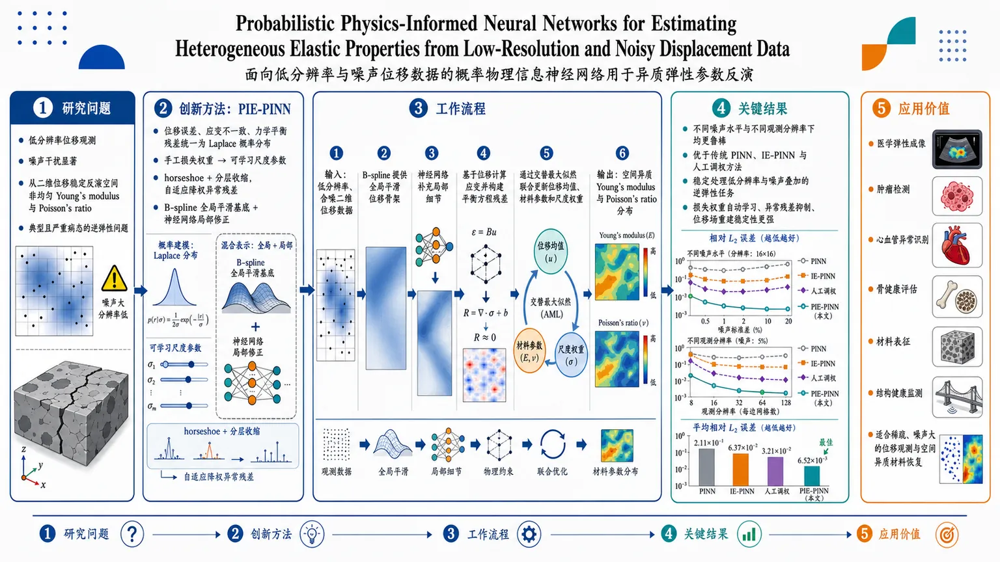
研究问题如何在位移观测分辨率很低、且伴随噪声干扰的情况下，从二维位移数据中稳定反演空间非均匀的 Young’s modulus 和 Poisson’s ratio；这是一个典型且严重病态的逆弹性问题，细节易被抹平，噪声又会在反演中被放大。创新方法提出 PIE-PINN：把位移误差、应变不一致和力学平衡残差统一建模为 Laplace 概率分布，把传统手工损失权重变成可学习的尺度参数；再用 horseshoe+ 分层收缩实现自适应降权，用 B-spline 全局平滑基底叠加神经网络局部修正，专门对抗低分辨率下的插值误差和数值微分误差。工作流程输入低分辨率、含噪二维位移数据；先用 B-spline 提供全局平滑位移骨架，再由神经网络补充局部细节；基于位移计算应变并构建平衡方程残差；将位移项、应变项和物理项写成 Laplace 似然；通过交替最大似然联合更新位移均值、材料参数和各项尺度权重；输出空间异质的 Young’s modulus 与 Poisson’s ratio 分布。关键结果在不同噪声水平和不同观测分辨率下都表现出更强鲁棒性；相较传统 PINN、IE-PINN 和人工调权方法，更能稳定处理低分辨率与噪声叠加的逆弹性任务；核心优势体现在损失权重自动学习、异常残差抑制和位移场重建稳定性上。应用价值可用于医学弹性成像、肿瘤检测、心血管异常识别、骨健康评估、材料表征和结构健康监测；尤其适合那些只能获得稀疏、噪声较大的位移观测、但又需要恢复材料空间异质性的真实场景。第一部分：核心概览
这篇研究提出 PIE-PINN，把概率建模、物理约束与低分辨率噪声反演统一到一个框架中，用于从二维位移数据恢复空间非均匀的 Young’s modulus 与 Poisson’s ratio。核心推进在于：把位移拟合、应变一致性、平衡方程残差都建模为 Laplace 分布，并用 horseshoe+ 分层尺度实现自适应加权；同时引入 B-spline + 神经网络 的混合位移表示，缓解低分辨率下的插值和数值微分误差。相较于传统 PINN、IE-PINN 和手工调权方法，这一框架更适合强噪声、强病态的逆弹性问题。
---
第二部分：结构化快速回顾
《Probabilistic Physics-Informed Neural Networks for Estimating Heterogeneous Elastic Properties from Low-Resolution and Noisy Displacement Data》（None，）
- 背景：空间非均匀弹性参数的反演属于严重病态问题；低分辨率会掩盖空间细节，噪声会在反问题中被放大。传统方法依赖高保真观测或经验性损失权重，鲁棒性不足。
- 方法：构建 PIE-PINN，将位移误差、应变差异和 PDE 残差统一为 Laplace 概率模型；位移场采用 B-spline 全局项 + 神经网络局部修正；尺度参数用 half-Cauchy / horseshoe+ 层次模型；训练采用 交替最大似然。
- 结果：摘要声称在不同噪声水平与观测分辨率下都表现出鲁棒性；可见文本没有给出具体样本量、误差表、P 值或数值提升。
- 讨论：方法的关键价值在于把“损失权重”从人工超参数变成可学习的统计尺度，并通过 B-spline 稳定低分辨率数据的梯度与残差传播。
- 局限：未进行完整 Bayesian posterior inference；当前聚焦于二维位移数据的阶段 1 估计；可见文本未展示完整实验数值。
- 结论：该框架为低分辨率、噪声污染下的异质弹性参数反演提供了更稳健的概率化 PINN 路径。
---
第三部分：逐章节冷凝解析
Abstract
Problem setting is severely ill-posed
- 关键问题被定义为：*“Estimating spatially heterogeneous elastic properties from low-resolution displacement measurements is a severely ill-posed inverse elasticity problem”*。病态来源有两层：低分辨率抹平空间细节，噪声和拟合误差会在反演中被放大。
- 这意味着反演对象不是常数参数，而是空间变化的 Young’s modulus 与 Poisson’s ratio，问题本身存在非唯一性与高敏感性。
Unified probabilistic physics model
- 核心建模方式是：*“models displacement observation, strain-discrepancy, and equilibrium residuals using Laplace distributions within a unified probabilistic model”*。
- 三类残差分别对应 数据一致性、应变一致性、物理一致性，并统一放入一个概率框架，而不是分别手工加权。
Hybrid displacement representation
- 为提高稳健性，引入 *“a B-spline-guided displacement network with a hierarchical half-Cauchy model”*。
- B-spline 提供平滑全局形状，神经网络补足局部起伏；half-Cauchy 分层尺度则控制异常残差的影响，避免少量大误差主导训练。
Alternating maximum-likelihood training
- 训练策略是 *“An alternating maximum-likelihood training strategy updates the mean through weighted residual minimization and updates the scales to adjust the loss weights”*。
- 这等价于把传统 PINN 中手动设定的损失权重，转化为可估计的统计尺度参数。
Claimed robustness
- 结论性表述为：*“Systematic case studies across varying noise levels and observation resolutions demonstrate the robustness of PIE-PINN.”*
- 可见文本未提供具体实验数值、样本量或统计检验，只给出定性鲁棒性声明。
---
1 Introduction
Why elastic-property estimation matters
- 弹性参数估计对医学成像、材料表征、结构健康评估都关键，尤其涉及 Young’s modulus 与 Poisson’s ratio。
- 文中直接指出这些参数支撑癌症检测、心血管异常识别、骨健康评估和增材制造构件评估。
Direct versus indirect estimation
- 直接法包括 nanoindentation 与 AFM，优点是物理直观，缺点是破坏性强且局部化。
- 间接法依赖位移场，如 MRE 与 ultrasound elastography，更适合医学场景，但观测通常受噪声和分辨率限制。
Three families of inverse methods
- 反演弹性的方法分为三类：data-driven、physics-based、PINN-based。
- 纯数据驱动需要大量高质量训练数据，且泛化到训练域外时不稳。
- 物理法里的 direct methods 通常只适用于简单几何或理想化假设；iterative FEM methods 计算昂贵且依赖初始化。
- PINNs 提供数据与 PDE 的折中，但逆问题比正问题更难。
Prior inverse elasticity limits
- 早期工作多假设材料空间均匀，即只估计常数参数。
- 更近期的异质材料工作仍常依赖强假设：已知内部/边界应力分布，或已知平均 Young’s modulus。
- 多数研究还默认位移观测无噪声，与真实场景不符。
IE-PINN as the immediate baseline
- 先前的 IE-PINN 证明了从噪声位移中估计弹性分布的可行性，且采用了确定性方法。
- 但其性能依赖 高分辨率位移数据，在低分辨率和噪声下会明显退化。
Manual loss weights are a bottleneck
- 传统 PINN 常把数据项与物理项写成加权和：*“These weights are commonly specified empirically”*。
- 问题在于，权重选择会导致训练不稳定、过拟合、欠拟合甚至反演失败。
Adaptive weighting and Bayesian PINNs are not enough
- 自适应加权方法试图自动学权重，但在噪声条件下仍可能失效；文中点名 SA-PINN 在噪声下表现不佳。
- Bayesian PINNs 虽然有不确定性量化优势，但对大规模逆问题常计算上不可承受。
Main contributions
- 三个贡献被明确列出：
- Robust probabilistic physics-informed neural network framework：用 Laplace 残差和 horseshoe+ 分层尺度提升鲁棒性。
- B-spline-guided neural network：缓解低分辨率下的插值与差分放大误差。
- Adaptive weighting algorithm：通过联合估计均值与尺度，获得原则化的动态加权。
- 这里的核心新意不是单一技巧，而是把概率残差建模、混合表示、自适应权重学习整合到同一逆弹性框架。
---
2 Background
#### 2.1 Physics model: Linear elasticity
2D inverse linear elasticity setting
- 问题设定为二维逆线性弹性，外力引起位移场，目标是从位移反推材料参数。
- 材料假设为空间异质且各向同性，并采用 plane stress 条件，适合薄结构平面载荷。
Strain-displacement relation
- 位移向量为 u = [uₓ, u_y]^⊤，应变向量为 ε = [εₓₓ, ε_yy, εₓy]^⊤。
- 在小应变假设下，使用线性微分算子 𝔈 建立从位移到应变的映射，见式 (1)。
Constitutive law
- 应力与应变通过材料参数 E 和 ν 联系，式 (2) 明确写出平面应力下的本构矩阵。
- 这里 E 表示抗弹性变形能力，ν 表示横向与轴向应变的耦合。
Static equilibrium
- 平衡方程要求应力散度为零，即式 (3) 的 f = 0。
- 残差力向量 f = [fₓ, f_y]^⊤ 是 PDE 约束的核心。
Residual operator notation
- 三个关系合并成残差算子：*“These equations may be written compactly in a residual operator as”* f = 𝔽ᵤ₍ᵤ,E) = 𝔽_ε(ε,E)。
- 这为 PINN 中的物理损失提供了统一接口。
#### 2.2 Physics-Informed Neural Network for Elasticity
IE-PINN two-phase strategy
- IE-PINN 被描述为两阶段：
- 用 PINN 估计 Poisson’s ratio 与 relative Young’s modulus；
- 再通过边界条件恢复 true-scale Young’s modulus。
- 当前工作聚焦于第一阶段。
Four-network formulation
- IE-PINN 使用四个网络分别近似 u, ε, E, ν，是从单一网络转向多变量分解的结构。
- 这种拆分便于分别施加数据、应变、物理和均值约束。
Four loss terms
- 损失由四项组成：data fidelity、strain discrepancy、physics consistency、mean-modulus constraint。
- 数据项是式 (5) 的 L1 误差；应变差异是式 (6)；物理残差是式 (7)；均值约束是式 (8)。
Finite-difference derivatives
- 位移与平衡方程中的空间导数不是用自动微分，而是通过 finite differences implemented through convolution operations 计算。
- 这与低分辨率观测强相关，因为数值差分对稀疏网格更敏感。
L1 norm for robustness
- 所有损失都采用 L1 而非 L2：*“Compared with L2-norm minimization, which is more sensitive to large residuals, the L1 norm provides improved robustness in the presence of gross measurement errors”*。
- 这一设计与噪声场景匹配，但仍保留了手工权重 λᵤ, λ_ε, λ_f, λ_E 的问题。
Limitations of conventional formulation
- 两个局限被明确指出：
- 权重常靠经验选取，训练会不稳定；
- 位移观测被确定性处理，没有显式建模噪声。
- PIE-PINN 就是在这两个缺口上推进。
---
3 Probabilistic Inverse Elasticity Physics-Informed Neural Network
Probabilistic reformulation
- PIE-PINN 把逆弹性问题改写成概率模型：位移观测、应变差、PDE 残差都带有显式随机残差项。
- 目标不仅是拟合均值，更是建模误差分布与权重尺度。
Residuals follow Laplace distributions
- 三类残差都采用 Laplace：位移残差 rᵤ,i、应变残差 r_ε,i、平衡残差 r_f,i。
- 这样做的直觉是：Laplace 的重尾更能容忍大误差，相比 Gaussian 更稳健。
- 与 IE-PINN 的 L1 损失保持一致，因为 Laplace 的负对数似然对应 L1 形式。
B-spline-guided displacement model
- 位移均值被写成：û(x) = Bₓ₍ₓ₎^⊤ C B_y(x) + δ̂(x;θᵤ₎。
- 其中 B-spline 负责全局平滑结构，δ̂ 负责局部修正。
- 这一混合表示是应对低分辨率的关键，因为纯神经网络容易过拟合稀疏数据，而纯 spline 又欠缺局部表达力。
Horseshoe+ hierarchical scale model
- 位移残差尺度 bᵤ,i 不直接固定，而是通过 local shrinkage ηᵢ 与 global shrinkage τ 构建层次先验。
- 文中称其为 horseshoe+ hierarchy，本质是利用强收缩 + 重尾容忍的结构，让小残差被压缩、 大残差被保留。
- 这正好适合区分“噪声导致的大偏差”和“有信息的信号变化”。
Global versus pointwise scales
- bᵤ,i 是点级尺度；b_ε 与 b_f 是全局尺度。
- 这意味着位移观测容许更细粒度的误差调节，而应变差与 PDE 残差则采用更粗粒度的统一权重。
Adaptive weighting through scale learning
- 概率模型天然给出“权重学习”：尺度越大，该项损失的惩罚越小。
- 因此，自适应加权不再是额外 heuristic，而是概率模型中的参数估计问题。
Why this matters for low resolution
- 低分辨率会放大插值误差和差分误差，强物理约束还可能把真实位移吸收到残差中，导致underfitting。
- B-spline 与 horseshoe+ 分别解决“函数表示过粗”和“残差权重失衡”两类问题。
---
4 Parameter Estimation
Bayesian inference is acknowledged but not pursued
- 模型具有明显的层次贝叶斯结构，尤其是 horseshoe+ 部分。
- 但完整后验推断会让耦合神经网络的计算负担更高，且在病态逆问题中更难稳定。
- 因此转向 negative log-joint likelihood 的最优化，而不是全贝叶斯采样。
Parameter partitioning
- 参数分成两组：
- Θ = θᵤ, C, θ_ε, θ_E：均值函数/网络/样条参数；
- Φ = bᵤ, η, τ, b_ε, b_f：尺度与收缩参数。
- 这种划分非常清晰：一组决定函数形状，一组决定每个残差项的“惩罚强度”。
#### 4.1 Negative Log-likelihood Minimization
Joint objective
- 优化目标写成式 (15)：*“min Θ,Φ [Lᵤ + L_ε + L_f + L_E]”*。
- 这表面上像普通 PINN 的加权和，但每一项都由概率模型导出，而非手工设定。
Displacement likelihood
- 位移项的负对数似然是
*“∑ log(2 bᵤ,ᵢ,ⱼ) + ∑ |ûᵢ,ⱼ - u^*ᵢ,ⱼ| / bᵤ,ᵢ,ⱼ + lH₊(bᵤ, τ, η)”*。
- 这说明位移误差越大，对应尺度越会被重新估计，从而降低异常点的支配性。
- 其中 lH₊ 是 horseshoe+ 层次带来的附加项。
Interpretation of adaptive weighting
- 在这一形式下，1 / bᵤ,ᵢ,ⱼ 就是局部损失权重。
- 权重不是外部给定，而是由数据与层次先验共同决定。
Visible truncation
- 当前可见文本在式 (16) 处截断，后续关于应变项、PDE 项和交替更新细节未出现。
- 因此无法给出更下游的数值实验、收敛表现或表格统计。
---
第四部分：深度理解与语言支持
1. 术语解析
Ill-posed inverse problem
- 指反问题同时缺少唯一性、稳定性和完备信息。
- 在这里的微妙之处是：低分辨率不只是“数据少”，而是直接破坏了区分异质材料空间变化所需的高频结构。
Laplace distribution
- 与 Gaussian 最大的差别是重尾，对应 L1 代价。
- 学术含义上，它更适合“少数大误差 + 大量小误差”的混合场景，因此比 L2 更抗异常点。
Horseshoe+ prior
- 属于强稀疏化先验，常用于“很多参数接近 0，少数参数显著非零”的情形。
- 这里的妙处在于：不是直接对材料参数做稀疏化，而是对残差尺度做分层收缩，从而实现动态权重学习。
B-spline-guided network
- 不是简单地把 spline 和网络并列相加，而是让 spline 承担“平滑全局基底”，神经网络只补“局部修正”。
- 这种分工非常适合低分辨率场，因为 spline 在稀疏采样下比纯网络更稳定。
Adaptive weighting
- 不只是“自动调权重”，而是把权重重解释为噪声尺度的后验估计或最大似然估计结果。
- 这比经验调参更强，因为它把优化问题变成统计问题。
2. 疑难查证
为什么低分辨率会让 PINN 更难？
- 低分辨率不仅减少点数，还会让位移场中的高频信息缺失。
- 对应到 PINN，数值微分会放大这种采样不足，导致 strain discrepancy 和 PDE residual 变得不可靠。
- 所以单纯增加物理项并不总是更好，反而可能把模型推向欠拟合。
为什么不是直接做全贝叶斯？
- 全贝叶斯要同时处理神经网络权重、样条系数、多个尺度参数和局部收缩变量，后验维度很高。
- 在病态逆问题中，这会带来采样慢、混合差、数值不稳定等问题。
- 因此选择 maximum-likelihood + hierarchical scale learning，是“可计算性优先”的折中。
为什么 Laplace + horseshoe+ 比单纯 L1 更进一步？
- 纯 L1 只提供稳健的误差惩罚，但不会告诉模型“哪些点应该被更强地忽略，哪些点应被认真拟合”。
- horseshoe+ 在尺度层面提供了分层调节，使得某些点的残差能被自动降权，而不是均匀惩罚。
- 这在低分辨率、噪声强、局部失配严重时尤其关键。
---
第五部分：创新评估与关联
1. 创新性判断
相较近 2-5 年相关工作的新颖性，核心在三点：
第一，逆弹性 PINN 从确定性损失转向概率残差建模
- 传统 PINN、IE-PINN、SA-PINN 大多仍停留在“一个损失函数 + 若干权重”的范式。
- PIE-PINN 把 数据项、应变项、物理项统一写成带尺度的 Laplace likelihood，把“损失权重”升级为统计意义上的噪声尺度。
第二，B-spline 与神经网络的分工设计
- 过去多数 inverse PINN 直接用纯 MLP 表示位移场。
- 这里把低分辨率下最脆弱的部分——全局平滑与局部细节——显式拆开，用 B-spline 稳定全局结构，用网络补局部残差。
- 这对需要数值微分的 PDE 约束尤其重要。
第三，horseshoe+ 让自适应加权更鲁棒
- SA-PINN 这类方法会偏向“大残差点”，但在噪声大时容易被异常值牵引。
- horseshoe+ 的重尾与强收缩组合，使模型能同时保留真正有信息的大偏差、压制无意义噪声。
- 这比单纯的 soft-attention 加权更有统计解释力。
2. 解决了前人没解决的问题
低分辨率 + 噪声 + 异质材料三重叠加
- 以前不少工作只处理其中一项或两项：高分辨率但有噪声，或低噪声但分辨率较高，或异质但附加强先验。
- 这里直接面对最难的组合情形：heterogeneous elasticity from noisy, low-resolution displacement data。
损失权重的手工依赖
- 这一直是 PINN 训练中的核心痛点。
- 新框架通过尺度参数学习，让权重来自概率模型，而不是经验调参。
模型对观测误差的显式解释
- 不是只说“误差大所以惩罚小”，而是通过 Laplace + hierarchical scale 解释误差来源及其传播方式。
- 这对后续不确定性量化和病态问题分析很有价值。
---
如果需要，我可以继续把这篇论文进一步拆成两种版本：
- 数学公式导读版（逐式解释每个方程的作用）；
- 审稿人视角版（优点、疑点、可能漏洞、可复现性检查清单）。
-
04
📊 含图深析
📄 摘要：提出分裂复值 PINN，将网络参数与潜表示放入复数域，以缓解实值 PINN 的谱偏差、表达能力不足以及对高频、振荡和相位依赖动力学的低精度问题。框架面向非线性 PDE 的前向求解与逆问题统一建模。
💡 亮点：把复数表示引入 PINN，直接针对高频和相位动力学的表达瓶颈。对复杂非线性 PDE，复值化是一条很明确的增强路线。
📖 展开分析 + 配图
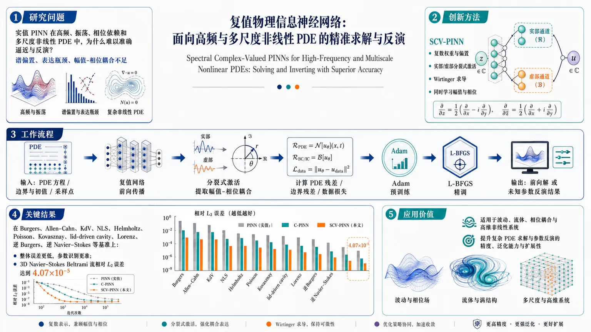
研究问题实值 PINN 在高频、振荡、相位依赖和多尺度非线性 PDE 中为何难以准确逼近与反演，如何突破谱偏置和表达瓶颈？创新方法提出 SCV-PINN：将网络权重与偏置置于复数域，采用实部和虚部分别作用的分裂式激活，结合 Wirtinger 求导，在不依赖严格全纯激活的前提下同时学习幅值与相位。工作流程输入 PDE 方程、边界/初值与采样点；复值网络前向传播预测解场；分裂式激活提取幅值-相位耦合；计算 PDE 残差、边界残差和数据损失；先用 Adam 训练，再用 L-BFGS 精调；输出前向解或未知参数反演结果。关键结果在 Burgers、Allen–Cahn、KdV、NLS、Helmholtz、Poisson、Kovasznay、lid-driven cavity、Lorenz、逆 Burgers、逆 Navier–Stokes 等基准上整体误差更低、参数识别更准；3D Navier–Stokes Beltrami 流相对 L2 误差达到 4.07×10⁻⁵。应用价值为波动、流体、相位耦合和高维非线性系统提供更强的 PINN 表示框架，可提升复杂 PDE 求解与参数反演的精度、泛化能力和扩展性。第一部分：核心概览（Overview）
这篇工作把复杂值表示系统性引入 PINN，提出 SCV-PINN：用复数权重/偏置加上分裂式激活，在不依赖严格全复解析激活的前提下，同时学习幅值与相位，以缓解实值 PINN 在谱偏置、振荡解、多尺度与相位依赖系统上的表达瓶颈。框架还统一考察了采样策略与 Adam+L-BFGS 优化，并在多类前向/反问题上验证其优于 RV-PINN 与若干变体，3D Navier–Stokes Beltrami 流达到 4.07×10⁻⁵ 的相对 (L₂) 误差，显示出较强的泛化与可扩展性。
---
第二部分：结构化快速回顾
Split Complex-Valued Physics-Informed Neural Networks for Forward and Inverse Nonlinear PDEs（None，）
- 背景：实值 PINN 在高频、振荡、相位驱动问题上受限，复杂值表示天然携带幅值-相位耦合，更适合波动、流体与向量场。
- 方法：构建 SCV-PINN，令网络参数为复数，激活函数对实部与虚部分别施加普通实值非线性；配合 Wirtinger calculus、Adam+L-BFGS 与多种采样策略。
- 结果：在 Burgers、Allen–Cahn、KdV、NLS、Helmholtz、Poisson、Kovasznay、lid-driven cavity、Lorenz、逆 Burgers、逆 Navier–Stokes 及 3D Beltrami 流上获得更低误差与更强参数识别能力；Beltrami 流相对 (L₂) 误差达 4.07×10⁻⁵。
- 讨论：性能提升主要来自表示空间扩展而非单纯工程调参；复杂值乘法带来的相位旋转与幅值调制，补足实值网络的结构性短板。
- 局限：提供文本未见完整误差表、超参数表与计算开销对比；复杂值框架虽简化了可用激活设计，仍依赖采样与优化配置。
- 结论：SCV-PINN 是面向前向与反问题的通用复杂值 PINN 扩展，尤其适合振荡、多尺度、相位依赖、高维 PDE。
---
第三部分：逐章节冷凝解析（Section-by-Section Condensing）
Abstract
Real-valued PINNs 的结构性瓶颈
实值 PINN 在spectral bias、表达能力与高频/振荡/相位依赖动力学捕捉上存在根本局限。摘要直接指出：*“conventional real-valued PINNs (RV-PINNs) often suffer from spectral bias, limited expressivity, and difficulties in accurately capturing high-frequency, oscillatory, and phase-dependent solution dynamics.”* 这一定义了全文问题意识：不是单纯训练不稳，而是函数空间本身不够富。
SCV-PINN 的核心设计
框架把网络参数与潜在表征放到complex domain，并采用split complex-valued activation functions：*“the network parameters and latent representations are defined in the complex domain”*，且 *“conventional real-valued activation functions are independently applied to both the real and imaginary components”*。这意味着不再强制构造严格全纯激活，而是用实值非线性分别处理两部分，以兼顾稳定性与表达力。
幅值—相位联合学习
摘要强调复杂值表征能同时建模amplitude and phase information，从而提升对强非线性与振荡系统的刻画：*“This formulation enables the simultaneous learning of amplitude and phase information”*。这正是复杂值网络相对实值网络的关键优势：相位不再被“压扁”为额外通道，而是成为一阶结构信息。
广泛基准验证与高维展示
验证对象覆盖面极广：*“Burgers’, Allen–Cahn, Korteweg–de Vries (KdV), nonlinear Schrödinger, Helmholtz equations on both regular and irregular domains, and Poisson equations on regular and irregular geometries, as well as Kovasznay flow at Re = 20, lid-driven cavity flow at Re = 100, the Lorenz system, inverse Burgers’ equation, and inverse Navier–Stokes equations at Re = 100.”* 另加 3D Navier–Stokes Beltrami flow，突出可扩展性。
主要结果
摘要给出最明确的数值结果：三维 Beltrami 流上相对 (L₂) 误差达到 4.07×10⁻⁵。同时总体结论是：*“consistently achieves significantly lower relative L2 errors and improved parameter identification accuracy compared with conventional RV-PINNs and several existing PINN variants.”*
---
1 Introduction
实值神经网络的优势与结构上限
引言先肯定 RVNNs 的主导地位：简单、成熟、易实现、计算高效；但随即指出在oscillatory dynamics, wave propagation, and phase-dependent interactions 上存在固有限制。关键句是：*“restricting the representation to real-valued function spaces may lead to inefficient approximations or loss of important structural information.”* 也就是说，问题不只是训练慢，而是信息表达损失。
复杂值神经网络的动机
复杂值网络通过 inputs, weights, and activations 均位于 (C)，来保留amplitude and phase。文本明确指出：*“CVNNs are particularly effective in applications involving complex-valued data and signals”*，并且即便输入是实值，也可能表现出更好的optimization behavior, generalization, and faster convergence。这里的关键是：复杂值并非仅用于复杂值数据，而是适合结构复杂的物理映射。
复杂值表示的表达能力优势
引言用 XOR 和 orthogonal decision boundaries 说明复杂值神经元的几何优势：*“a single complex-valued neuron can solve the XOR problem with strong generalization capability”*。Nitta 的工作被用来支撑复杂值单元可形成orthogonal decision boundaries，说明复杂值表示能构造更丰富的判别结构。
Liouville 定理与全纯约束
复杂值网络早期受限于 Liouville’s theorem：*“any bounded entire function must be constant.”* 这对全纯激活提出严苛限制。后续通过 Wirtinger calculus 才把训练扩展到非全纯函数：*“treating the real and imaginary components independently”*。这里真正的转折是：复杂值学习不必拘泥于传统复分析中的全纯可导性。
Split complex-valued networks 的实用性
为绕开全纯激活的束缚，提出采用 split complex-valued neural networks：*“complex-valued weights and biases are retained, while activation functions are applied separately to the real and imaginary components”*。这使得复杂值表征和实值激活兼容，兼具numerical stability 与computational efficiency。
PINNs 的谱偏置与多尺度困难
引言把 PINN 的失效原因归纳为训练不稳、损失平衡差和spectral bias：*“fully connected networks exhibit a spectral bias toward low-frequency components, limiting their ability to approximate high-frequency features.”* 这与复杂值表示的引入形成逻辑闭环：不是只调采样或损失，而是扩展function space。
采样与优化策略的系统化设计
与多数只改网络结构的工作不同，这里同时系统研究采样：六种非自适应策略——equispaced grid, uniform random, Latin hypercube, Halton, Hammersley, Sobol，加上一种自适应 RAD。优化上采用 Adam 预训练加 L-BFGS 精调：*“a first-order optimizer (Adam) … followed by a second-order quasi-Newton method (L-BFGS)”*。这表明方法不只在表示层创新，也在训练流程上做了完整配置。
核心贡献定位
贡献列表给出四个关键词：generalized SCV-PINN、split activation、hybrid optimization、sampling ablation、broad benchmark suite、higher accuracy and improved parameter-identification capability。最关键的一句是：*“one of the first generalized split complex-valued physics-informed neural network (SCV-PINN) frameworks for solving both forward and inverse nonlinear partial differential equations.”*
---
2 Why Complex-Valued Formulations Matter in Physical Problem Solving
#### 2.1 Geometric Interpretation of Complex Numbers in CVNNs
复数的几何意义
复数被写成 (z=x+iy)，并用modulus 与 argument 描述：(|z|=sqrtx²⁺y²)，(θ=arg(z))。这不只是数学背景，而是后文“幅值-相位”学习的几何基础。关键句：*“complex-valued representations inherently capture both amplitude (modulus) and phase (argument).”*
相位是波动与同步的核心信息
文本把相位直接关联到oscillatory and wave-like phenomena、rotations, interference patterns, and synchronization effects。这里的微妙点在于：实值表征只能编码“强度”，复杂值表征多了一个能描述周期相对位置的维度，这对 PDE 的解尤其重要。
#### 2.2 Motivation for Complex-Valued Representations
复杂乘法引入真实而必要的耦合
实数乘法和复数乘法的差别被明确写出：*“the product of two complex numbers … introduces a coupling between real and imaginary parts”*。对应公式说明，复数乘法同时实现amplitude modulation 与 phase rotation。这比把实部、虚部分开建模更接近物理中的耦合关系。
极坐标形式揭示幅相结构
用 (z=r eⁱθ) 后，乘积变成 (r₁ᵣ₂ eⁱ⁽θ₁₊θ₂₎)。这意味着复杂值层的线性操作天然在做振幅缩放与相位叠加，非常适合波动系统。
#### 2.3 Complex Numbers as Vector Field Representations
复函数与二维向量场的对应
定义 (f(z)=u(x,y)+iv(x,y))，则实部、虚部分别对应向量场的两个分量：*“the real and imaginary parts of f correspond directly to the components of the vector field.”* 这使复值表示不只是标量回归，而是二维场的联合编码。
物理场中的结构保真
该节强调在fluid dynamics, electromagnetic theory, and transport phenomena 中，速度、通量、力等天然是向量场。复杂值形式可把它们压缩进一个函数表示中，保留coupled multi-dimensional behaviors。这对应 PINN 对守恒结构的保真需求。
#### 2.4 Physical Interpretation: Complex Representation of Fluid Streamlines
流场与复势的统一表示
二维不可压流中，速度场 (u(x,y)=(u,v)) 可表示为 (f(z)=u+iv)。进一步，复势 (W(z)=φ+iψ)，其中 (φ) 是velocity potential，(ψ) 是stream function。关键句：*“The streamlines of the flow are given by the level curves ψ(x,y)=constant.”*
为什么这对 PINN 重要
复值形式能够统一表示magnitude and directional information，并自然刻画vortical structures, wave propagation, and multi-scale interactions。文本明确把它与“preserving the intrinsic coupling”联系起来：相较于分别处理速度分量，复杂值表示更贴近物理结构。
---
3 Preliminary
#### 3.1 Complex-valued Neural Networks (CV-NNs)
历史障碍来自全纯限制
早期 CVNN 的困难被归结为 Liouville’s theorem 与全纯约束。关键句：*“the use of standard holomorphic formulations was seen as restrictive”*。也就是说，复杂值网络不是不能学，而是传统复分析框架太窄。
Wirtinger calculus 提供可训练性
后续通过 Wirtinger calculus 解决：*“provides a generalized gradient framework for nonholomorphic functions”*。这一步把复杂值模型从“理论上优雅但难训练”变成“可通过自动微分和梯度下降优化”。
#### 3.1.1 Liouville’s Theorem
几个基础定义
给出 analytic, entire, bounded 的定义，构成后面定理链条。这里的作用不是新理论，而是把“全纯激活为何受限”讲清楚：在整个复平面上既有界又全纯的函数只能是常数。
Liouville 定理的核心命题
定理 3.3 明确陈述：*“If a function f: C→C is entire and bounded, then f must be constant.”* 这直接解释了为何复杂值激活若要求全局全纯且有界，会严重限制表达能力。
证明逻辑
证明通过泰勒展开与 Cauchy 积分公式导出系数 (aₖ) 上界，随后令 (r→infty) 得出所有高阶系数趋零，故函数为常数。证明的学术意义在于：复杂值网络不能简单照搬实值激活的“有界非线性”思路。
广义 Liouville 定理与不可回避的密度性质
定理 3.4 表明非恒定整函数会“arbitrarily close to every complex number”，即不能回避复平面上的任一点。这说明复杂解析函数具有很强的值域扩散性，也侧面解释了为何全纯约束难以用于受控学习。
调和函数的极值约束
后续的定理 3.5–3.8 把harmonic function 的有界性、平均值性质、最大值原理串联起来：非恒定调和函数不能在内部取最大/最小。这些基础结论为复值/实部-虚部拆分建模提供理论背景。
#### 3.1.2 Wirtinger Calculus for Complex-Valued Optimization
把复导数拆成两个方向
Wirtinger 导数定义为：(partial f/partial z) 与 (partial f/partial bar z)。关键句：*“the Wirtinger formulation allows differentiation of more general complex-valued mappings.”* 这比传统复导数更适合机器学习中的非全纯损失。
与实部虚部梯度的对应关系
公式给出 (partial f/partial x) 与 (partial f/partial y) 可由 Wirtinger 导数重写，说明复值反向传播可以落回实值自动微分框架。
全纯情形只是特例
当满足 Cauchy–Riemann 条件时，(partial f/partial bar z=0)。这表明全纯网络只是 Wirtinger 框架下的一个特例，而不是训练复杂值模型的必要前提。
与 SCV-PINN 的兼容性
该部分最后的关键落点是：*“maintaining compatibility with standard automatic differentiation and optimization procedures”*。也就是 split complex 方案的工程价值——复杂值思想不必带来复杂训练栈。
#### 3.1.3 Classification of Complex-Valued Neural Networks
两大类复杂值网络
这里把 CVNN 分为 fully complex-valued neural networks 与 split complex-valued neural networks。前者参数与激活都在复域，后者保留复权重，但激活分别作用于实部与虚部。
全复杂值网络的优劣
全复杂值模型能自然保留amplitude and phase information，但问题也明显：*“high computational complexity and difficulties associated with constructing holomorphic activation functions.”* 这正是 split 方案出现的背景。
Split 方案的设计动机
split 模型的核心是：保留复数参数的表示能力，同时用普通实值激活规避全纯限制。后续 SCV-PINN 的设计显然建立在这一类上。
> 备注：提供文本在 3.1.3 处截断，后续章节标题与实验细节未出现，因此无法继续逐章冷凝。
---
第四部分：深度理解与语言支持（Understanding & Nuance）
1. 关键术语解析
Spectral bias
指神经网络优先学习低频成分，较难拟合高频、尖峰或快速振荡结构。这里不是“拟合不够好”这么简单，而是训练动力学本身对频率有偏好。PINN 在波动 PDE 上常因此先学到平滑背景，再迟迟补不上局部振荡。
Split complex-valued activation
不是复解析激活，而是把输入拆成实部与虚部，分别施加普通实值非线性。术语中的 split 关键在于“分开处理但保留复数参数结构”，属于一种工程上可训练、理论上规避全纯约束的折中。
Wirtinger calculus
一种处理复变量的“广义微分”工具。语境里它的核心价值不是数学优雅，而是允许对非全纯损失做梯度优化，并与自动微分兼容。对于深度学习而言，它比传统复分析更实用。
Collocation points
PINN 中用于在物理域内强制满足 PDE 残差的采样点。这里的微妙区别在于：它们不是监督数据点，而是物理约束点；采样方式直接影响残差分布与训练稳定性。
Residual-based distribution (RAD)
一种自适应采样策略，把更多点放到残差高的区域。与均匀采样相比，它更像“补漏洞”机制，尤其适合边界层、奇异点和局部高频结构。
2. 疑难查证：复杂概念的直观解释
为何复杂值表示能改善振荡 PDE？
振荡解的本质往往包含相位。实值网络若只从数值幅度逼近，就相当于用“大小”间接猜“波的位置”；复杂值网络则把相位作为显式状态变量，相当于直接学习波的“步调”和“方向”。
为何全纯激活反而成问题？
全纯函数必须满足很强的解析约束，且受 Liouville 定理等限制。对神经网络而言，这意味着可用激活形状很窄，难以同时兼顾有界性、非线性和丰富表达。split 设计把这一矛盾拆开：参数在复域，非线性在实域。
为何 PINN 需要采样策略？
PINN 的损失由数据项、边界项和 PDE 残差项组成。若采样点分布不合理，网络会在某些区域“看不见”物理约束，导致局部误差积累。RAD 的意义就在于动态把计算资源投向“最难学”的区域。
---
第五部分：创新评估与关联（Synthesis & Novelty）
1. 创新性判断
相对于近 2–5 年工作的新颖点
- 从“复杂值 PINN”走向“分裂式复杂值 PINN”
过去相关工作多集中在全复杂值网络、特殊复解析激活或个别 PDE 场景；这里把split complex-valued representation 作为统一框架，降低了复分析门槛，也增强了可训练性。
- 把“表示能力问题”作为 PINN 核心矛盾处理
很多 PINN 改进集中在loss weighting、adaptive sampling、transformer、gradient-enhanced 等训练工程层面；这里直接扩展函数空间到复域，针对的是spectral bias 与相位表达不足这一更底层问题。
- 同时覆盖前向与反问题
不是只做解 PDE 的 forward task，而是把parameter identification 也纳入统一框架，说明方法不仅能逼近解，还能反演未知物理参数。
- 系统评估采样策略与激活函数
六种非自适应采样 + RAD 的组合比较，使方法不止是“提出一个模型”，而是给出更完整的训练经验图谱。
- 验证范围异常广
从 Burgers、Allen–Cahn、KdV、NLS、Helmholtz，到流体的 Kovasznay、lid-driven cavity、Lorenz、逆 Navier–Stokes，再到 3D Beltrami flow，覆盖了实值、复值、规则/不规则几何、低维/高维、正问题/反问题。这类横向广度在 PINN 文献中具有较强辨识度。
2. 解决了前人没彻底解决的问题
- 实值 PINN 在高频/相位问题上的表达不足
- 复杂值网络全纯激活难构造、训练不实用
- PINN 改进多停留在训练技巧，未触及表示空间扩展
- 前向与反问题缺少统一、可复用的复杂值框架
- 高维非线性系统上的稳定性与可扩展性不足
3. 创新强度的判断
综合来看，创新属于中高强度的方法框架创新：
不是提出全新 PDE 理论，而是把复数表示、分裂式激活、混合优化、采样系统整合成可迁移的 PINN 方案，并在多个高难度基准上验证有效。最有价值的部分，是把“复杂值”从信号处理式的附加技巧，提升为解决 PINN 谱偏置与相位建模瓶颈的结构性手段。
-
05
📊 含图深析
📄 摘要：提出 AB-PINNs：在物理信息神经网络中引入可学习子域，使域分解在训练中动态演化并贴合未知解的内在结构。局部网络负责细尺度特征，全局网络学习大尺度结构；同时借鉴自适应网格思想，在残差高值区域动态新增子域。
💡 亮点：AB-PINNs 把子域本身变成可学习对象，并按残差实时扩容。对复杂 PDE，域分解不再是静态先验，而是训练过程的一部分。
📖 展开分析 + 配图
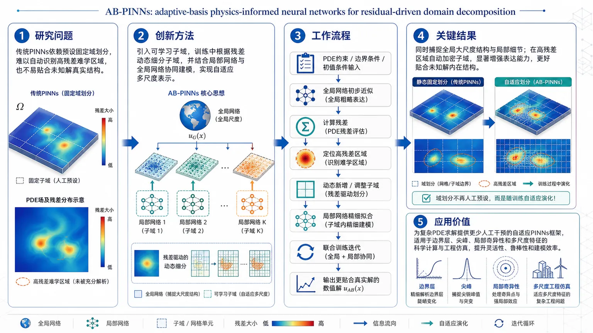
研究问题传统 PINNs 在面对复杂、多尺度、局部剧烈变化的 PDE 解时，通常依赖预先固定的域划分，难以自动识别残差高的难学区域，也不容易贴合未知解的真实结构。创新方法提出 AB-PINNs，将“可学习子域”引入物理信息神经网络；用残差驱动的动态域分解替代静态划分，在训练过程中根据高残差区域主动细分子域，并结合局部网络与全局网络协同建模，实现自适应的多尺度表示。工作流程输入 PDE 约束、边界/初值条件后，先由全局网络给出整体近似；再计算各区域残差，定位误差集中的高残差区域；对这些区域动态新增或调整子域，交由局部网络精细拟合；局部网络与全局网络联合训练，持续迭代更新，最终输出更贴合真实解的数值解。关键结果域分解不再是人工预设，而能在训练中动态演化；模型可同时捕捉全局大尺度结构与局部细节；在高残差区域自动加密子域，显著增强对难学区域的表达能力，并更好贴合未知解的内在结构。应用价值为复杂 PDE 求解提供更少人工干预的自适应 PINNs 框架，适用于具有边界层、尖峰、局部奇异性或多尺度特征的科学计算与工程仿真，可提升求解灵活性、鲁棒性和建模效率。核心概览（100字内）
这篇工作提出 AB-PINNs，把可学习的子域引入物理信息神经网络，并结合残差驱动的动态域分解与局部/全局协同学习，用于更自适应地拟合未知解结构，属于 PINNs 与自适应域分解方向。
方法要点
- 在 PINNs 中引入可学习子域，使域分解不再固定，而是在训练过程中动态演化。
- 采用局部网络捕捉细尺度特征，配合全局网络学习大尺度结构。
- 借鉴自适应网格思想，在残差较高区域动态新增子域。
- 通过残差驱动的域分解，让模型更贴合未知解的内在结构。
关键结果
- 方法能够让域分解在训练中动态调整，而非预先静态设定。
- 通过局部与全局网络协同，模型可同时处理多尺度结构。
- 在残差高值区域主动细分子域，有助于聚焦难学区域并提高表示能力。
- 摘要明确表明其目标是让 PINNs 更好地贴合未知解的内在结构；具体性能提升幅度摘要未详述。
创新性判断
- 可能的新颖点在于：把自适应网格/自适应细化思想引入 PINNs 的域分解机制，并且不是静态划分，而是训练中动态演化。
- 另一潜在创新是将局部网络 + 全局网络结合到残差驱动框架中，实现多尺度建模。
- 相较同方向固定分区的域分解 PINNs，这种可学习子域设计可能更灵活、更能适应复杂解结构。
- 以上判断基于摘要，具体相对优势与实现细节摘要未详述。
-
06
📊 含图深析
📄 摘要：研究空间变化的反铁磁纹理与常规 s 波超导耦合时的配对形式。由于反铁磁性抑制自旋单重态配对，加上纹理降低局域对称性，超导主要分布在反铁磁畴之间，并出现自旋三重态成分以及超电流诱导力矩。
💡 亮点：反铁磁纹理把常规 s 波超导推向畴壁区域，并自然生成三重态配对成分。结果直接指向可由纹理与超电流共同操控的新型超导器件。
📖 展开分析 + 配图
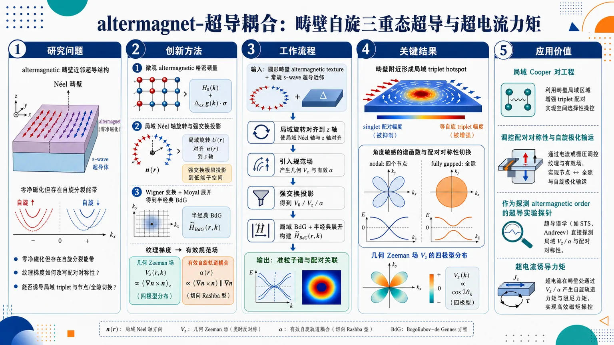
研究问题在零净磁化但具有自旋分裂能带的 altermagnet 中，空间非均匀磁纹理，尤其是畴壁，会如何改写近邻超导的配对对称性、准粒子谱和电流响应？核心要回答的是：纹理梯度能否把原本以 singlet 为主的超导配对，重构为局域 triplet，并产生可观测的节点/全隙切换与力矩效应。创新方法提出一条从微观 altermagnetic 哈密顿量到局域超导有效理论的完整链条：先旋转到局域 Néel 轴基底，再在强交换耦合下投影到低能子空间，最后用 Wigner 变换与 Moyal 展开建立半经典 BdG 方程。Aha 的关键点是把纹理梯度显式转化为两类新场：独特于 altermagnet 的几何 Zeeman 场 Vz，以及纹理诱导的有效自旋轨道耦合 α，从而直接驱动 equal-spin triplet hotspot 的出现。工作流程输入是具有圆形畴壁的 altermagnetic texture 与常规 s-wave 超导近邻。首先构建含亚晶格-自旋锁定的微观哈密顿量；然后用局域旋转把磁序对齐到 z 轴，引入规范场；接着在强交换极限投影到低能子空间，得到 V0、Vz 和 α；再写成局域 BdG 形式并做相空间半经典展开；最后计算局域准粒子谱与配对关联，得到畴壁附近的 triplet 分布、节点/全隙切换，以及可能的超电流诱导扭矩。关键结果畴壁附近 singlet 配对被明显压制，而由纹理梯度诱导的 equal-spin triplet 在壁上形成局域热点，构成 domain wall spin-triplet superconductivity。准粒子谱对畴壁方位高度敏感：某些角度出现四个节点，另一些角度则完全开隙，实现 nodal 与 fully gapped 的局域切换。Vz 呈现四极型角分布，证明 altermagnetic 的轨道对称性能直接写入超导谱结构。应用价值该研究为利用 altermagnetic 畴壁进行局域 Cooper 对工程提供了新平台，可用于调控超导配对对称性与自旋极化输运。由于 altermagnet 兼具零净磁化和显著自旋分裂，它比铁磁体更“干净”，有望成为超导自旋电子学中的可控元件，也可作为探测 altermagnetic order 的超导实验探针。核心概览
这篇工作把altermagnetic texture 引入超导近邻效应框架，建立了从纹理梯度到有效 Zeeman 场、spin-orbit 场、以及配对对称性重构的完整理论链条。核心结果是：在圆形domain wall附近，singlet 配对被压制，而由纹理诱导的局域 triplet hotspots 主导，形成domain wall spin-triplet superconductivity；同时，谱函数在不同壁上位置可在nodal 与fully gapped 之间切换。该工作把 altermagnet 的轨道型自旋劈裂、量子度量几何与超导配对直接联系起来，补足了过去主要停留在均匀极限的研究。
---
结构化快速回顾
Altermagnetic spin textures coupled to superconductors: Domain wall spin-triplet superconductivity and supercurrent-induced torques（None）
- 背景：altermagnet 兼具零净磁化与自旋分裂能带，但空间纹理对超导近邻效应的影响长期缺位；域壁在真实材料中普遍存在。
- 方法：从含sublattice-spin locking 的微观模型出发，做旋转到局域自旋基底的变换，再在强交换耦合下投影到低能子空间；随后用 Wigner transform + Moyal expansion 建立局域半经典 BdG 理论。
- 结果：纹理诱导出两个关键场：几何 Zeeman 场 (V_z) 与emergent spin-orbit coupling (α)。在径向域壁上，低能配对主要变成equal-spin triplet，并在不同角位置出现triplet hotspots；准粒子谱可从节点态切换到全隙态。
- 讨论：altermagnetic 的四重对称轨道结构使 (V_z) 呈现四极型角分布，导致配对与谱结构强烈依赖壁上方向；这类效应在普通反铁磁极限中消失。
- 局限：所用近似是local semiclassical approximation，要求纹理变化尺度慢于费米波长与相干长度；当前提供文本在 VI 节中段截断，超级电流致扭矩的完整推导未见。
- 结论：altermagnetic 域壁可作为局域工程 Cooper pair wave function 的平台，并可能成为探测 altermagnetic order 的超导探针。
---
第一部分：核心概览
该文提出一套针对空间非均匀 altermagnet 的超导近邻理论：纹理梯度在低能子空间中同时生成几何 Zeeman 场与有效自旋轨道耦合，从而把原本的 singlet 配对显著重整为局域 odd-parity triplet。对圆形径向域壁的分析显示，配对在壁上形成角向依赖的triplet hotspots，并伴随节点/全隙的局域转换；反向效应则预示supercurrent-induced quadrupolar torque。相较近年多聚焦均匀 altermagnet 或原子级缺陷的工作，这里首次把纹理几何与超导配对对称性系统耦合起来。
---
第二部分：结构化快速回顾
背景
- altermagnet 的净磁化为零，但能带存在由轨道对称性决定的自旋分裂。
- 真实材料中domain wall 普遍存在，而纹理对超导近邻效应的作用尚未系统处理。
- 超导与磁纹理耦合时，局域对称性下降可能诱导非常规配对。
方法
- 建立哈密顿量
[
hat h(mathbf r,hatmathbf p)=ǎrepsilon₀,ₕₐₜₘₐₜₕbf ₚ+tₓ,ₕₐₜₘₐₜₕbf ₚτₓ₊ₜz,ₕₐₜₘₐₜₕbf ₚτ_z+Jτ_zmathbf n(mathbf r)ḑotmathbf s-μ
]
- 旋转到局域 Néel 轴后，引入gauge field (Aᵢ₍mathbf r))。
- 在 (J) 最大时投影到 (Sequivτ_z s_z=-1) 子空间。
- 用 Wigner transform 与 Moyal product 做局域半经典近似。
结果
- 得到两个纹理诱导项：scalar potential (V₀) 与 unique to altermagnet 的 Zeeman field (V_z)。
- 径向域壁上出现
[
α(mathbf r)propto φ'(r)hatmathbf r,quad V_z(r,ḩi)propto φ'(r)²o̧s2ḩi
]
- 配对主导地变成equal-spin triplet，且主要局域在域壁附近。
- 准粒子谱在某些角度出现 four nodal points，另一些角度则完全开隙。
讨论
- (V_z) 继承了 altermagnet 的d-wave 轨道对称性，角向上呈四极分布。
- 纹理诱导 triplet 不只是“有无”，还受动量方向选择性控制。
- 相比 ferromagnet，altermagnet 不引入显著 stray field，却额外提供 (V_z) 这一独特通道。
局限
- 结果依赖慢变纹理与局域近似。
- 强交换投影 (J) 需远大于其它能标。
- 当前给出的文本未显示超级电流扭矩的完整后续推导。
结论
- altermagnetic domain wall + superconductor 是局域调控 Cooper 对称性的有效平台。
- 可用于识别 altermagnetic order，并发展superconducting spintronics。
---
第三部分：逐章节冷凝解析
Abstract
纹理与超导近邻的核心命题
altermagnetic textures 会强烈改写超导配对结构，核心机制是“superconductivity predominantly impacts the regions between altermagnetic domains”。这一判断建立在两个耦合效应上：一是 altermagnet 对spin-singlet pairing 的破坏，二是纹理导致的局域对称性降低。对应原文关键表述为：*“the form of Cooper pairs in spatially varying altermagnets coupled to conventional s-wave superconductors”*。结论不是简单的配对削弱，而是配对空间分布被重排到域间区域。
triplet hotspots 与局域谱重构
在平面径向域壁中，纹理诱导的两类场——emergent Zeeman field 与 spin-orbit fields——共同产生“spatially separated triplet hotspots”。具体物理图像是：域壁处的局域配对由 singlet 转向 triplet，并且不同壁上位置的配对强度不均匀。对应引述：*“emergent Zeeman and spin-orbit fields create spatially separated triplet hotspots and transitions between nodal and fully gapped superconducting regions”*。这里已经预告了后文的节点/全隙切换。
逆效应：电流驱动扭矩
还存在一个反向耦合：超电流可以产生quasiparticle-mediated quadrupolar torque，并且“inherits the symmetry of the altermagnetic order”。这说明 altermagnet 纹理不仅影响超导，超导电流也能反过来重塑磁纹理。原文表述为：*“a supercurrent generates a quasiparticle-mediated quadrupolar torque”*。
学术定位
贡献在于把 altermagnet 从“均匀能带劈裂”的讨论推进到“空间纹理—超导配对—电流扭矩”的完整闭环。对应总结语是：*“accounting for spatial inhomogeneities in the altermagnetic order parameter is essential”*。
---
I Introduction
磁纹理是决定性自由度
域壁等大尺度纹理在磁体中普遍存在，根源是相互作用竞争、形成过程中的复杂动力学及 pinning。关键陈述是：*“Large-scale spatial textures in the magnetic order parameter, such as domain walls, naturally occur in many magnetic materials”*。这一步把“理想均匀磁体”与“真实纹理磁体”区分开来。
纹理会诱发有效电动力学
在铁磁与反铁磁中，(mathbf n(mathbf r)) 的空间变化已知会重整巡游电子跃迁，并产生emergent electrodynamics。这一背景为 altermagnet 的纹理效应铺路。对应语句：*“spatial gradients in n alter the effective hopping amplitudes of the itinerant electrons”*。要点不是磁场本身，而是几何梯度。
altermagnet 的独特性：零净磁化但能带劈裂
altermagnet 通过对称性保持净磁化为零，同时打破非相对论自旋简并。关键原句：*“symmetry guarantees that the net magnetization vanishes, the non-relativistic spin-degeneracy of the electronic bands is spontaneously split”*。这一区别使其成为兼具无 stray field 与自旋分裂的候选材料。
均匀极限之外的空白
大多数工作处理的是 ( mathbf n(mathbf r)=mathbf n₀ ) 的均匀极限；而慢变纹理对电子谱的影响仅在最近才被注意到。原文强调：*“most works have focused on the homogeneous limit”*，并指出“consequences of slowly varying altermagnetic textures”才刚被触及。由此引出本工作的必要性。
两类纹理效应：几何 Zeeman 场与 emergent SOC
对 coplanar texture，低阶效应分成两支：
1) emergent Zeeman field (V_z)，altermagnet 独有，反铁磁极限下消失；
2) emergent spin-orbit coupling (α(mathbf r))，即使在反铁磁极限仍保留。
原文总结非常清楚：*“first, there is an emergent Zeeman field, Vz, which is unique to altermagnets”*；*“Second, the spatial variation in n induces a spin-orbit coupling term”*。这一区分是全文的理论支点。
径向域壁的几何图像
图 1 的圆形 Néel 域壁给出最具体的示例：(V_z) 呈“四重号变号”的多极图样，而 (α(mathbf r)) 局域在壁上并径向指向。关键描述：*“for a d-wave altermagnet, Vz exhibits four sign changes upon encircling a domain wall”* 与 *“it is oriented perpendicular to the domain wall”*。这说明轨道对称性直接写入实空间场结构。
超导近邻中 singlet 被压制、triplet 被激发
在 s-wave singlet 超导近邻作用下，altermagnet 会压制 singlet 配对，但纹理产生的 (α≠ 0) 可局域诱导 triplet。原文：*“the altermagnet lifts the spinful Kramers degeneracy, it suppresses the singlet pairing correlations”*；*“spatial variations in its order parameter lead to α ≠ 0, which locally induces triplet components”*。这一步把磁纹理直接转化为配对对称性工程。
与铁磁域壁超导的关系
现象在形式上“reminiscent of domain wall superconductivity discussed in ferromagnets”，但 altermagnet 的独特处在于无显著 stray fields、却有 (V_z) 与 triplet hotspots。原文最后把其定位为“a very versatile alternative to ferromagnets”。这正是新物理窗口。
---
II Normal-state
微观模型的组成
起点是
[
hat h(mathbf r,hatmathbf p)=ǎrepsilon₀,ₕₐₜₘₐₜₕbf ₚ+tₓ,ₕₐₜₘₐₜₕbf ₚτₓ₊ₜz,ₕₐₜₘₐₜₕbf ₚτ_z+Jτ_zmathbf n(mathbf r)ḑotmathbf s-μ
]
其中 (τ) 作用在 sublattice 空间，(mathbf s) 作用在 spin 空间。关键结构是 (Jτ_zmathbf nḑotmathbf s)，它把亚晶格与自旋锁定在一起。
d-wave altermagnet 的具体动力学形式
为 concreteness，取
[
ǎrepsilon₀₌ǎrrho₀₍hat pₓ²⁺hat p_y²⁾,quad
tₓ₌ǎrrhoₓ₊ǎrrho₃₍hat pₓ²⁺hat p_y²⁾,quad
t_z=ǎrrho_z(hat pₓ²⁻hat p_y²⁾
]
这里 (t_z) 承载 d-wave 的轨道各向异性。该项决定了后文 (V_z) 的四重角向结构。
旋转到局域 Néel 轴
选取 (U(mathbf r)) 使
[
U^dagger[mathbf n(mathbf r)ḑotmathbf s]U=s_z
]
这样纹理进入哈密顿量的方式变成了动量的自旋依赖规范场
[
hatboldsymbolπ=hatboldsymbol p-mathbf A(mathbf r),quad Aᵢ₌boldsymbolαᵢ₍mathbf r)ḑotmathbf s
]
这一步把几何纹理转成规范场问题。原文的关键词是 *“shift of the momentum operator by a spin-dependent gauge field”*。
强交换耦合投影到低能子空间
取 (J>0) 且为最大能标，投影到 (Sequivτ_z s_z=-1) 子空间。低能有效哈密顿量变为
[
hat hₘ̊ ₚᵣₒⱼ=ǎrepsilon₀₊!t_zσ_z+ǎrrho₀V₀₍mathbf r)+ǎrrho_zV_z(mathbf r)σ_z+hat hₘ̊ SOC
]
这一步极关键：原本的四维自旋-亚晶格结构化约成低能 Pauli (σ) 结构。
几何势 (V₀) 与 unique (V_z)
定义
[
V₀₌hbar²δⁱjgᵢⱼ,qquad V_z=hbar²ηⁱjgᵢⱼ
]
其中
[
gᵢⱼ=partialᵢmathbf nḑotpartialⱼmathbf n/4,quad ηⁱj=diag(1,-1)
]
这使 (gᵢⱼ) 成为纹理的real-space quantum metric。核心区别是：(V₀) 类似标量几何势，而 (V_z) 是altermagnet 独有的局域 Zeeman splitting，反铁磁极限 (ǎrrho_z=0) 时消失。对应原文：*“Vz is unique to the altermagnet and vanishes in the antiferromagnetic limit”*。
纹理诱导自旋轨道耦合
横向规范场生成
[
hat hₘ̊ SOC=-ǎrrho₃sumᵢ₌ₓ,yłeft[hat pᵢ,αᵢ^xσₓ₋hat pᵢ,αᵢ^yσ_yi̊ght]
]
这一项提供spin mixing。尤其重要的是它在投影后仍保留，意味着纹理不仅产生有效势，还直接改变自旋-动量锁定。
物理含义
这一节的核心不是公式本身，而是两个低能场的分工：
- (V_z)：体现 altermagnet 轨道对称性的几何自旋分裂；
- (hat hₘ̊ SOC)：体现纹理梯度导致的局域自旋混合。
后者是局域 triplet 的来源，前者决定谱的方向选择性。
---
III Superconducting state
近邻超导取常规 singlet
设置超导配对为
[
hatΔ(mathbf r)propto i s_y
]
并以 s-wave spin-singlet 为起点。关键句是：*“a conventional, s-wave spin-singlet state”*。
亚晶格结构只允许某些 singlet 形式幸存
由费米反对称性，配对矩阵前因子可取 (τ₀,τₓ,τ_z)。但 (τ₀ i s_y) 与 (τ_z i s_y) 会把 (S=-1) 与 (S=+1) 混起来，在低能投影后消失；只有 (τₓ i s_y) 直接作用于低能态并存活。核心结论：*“The inter-sublattice singlet, τx isy, pairs the low-energy states directly and survives”*。
低能 BdG 形式
因此采用
[
hatΔ(mathbf r)=Δ(mathbf r)τₓ i s_y
]
投影后对应 (-iσ_y) 的标准 singlet 形式。BdG 哈密顿量写成
[
hatmathcal Hₘ̊ BdG=
beginpmatrix
hat hₘ̊ ₚᵣₒⱼ & Δ(-iσ_y)
-Δ^*(-iσ_y)&-[hat hₘ̊ ₚᵣₒⱼ(-hatmathbfΠ)]^T
endpmatrix
]
这说明纹理场和超导配对在低能子空间中是并列耦合项。
纹理决定局域配对的自旋依赖
关键预期是：*“the texture and the altermagnetic form factor control the local spin dependence of the induced pairing correlations”*。也就是说，配对自旋结构不再由超导单独决定，而被 altermagnetic texture 共同塑形。
---
IV Nambu-space Green’s function
径向域壁的具体参数化
选取平面径向 Néel 域壁
[
mathbf n(mathbf r)=big(o̧sφ(r),sinφ(r),0big),quad
φ(r)=fracπ2tanh!łeft[fracr-R₀wi̊ght]
]
其中 (R₀) 是壁半径，(w) 是壁宽。这里的具体函数形式非常重要，因为后面所有局域场都由 (φ'(r)) 控制。
长程规范场可被局域旋转消去
取 (W(mathbf r)=e⁻ⁱφ⁽r⁾σ_z/²) 后，长程部分被移除，剩下
[
boldsymbolα(r)=hbarǎrrho₃φ'(r)hatmathbf r
]
原文对应：*“the emergent spin-orbit coupling simplifies”*。这说明在径向壁上，SOC 场指向径向，且严格局域在壁附近。
简化后的 normal-state Hamiltonian
得到
[
hat hₘ̊ ₚᵣₒⱼ=ξ(mathbf r,hatmathbf p)σ₀₊b_z(mathbf r,hatmathbf p)σ_z+frac12hatmathbf p,boldsymbolα(r)σₓ
]
其中
[
ξ=ǎrrho₀hatmathbf p²⁺ǎrrho₀V₀₍ᵣ₎₋μ,quad V₀₍ᵣ₎₌frachbar²4φ'(r)²
]
以及
[
b_z=ǎrrho_z(hatmathbf pḑotηhatmathbf p)+ǎrrho_zV_z(r,ḩi),quad
V_z=frachbar²4φ'(r)²o̧s2ḩi
]
这组式子把径向壁的角向各向异性写得极清楚：(V_zproptoo̧s 2ḩi)，因此是四极型。
Gor’kov 方程与相空间形式
用 Wigner 变换把 Gor’kov 方程写成
[
(iømegaₙ₋mathcal Hₘ̊ BdG)starmathcal G=1
]
然后在纹理缓变条件下保留 Moyal 展开的最低阶，得到
[
mathcal G(mathbf R,mathbf p;iømegaₙ₎approx [iømegaₙ₋mathcal Hₘ̊ BdG(mathbf R,mathbf p)]⁻¹
]
原文关键词是 *“local, semiclassical approximation”*。这一步是后文解析配对和谱的技术基础。
近似成立条件
成立前提是 (V₀,V_z,α) 在费米波长和超导相干长度尺度上变化缓慢。并且“the leading order at which texture effects enter” 已被保留下来，所以这一近似不是粗糙降维，而是保留了纹理效应的最低非平凡阶。
---
V Quasiparticle spectrum
局域准粒子谱的两支结构
局域 BdG 本征能量为
[
E_±(mathbf p)=Big[Δ²⁺ξ²⁺αₘₐₜₕbf ₚ²⁺b_z²
± 2sqrtξ²⁽αₘₐₜₕbf ₚ²⁺b_z²⁾⁺Δ² b_z²Big]¹/²
]
这里 (αₘₐₜₕbf ₚ=mathbf pḑotboldsymbolα(R))；对径向壁有
[
αₘₐₜₕbf ₚ=hbarǎrrho₃φ'(R)p_R
]
因此谱直接依赖径向动量 (p_R)。
节点条件非常严格
节点出现需要同时满足
[
αₘₐₜₕbf ₚ=0,qquad b_z²⁼ξ²⁺Δ²
]
也就是说，既要落在 SOC 消失的动量方向上，又要满足 altermagnetic splitting 与超导能隙的特定匹配。原文对应：*“nodes only arise if simultaneously αp = 0 and bz² = ξ² + Δ²”*。
角位置决定节点或全隙
在 (ḩi=0) 处，四个 nodal points 出现；在 (ḩi=π/4) 处，谱完全开隙。图 2 的关键信息是：相同的域壁，不同角位置给出不同的谱拓扑。原文明确写出：*“At χ = 0, four nodal points appear ... At χ = π/4, the quasiparticle spectrum is fully gapped”*。
helicity basis 揭示配对通道
局域 normal-state 哈密顿量
[
hₘ̊ ₚᵣₒⱼ=ξσ₀₊αₘₐₜₕbf ₚσₓ₊b_zσ_z
]
的本征态定义 helicity basis，能量为 (ξ+słambdaₘₐₜₕbf ₚ)，其中
[
łambdaₘₐₜₕbf ₚ=sqrtb_z²⁺αₘₐₜₕbf ₚ²
]
这是判断配对是 intra-helicity 还是 inter-helicity 的自然基底。
有效配对在单一 helicity 带中变成 odd-parity
转到 helicity 基底后，(Δₘ̊ ₕₑₗ) 具有矩阵形式
[
Δₘ̊ ₕₑₗ=fracΔłambdaₘₐₜₕbf ₚ
beginpmatrix
αₘₐₜₕbf ₚ & -b_z
b_z & αₘₐₜₕbf ₚ
endpmatrix
]
当只有一个 helicity band 近费米面时，得到有效 BdG：
[
Eₛ²⁼⁽ξ+słambdaₘₐₜₕbf ₚ)²⁺Δ²αₘₐₜₕbf ₚ²/łambdaₘₐₜₕbf ₚ²
]
由于 (α₋ₘₐₜₕbf ₚ=-αₘₐₜₕbf ₚ)，带内配对是odd-parity。对应原文：*“the projected theory therefore describes an odd-parity superconductor within each nondegenerate helicity species”*。
triplet 占优且具非厄米性/非单位性特征
把配对再转回 (σ_z) 基底，得到
[
ψ(mathbf p)=fracΔαₘₐₜₕbf ₚ²2łambdaₘₐₜₕbf ₚ²,quad
mathbf d(mathbf p)=-fracΔαₘₐₜₕbf ₚ2łambdaₘₐₜₕbf ₚ(±1, ib_z/łambdaₘₐₜₕbf ₚ,0)^T
]
强 altermagnet 极限下，(ψ→0)，而
[
mathbf d=(mp1,i,0)^TΔα/(2b_z)+O(α²/b_z²⁾
]
即主要是nonunitary equal-spin triplet。原文句子非常直接：*“we obtain predominantly nonunitary equal-spin triplet pairing”*。
域壁只在 (α≠ 0) 时真正产生 triplet
因为 triplet 项正比于 (αₘₐₜₕbf ₚ)，所以只有在 (φ'(R)≠0) 的域壁区域才显著。原文总结：*“low-energy pairing correlations are only non-zero if αq ≠ 0 and, thus, only sizeable in the vicinity of the domain wall”*。这就是“domain wall spin-triplet superconductivity”的核心依据。
---
VI Pairing correlations
配对关联函数的定义
引入 anomalous Green’s function
[
F(mathbf R,mathbf p;iømegaₙ₎₌łangle e|mathcal G|hångle
]
以及等时配对关联
[
mathcal Fσσ'(mathbf R,mathbf p)=Tsumøₘₑgₐ_ₙFσσ'(mathbf R,mathbf p;iømegaₙ₎
]
这一步把谱信息转成真正的配对强度。
等自旋 triplet 的显式公式
零温下得到
[
mathcal Fσσ(mathbf R,mathbf p)=
fracΔ(mathbf R)αₘₐₜₕbf ₚ(mathbf R)D(mathbf R,mathbf p)
big[σξ(mathbf R,mathbf p)-b_z(mathbf R,mathbf p)big]
]
这是全文最直接的结果之一。它同时说明：
- 需要 (αₘₐₜₕbf ₚ≠0) 才能生成 equal-spin triplet；
- (b_z) 会以不同符号调制 (p̆arrowp̆arrow) 与 (downarrowdownarrow) 通道。
局域旋转基底中的自旋标签
这里的 (p̆arrow,downarrow) 是局域 (σ_z) 本征态，而非实验室固定坐标系中的自旋方向。原文提醒：*“↑ and ↓ are the labels for eigenstates of σz in the local rotating frame”*。这点很容易误读。
跨域壁时自旋极化翻转
对径向域壁，
[
mathbf n(rłl R₀₎₌₋hatmathbf y,quad
mathbf n(R₀₎₌₊hatmathbf x,quad
mathbf n(rgg R₀₎₌₊hatmathbf y
]
因此 Cooper pair 的自旋极化穿过域壁会反转。原文：*“the spin polarization of the Cooper pairs will reverse upon traversing the wall”*。但由于 (mathbf n(mathbf R)=mathbf n(R)) 仅依赖半径，绕同一半径一圈不会产生方位角 winding。
triplet 生成的动量选择性
[
αₘₐₜₕbf ₚ=hbarǎrrho₃φ'(R)p_R
]
意味着 (p_R=0) 的切向动量不会发生 singlet-to-triplet 转化，因此相关函数在 (p_R=0) 有节点。原文：*“tangential momenta with pR = 0 give no conversion”*。这给出红线节点在图 3 中旋转的原因。
altermagnetic 修正改变节点结构
即使 (ǎrrho_z=0)，也有由 (ξ) 造成的节点圆：
[
ǎrrho₀mathbf p²⁼μ-ǎrrho₀V₀₍R)
]
而当 (ǎrrho_z≠0) 时，第二项变成由 (b_z) 调制，节点条件被改写为 (ξ-b_z=0) 一类的形式。可见 altermagnet 的四波瓣轨道对称性直接决定 triplet 的空间图案。
---
第四部分：深度理解与语言支持
1) 术语解析
1. emergent Zeeman field
不是外加磁场，而是纹理几何在低能子空间里“看起来像”一个 Zeeman 劈裂项。与普通磁场不同，它依赖 (gᵢⱼ=partialᵢmathbf nḑotpartialⱼmathbf n/4) 的局域结构，并且在 altermagnet 中带有轨道对称性信息。
2. helicity basis
指把哈密顿量对角化后，以“自旋-纹理有效场的本征方向”为标签的基底。这里的 helicity 不是固定自旋朝上/朝下，而是相对于 ((αₘₐₜₕbf ₚ, b_z)) 的局域合成场定义。
3. nonunitary equal-spin triplet
表示 triplet 的 ( mathbf d )-vector 复数且满足 (imathbf d×mathbf d^*≠0)，常伴随自旋极化的 Cooper 对。这里的“equal-spin”说明主导通道是 (p̆arrowp̆arrow) 与 (downarrowdownarrow)，不是 (p̆arrowdownarrow)。
4. Moyal product
相空间量子力学中的非交换乘法，编码梯度展开的量子修正。这里保留最低阶后，纹理效应被局域地写入 (mathcal Gapprox[iømegaₙ₋mathcal Hₘ̊ BdG]⁻¹)。
5. real-space quantum metric
(gᵢⱼ=partialᵢmathbf nḑotpartialⱼmathbf n/4) 衡量纹理在实空间中的“曲率/弯曲程度”，不是通常几何空间的度量，而是磁序参数流形在实空间变化的量化方式。
2) 疑难查证
为什么 (V_z) 说成“altermagnet unique”
反铁磁极限相当于 (ǎrrho_z=0)，此时 (t_z) 不再有 d-wave 轨道分量，(V_z) 直接消失；但 (V₀) 与 (α) 仍可由纹理梯度存活。也就是说，几何纹理和altermagnetic orbital form factor 在这里分工明确：前者给出普适的梯度效应，后者给出 altermagnet 专属的自旋劈裂。
为什么节点在某些角度出现、某些角度消失
关键在 (V_z(r,ḩi)proptoo̧s2ḩi)。在 (ḩi=0) 时，(V_z) 最大，和 (αₘₐₜₕbf ₚ=0) 的动量线可能相交，形成四个节点；在 (ḩi=π/4) 时，(o̧s2ḩi=0)，角向有效劈裂消失，节点条件更难满足，于是谱全隙。换句话说，谱的节点不是“是否有超导”决定的，而是“纹理方向与 altermagnetic form factor 是否共振”决定的。
为什么带内配对变成 odd-parity
在 helicity basis 中，带内配对幅度 (propto αₘₐₜₕbf ₚ/łambdaₘₐₜₕbf ₚ)，而 (α₋ₘₐₜₕbf ₚ=-αₘₐₜₕbf ₚ)。因此同一 helicity 带内部的有效配对在动量反演下取负号，表现为奇宇称。这并不意味着原始超导不再是 s-wave，而是投影后低能有效理论的对称性改变了。
---
第五部分：创新评估与关联
创新性判断
1. 从“均匀 altermagnet”推进到“纹理 altermagnet”
过去 2-5 年的 altermagnet 超导研究，大多集中在均匀极限、带结构劈裂、或原子级缺陷对配对的影响。这里首次把慢变磁纹理作为主角，显式构造出 (V₀)、(V_z)、(α(mathbf r)) 三者的协同作用。
2. 给出 altermagnet 专属的局域配对工程机制
铁磁域壁超导早已有类似讨论，但这里的关键新意在于：
- 没有显著 stray field；
- 仍然有强烈的局域配对重构；
- 还出现 (V_z) 诱导的四极角向选择性。
这使 altermagnet 比 ferromagnet 更适合做“clean control knob”。
3. 把几何量 (gᵢⱼ) 直接变成可观测超导效应
把real-space quantum metric 变成有效势和 Zeeman splitting，是一个非常强的几何—多体连接。前人常把量子度量放在带几何或响应函数中，这里把它和proximity-induced pairing 直接绑定，层级更具体。
4. 预言局域 triplet hotspots 与节点/全隙可切换谱
这不是单纯“有 triplet”，而是位置依赖、角度依赖、动量选择性都很强的 triplet 结构。特别是图 2 的“(ḩi=0) 有四个节点、(ḩi=π/4) 全隙”给出清晰的可检验差异。
5. 逆向效应指向新的超导自旋力矩通道
“supercurrent-induced quadrupolar torque”把系统从单向 proximity effect 提升为双向耦合。相较已有的电流驱动磁动力学，这里扭矩继承的是altermagnetic order symmetry，属于更细致的对称性选择。
相对前人解决的问题
- 前人常处理均匀 altermagnet + superconductivity，这里解决的是纹理如何重塑配对对称性。
- 前人对铁磁域壁超导已有“局域增强”直觉，这里补上了 altermagnet 中更微妙的(V_z) 与 (α) 分离机制。
- 前人较少把节点结构与域壁方位角绑定，这里明确给出角依赖谱相变。
- 前人更少讨论超电流对 altermagnetic texture 的quadrupolar 反作用，这里把逆效应纳入同一框架。
---
如果需要，我可以继续把这篇论文整理成：
- 一页式公式总览，
- 图1-图3逐图精读，或
- 适合组会汇报的中文讲稿版。
-
07
📊 含图深析
📄 摘要：作者提出二维反铁磁体中的 ridge-spin-layer coupling，指出动量空间中的一维连续无色散态“ridge”可同时锁定自旋极化和原子子层。该 ridge 态具有类似平带的动能淬灭效应，但又能被外场控制，指向可调的脊电子学。
💡 亮点：把离散谷电子学扩展成连续 ridge 电子学，是这篇工作的真正新意。它给二维反铁磁体引入了可控的准平带自由度。
📖 展开分析 + 配图
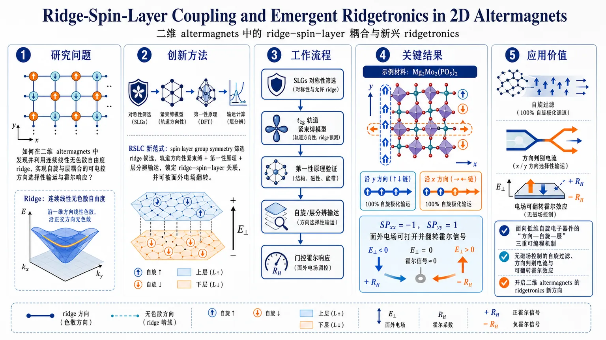
研究问题如何在二维 altermagnets 中发现并利用一种新的连续线性无色散自由度 ridge，使其同时与自旋和层自由度耦合，实现可电控的方向选择性输运与霍尔响应？创新方法提出 ridge–spin–layer coupling（RSLC）新范式：用 spin layer group symmetry 精确筛选可形成 ridge 的 2D 方形晶格 altermagnets，再结合轨道方向性紧束缚模型、第一性原理和层分辨输运计算，把“连续线性无色散能带”锁定到自旋与层标签上，并可被面外电场翻转。工作流程先用对称性框架从二维方形晶格 altermagnets 中筛选可能出现 ridge 的 spin layer groups；再用紧束缚模型解释 t2g 轨道各向异性如何生成 ridge；随后用第一性原理验证候选材料的磁序、能带与层极化；最后计算自旋电导、层分辨电导和电场门控霍尔响应，得到可切换器件行为。关键结果在 40 个 SLGs 中筛出 8 个具备 ridge–spin coupling，其中 2 个支持完整 RSLC；进一步锁定 3 个候选材料。以 Mg2Mo2(PO5)2 为例，预测沿 x/y 方向分别出现 100% 自旋极化输运，SPxx=-1、SPyy=1；施加面外电场后，电学霍尔信号可被打开并随电场反转而翻转。应用价值为低维自旋电子器件提供一种新的“方向—自旋—层”三重可编程机制，可实现无磁场控制的自旋过滤、方向判别电流和电场可翻转霍尔效应；同时为二维 altermagnets 的材料设计与器件化开辟 ridgetronics 新方向。第一部分：核心概览
这篇工作把valleytronics从“离散点”推进到“连续线”：提出 ridge 这一一维连续无色散能带，并在二维 altermagnets 中建立 ridge–spin–layer coupling（RSLC）。其核心贡献是用对称性框架筛选出可实现 RSLC 的 2D 方形晶格磁体，进一步给出 3 个候选材料，并预测可电控的 Q1D 100% 自旋极化输运与层依赖电学霍尔效应。领域地位上，它把altermagnetism、层自由度与平坦带/无色散输运统一到一个可器件化的新范式中，形成“ridgetronics”概念。
---
第二部分：结构化快速回顾
《Ridge-Spin-Layer Coupling and Emergent Ridgetronics in 2D Altermagnets》（None，）
- 背景：将 valley 从离散点拓展为连续线 ridge，可把无色散能带变成可控自由度；在磁性体系中进一步引入自旋与层耦合，形成新型输运范式。
- 方法：用spin layer group symmetry 约束 2D 方形晶格 altermagnets；结合紧束缚模型、对称性分析、第一性原理计算与层分辨输运/霍尔计算。
- 结果：筛出 8 个满足 ridge–spin coupling 的 SLGs，其中 2 个支持 RSLC；给出 3 个候选材料，并预测 Q1D 全自旋极化电流与电场可翻转的霍尔响应。
- 讨论：RSLC 把ridge orientation、spin polarization 与 layer polarization 锁定到一起，实现方向判别电流与外场可控切换。
- 局限：证据主要来自对称性推导与DFT，尚无实验验证；适用范围集中在2D 方形晶格、特定 Wyckoff 位点与层外磁矩情形。
- 结论：提出 ridgetronics 作为继 valleytronics 之后的新自由度平台，并为低维自旋器件提供可设计的无色散输运机制。
---
第三部分：逐章节冷凝解析
Introduction.
ridge 的定义与物理后果
- 关键概念是把 valley 的“点极值”推广成“线极值”。原文直接定义为 *"a one-dimensional continuous line of dispersionless electronic states (a ridge)"*，并指出 *"the energy becomes independent of kᵢ, yielding zero group velocity vᵢ"*。
- 这意味着沿 ridge 方向的群速度严格为零：*"σₓₓ=0"*（当 ridge 沿 (kₓ) 延展时），因此对应方向的电导被本征抑制。
- 与普通 valley 的本质差别在于：valley 仍允许各方向传播，而 ridge 在一个方向上把动能“钉死”，形成天然的方向选择性输运。
从 valleytronics 到 ridgetronics 的概念跃迁
- valleytronics 依赖离散极值点；这里把自由度扩展为连续线，建立 *"a new degree of freedom"*。
- 这种自由度不是纯几何特征，而是直接导向输运控制：*“suppress current and offers a new knob for directional transport”*。
- 由此提出 ridgetronics，其目标不是识别新能带形状，而是把无色散能带变成可编程器件变量。
三种耦合范式的铺垫
- 图 1 依次给出 ridge–spin、ridge–layer、以及二者合并后的 RSLC：
- ridge–spin：两条 ridge 通过 *" C2 || O_S "* 关联，非相对论情况下对应相反自旋极化；
- ridge–layer：两条 ridge 通过 *"O_L"* 关联，对应相反层极化，并可被 *"an out-of-plane electric field (E_z)"* 调控；
- RSLC：两条 ridge 由 *" C2 || O_L "* 连接，同时具有相反自旋与相反层极化。
- 这三步构成“从自由度发现到外场可控”的逻辑链。
研究目标的明确化
- 目标不是只找 ridge，而是建立一个可用的对称性框架，解决 *"how can we not only discover but also efficiently harness a new degree of freedom?"* 这个问题。
- 直接给出结论性表达：*“we establish a complete paradigm for altermagnetic ridgetronics”*。
- 核心输出包括：100% spin-polarized transport、electrically switchable spin signals 和新候选材料。
---
Ridge–spin–layer coupling.
RSLC 的核心定义
- RSLC 指 ridge、spin、layer 三个自由度被同一对称性体系同时锁定。
- 关键句是 *"ridges R1 and R2 are connected by spin group symmetry C2 || O_L "*，意味着 ridge 不再只是几何等能线，而是带有固定的自旋/层标签。
- 该耦合把“方向判别电流生成”与“电控地址化”合并到一个平台中。
altermagnetism 作为天然平台
- altermagnet 被描述为第三类磁性材料，特征是 *"opposite spin sublattices connected by C2 || O_R"*。
- 这类材料兼具铁磁与反铁磁特征，最关键的是天然提供非相对论自旋劈裂，从而适合实现 ridge–spin coupling。
- 这里的结构优势在于：自旋通道本来就分裂，无需额外强 SOC 才能得到自旋选择性。
layer 自由度的引入与电场可控性
- 单纯 ridge–spin coupling 还不足以区分两条 ridge 的能量；layer 自由度提供额外控制旋钮。
- 关键条件是两条 ridge 具有相反层极化 (P(k))，由 *"O_L"* 保护。
- 一旦施加 *"an out-of-plane electric field (E_z)"*，就会破坏 *"O_L²"* 对称性并抬升两条 ridge 的简并，从而实现精确电控。
表 1 的筛选逻辑
- 在 2D 方形晶格的 altermagnetic 40 个 SLGs 中，只有 8 个 SLGs 满足 ridge–spin coupling 的所有要求。
- 进一步只有 2 个 spin-layer groups 支持 RSLC。
- 对应的 ( O_L ) 只能取特定操作集合：*"S4z⁺, S4z⁻, C2[110], C2[bar110]"*。
- 这一步把“概念可行”压缩为“严格可实现的对称性类别”。
方向判别电流的物理含义
- RSLC 的本质输出是：不同方向的电流绑定不同自旋与不同层。
- 这不是一般意义上的自旋过滤，而是方向—自旋—层三重锁定，可直接用于器件中的电流寻址与切换。
---
Physical mechanism for RSLC.
轨道跃迁机制是 RSLC 的微观根源
- 机制起点是 (t₂g) 轨道的方向性跃迁：(dₓz) 沿 (x) 强、沿 (y) 弱；(dyz) 则相反。
- 原文强调 *"The hopping mechanism between (t₂g) orbitals provides insights for the implementation of RSLC."*
- 这解释了 ridge 为什么容易在方形晶格中形成：轨道各向异性天然把色散压成准一维结构。
紧束缚模型的构造
- 选取基底 *"(|dₓz,p̆arrowångle₂, |dyz,downarrowångle₁)"*，对应两个 Wyckoff 位置与相反自旋。
- 哈密顿量写成对角形式：
[
H=ǎrepsilon_α+
beginpmatrix
π₀ₒ̧s kₓ₊δo̧s k_y & 0
0 & π₀ₒ̧s k_y+δo̧s kₓ
endpmatrix
]
- 在 *"(δ approx 0)"* 时，两个方向的色散强烈各向异性，直接生成 ridge 型能带。
- 这一模型给出 RSLC 的最小原型。
对比 (dₓy) 模型
- 另构造 *"(|dₓy,p̆arrowångle₂, |dₓy,downarrowångle₁)"* 的对照模型。
- 该模型的自旋劈裂来自 *"the difference between (π₁) and (π₂)"*。
- 对比的意义在于证明：RSLC 不是所有轨道都能自然实现，而是对 (dₓz/dyz) 类方向性轨道最友好。
实现 RSLC 的严格条件
- 需要同时满足四类条件：
- 2D 方形晶格 altermagnet；
- 两条 ridge 由 *" C2 || O_L "* 连接；
- 磁性原子占据多重度为 2 的 Wyckoff 位点；
- 磁矩必须沿面外方向，并且高对称线 (Δ(0,v,0)) 的能带表示是 1D，以保证 ridge 上自旋不简并。
- 这使 RSLC 不是普适现象，而是强对称约束下的稀有结构。
可选的对称算符范围
- 满足 ridge–spin coupling 的 8 个 SLGs 中，( O_L ) 可取 *"C4z^±, S4z^±, C2[110], C2[bar110], M[110], M[bar110]"*。
- 对于支持 RSLC 的两个 SLGs，( O_L ) 收缩为 *"S4z^±, C2[110], C2[bar110]"*。
- 这一步给出材料搜索的可操作约束，而不是抽象分类。
---
Candidate materials.
候选材料与空间群信息
- 给出 3 个候选材料：Mg(₂)Mo(₂)(PO(₅))(₂)、Ca(FeP)(₂)、Mg(₂)V(₂)(SO(₅))(₂)。
- 它们分别位于表 1 中的 SSG 3.81.1.1、25.115.1.1 等类别。
- 这说明 RSLC 已不只是理论抽象，而是被压缩到了少数明确材料家族。
Mg(₂)Mo(₂)(PO(₅))(₂) 的晶体结构
- 单层母体是 MgMo(₂)(PO(₅))(₂)，空间群 *"P(øverline4) (No. 81)"*，晶格常数 *"a = b = 6.56 Å"*。
- Mg(²⁺) 以 4 配位连接 4 个 O(²⁻)，所有 Mg–O 键长都是 *"2.03 Å"*。
- Mo(⁴⁺) 与 5 个 O(²⁻) 形成 MoO(₅) 方锥，并与 PO(₄) 四面体角共享。
磁性基态与各向异性
- 通过比较多种磁构型，基态被确定为 Néel 型磁序。
- Mo 位局域磁矩约 *"(sim 1.6 μ_B)"*，并沿面外易轴排列。
- 最大磁各向异性能量为 *"3.23 meV/Mo"*。
- 这些数字支撑了“面外磁矩 + 两层 Mo 位点”的 RSLC 前提。
对称性归类与层/自旋交换
- 该单层属于 *"SSG (P⁻¹øverline4ⁱⁿfty m1)"*。
- Mo 原子占据 2g 位点，分别位于上、下层。
- 上下层 Mo 由 *" C2 || S4z "* 关联，能够在 (Γ!-!X!-!M) 与 (Γ!-!Y!-!M) 路径上交换自旋与层极化。
能带证据：ridge 与轨道对应
- 非相对论能带图中，绿色框标出的 ridge 态主要由 *"(|dₓz,p̆arrowångleMₒ_₂, |dyz,downarrowångleMₒ_₁)"* 构成。
- 橙色框中的另一组态则由 (dₓy) 跃迁主导。
- 这与前述紧束缚模型逐项对应，形成从机制到材料的闭环。
---
Layer-dependent Q1D spin transport.
Q1D 输运的基本图景
- RSLC 使两条正交 ridge 分别绑定相反自旋与相反层，形成 layer-dependent Q1D spin transport。
- 近费米能级时，电导主要由 (σₓₓp̆arrow(σₓₓdowⁿarrow)) 与 (σyydowⁿarrow(σyyp̆arrow)) 主导。
- 因而 (Iₓ) 沿一条 ridge 传输，(I_y) 沿另一条 ridge 传输，构成最小 ridgetronics 平台。
层分辨电导的具体结论
- 在 Mg(₂)Mo(₂)(PO(₅))(₂) 中，价带 ridge 态的自旋上通道主要局域在底层 Mo，自旋下通道主要局域在顶层 Mo。
- 计算得到的层分辨纵向电导显示：只有 *"(σₓₓdowⁿarrow)"* 和 *"(σyyp̆arrow)"* 非零。
- 这与“沿 x 方向传导的是另一自旋、沿 y 方向传导的是互补自旋”的图景完全一致。
自旋极化度达到极限值
- 自旋电导极化定义为
[
SPₕₐₜ ₙ ₕₐₜ ₙ=fracσₕₐₜ ₙₕₐₜ ₙp̆arrow-σₕₐₜ ₙₕₐₜ ₙdowⁿarrowσₕₐₜ ₙₕₐₜ ₙp̆arrow+σₕₐₜ ₙₕₐₜ ₙdowⁿarrow
]
- 结果显示在 ridge 态能窗内，(SPₓₓ=-1)、(SPyy=1)。
- 这意味着沿两个正交方向的电流都达到 100% 自旋极化，且极化方向相反。
对称性对输运的约束
- 两条 ridge 由 *" C2 || S4z "* 连接，同时交换自旋极化与层极化。
- 这种对称性把自旋和层自由度“绑”到正交方向，构成层依赖 Q1D 输运的本征来源。
- 该结论不是数值巧合，而是对称性强制结果。
---
Layer-dependent electric Hall effect.
电学霍尔效应的来源
- 这里的 electric Hall effect (EHE) 由电场门控而非磁场驱动。
- 原文直接指出 *"arises from an electric gate field rather than a magnetic field"*。
- RSLC 的意义在于让电场选择性操控层极化 ridge，从而无需外磁场也能产生霍尔电流。
对称性对霍尔响应的限制与允许
- 在相对论情形下，体系具有 *"S4z(T) symmetry"*。
- 该对称性 禁止本征霍尔电导 (σₓy)，但允许本征 EHE 系数 (ḩiₓy)。
- 这一区分很关键：不是普通异常霍尔，而是电场可控的电学霍尔响应。
门电场引发的可逆切换
- 不加 (E_z) 时，两条 ridge 简并，且 *"(σₓy=0)"*。
- 施加 *"(E_z=0.1) eV/Å"* 后，ridge 简并被打破，(σₓy) 明显出现。
- 反转电场方向后，*“reversing (E_z) reverses the sign of (σₓy)”*，即霍尔电流方向可电控翻转。
谱隙净化带来的峰值响应
- 在 *"-0.5 eV to -0.1 eV"* 区间没有干扰能带，形成明显的 EHE 峰。
- 这说明霍尔信号不是被杂带淹没，而是来自相对干净的 ridge 能带窗口。
- 该结果把 RSLC 的“层可控性”直接转化成“霍尔可编程性”。
---
Conclusion.
总括性结论
- 核心结论是把 ridge 定义为 *"1D dispersionless electronic continua in momentum space"*，并在 2D altermagnets 中通过 RSLC 实现。
- 这带来两类器件级功能：
- layer-controlled, Q1D spin transport；
- layer-dependent electric Hall effect。
- Mg(₂)Mo(₂)(PO(₅))(₂) 是最完整的示范体系，另有相关候选材料支持这一范式。
领域意义
- RSLC 被定位为 *"a fundamental mechanism for spin-dependent physics in altermagnets"*。
- ridgetronics 把无色散能带、自旋输运与层电控放进同一框架，指向下一代低维自旋器件。
---
第四部分：深度理解与语言支持
1) 术语解析
Ridge
- 语境中的 ridge 不是几何“山脊”比喻而已，而是一维连续的能量极值线。
- 和 valley 的区别在于：valley 是离散点，ridge 是整条线；因此一个动量方向上能量不变，群速度为零。
Spin layer group (SLG)
- SLG 是把空间对称性、自旋对称性和层/子层信息统一编码的群论对象。
- 它比普通空间群更细，因为磁序和层极化会改变可用对称操作；这里用于筛选是否可能出现 ridge–spin 或 RSLC。
Wyckoff position
- 这是晶体学中原子在对称性下的等价位置类别。
- 这里之所以重要，是因为磁性原子是否占据多重度为 2的 Wyckoff 位点，直接决定是否能形成两层/两亚格点的 RSLC 结构。
Altermagnet
- altermagnet 不是一般反铁磁，也不是铁磁。
- 典型特征是零净磁矩但存在非相对论自旋劈裂，且不同自旋子晶格由特定旋转/镜像操作联系。
Electric Hall effect (EHE)
- 这里的 electric Hall effect 指由电场门控诱导的霍尔响应，不需要磁场。
- 它与普通异常霍尔的区别在于：开关变量是层势差，不是磁场或磁化翻转。
---
2) 疑难查证：RSLC 为什么能同时锁定自旋和层？
可以把 RSLC 想成“三重标签绑定”：
- ridge 提供方向性。
一条 ridge 沿 (kₓ) 延展时，(E) 不依赖 (kₓ)，所以沿 x 的群速度为零，只能沿 y 方向传播。
- altermagnetism 提供自旋分裂。
两个 ridge 分别落在不同自旋通道上，来自非相对论自旋劈裂；因此不同方向天然对应不同自旋。
- layer polarization 提供可调门。
两条 ridge 还分别位于不同层。电场 (E_z) 改变上下层势能差，就能打破简并并切换哪条 ridge 更占优。
真正的难点在于：这三者必须由同一个对称性操作稳定关联。
如果只有 ridge 而没有 layer，自旋通道虽然分开，但难以外场精确调控；如果只有 layer 而没有 ridge，则只是普通层极化输运；如果只有自旋而无 ridge，则缺少方向选择性。
RSLC 的新意就在于把三种信息压到一个 2D 方形晶格的对称性框架里，让“方向—自旋—层”共同成为一个器件旋钮。
---
第五部分：创新评估与关联
1) 创新性判断
相对于过去 2–5 年相关工作的新颖性
- 过去几年的主线多集中在 spintronics、valleytronics、spin-valley coupling、valley-layer coupling、altermagnetic spin splitting 和 electric Hall effect。
- 这篇工作的新点不在“再发现一种耦合”，而在于把连续线性无色散自由度 ridge 引入该谱系，并证明它能在 2D altermagnets 中与自旋、层同时耦合。
- 之前的 valley 是离散点自由度；这里是连续线自由度，因此从根源上改变了输运几何：不是“选哪一个 valley”，而是“沿哪一条 ridge 走”。
解决了前人未解决的问题
- 解决了两个关键空白：
- 如何系统识别 ridge 自由度：通过 spin layer group symmetry 给出可检索、可筛选的判据，而不是凭经验找能带形状。
- 如何把新自由度变成可控器件变量：通过 RSLC 把 ridge 与 layer 和 spin 绑定，使其可被 (E_z) 电场直接切换。
- 结果不只是“存在某种奇特能带”，而是出现了可切换的 100% 自旋极化 Q1D 电流和方向可翻转的电学霍尔响应。
真正的理论增量
- 过去的 flat-band/dispersionless 物理多强调“强相关”和“高简并”，但可控性较弱。
- 这里的 ridge 兼具 flat-band-like kinetic quenching 与 外场可寻址性，把“平坦”变成“可编程”。
- 这使 ridgetronics 成为介于几何能带工程与磁性器件之间的新层级。
现实约束下的创新强度
- 创新强，但仍是理论预测驱动：真正可验证的硬件路径已经被具体到 3 个材料、2 个关键 SLGs、明确的晶格常数、磁矩、MAE、门电场强度。
- 这比一般概念提案更接近材料可实现层面。
-
08
📊 含图深析
📄 摘要：第一性原理预测 AA' 堆垛的双层 ReIrGe2Se6 具有多态铁电性，可通过不同极化/层间构型实现多个非易失状态。与此同时，层锁定的 Berry 曲率输运可被切换到不同的异常谷霍尔响应，为多状态器件提供材料基础。
💡 亮点：ReIrGe2Se6 把多态铁电和层锁定谷霍尔放在同一个双层体系里。它比普通双稳态铁电更适合做多状态非易失器件。
📖 展开分析 + 配图
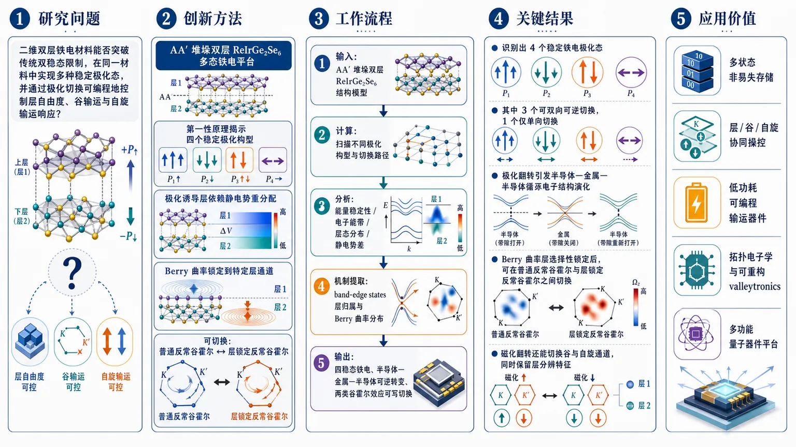
研究问题二维双层铁电材料能否突破传统双稳态限制，在同一材料中实现多种稳定极化态，并进一步通过极化切换可编程地控制层自由度、谷输运与自旋输运响应？创新方法提出 AA′ 堆垛双层 ReIrGe2Se6 的多态铁电平台：通过第一性原理揭示四个稳定极化构型，利用极化诱导的层依赖静电势重分配带边态，把 Berry 曲率锁定到特定层通道，实现普通反常谷霍尔与层锁定反常谷霍尔之间的可切换切换；Aha 点在于“极化—层势差—Berry 曲率通道”这一层级耦合链条。工作流程输入：AA′ 堆垛双层 ReIrGe2Se6 结构模型；计算：第一性原理扫描不同极化构型与切换路径；分析：比较能量稳定性、电子能带、层态分布与静电势差；机制提取：追踪 band-edge states 的层归属与 Berry 曲率分布；输出：四稳态铁电、半导体—金属—半导体可逆转变，以及两类谷霍尔效应的可写切换。关键结果识别出 4 个稳定铁电极化态，其中 3 个可双向可逆切换、1 个仅单向切换；极化翻转引发半导体—金属—半导体循环电子结构演化；Berry 曲率被层选择性锁定后，可在普通反常谷霍尔效应与层锁定反常谷霍尔效应之间切换；磁化翻转还能切换谷与自旋通道，同时保留层分辨特征。应用价值为多状态非易失存储、层/谷/自旋协同操控、低功耗可编程输运器件和拓扑电子学提供单一二维材料平台，适合发展可重构 valleytronic 与多功能量子器件。第一部分：核心概览
这篇工作提出了一个双层 ReIrGe2Se6 的多态铁电平台：在 AA′ 堆垛中可形成四个稳定极化构型，其中三个可双向切换、一个仅单向切换，并伴随半导体—金属—半导体的可逆电子结构演化。更关键的是，铁电极化不只是改变电荷分布，还通过层依赖静电势把Berry 曲率锁定到特定层通道，从而在同一材料中实现普通反常谷霍尔效应与层锁定反常谷霍尔效应之间的可写切换。其领域地位在于：把“多稳态铁电 + 层自由度 + 谷/自旋输运可编程控制”整合进单一二维体系，显著推进了多功能 valleytronic 与拓扑电子学设计。
---
第二部分：结构化快速回顾
《Multistate ferroelectricity and switchable layer-locked anomalous valley Hall effects in bilayer ReIrGe2Se6》（None，）
背景：二维多铁材料兼具磁性与铁电性，是低功耗多态存储与可编程输运的理想候选；但常规铁电的双稳性限制了多非易失态和多种 Berry 曲率输运响应的实现。
方法：采用第一性原理计算，系统分析双层 AA′-stacked ReIrGe2Se6 的极化构型、切换路径、电子结构、层态分布与 Berry 曲率响应。
结果：识别出 4 个稳定铁电极化态；其中 3 个可逆切换，1 个单向切换。极化切换导致半导体—金属—半导体循环转变，并触发反常谷霍尔效应与层锁定反常谷霍尔效应之间的可切换转换。
讨论：不同铁电构型对应的层依赖静电势控制带边态的层特征，进而把 Berry 曲率“锁”到特定层通道；磁化翻转还能切换谷与自旋通道，同时保持层分辨特征。
局限：当前信息仅见摘要，未给出形成能、能垒、动态稳定性、声子谱、温度效应、实验可实现性等定量证据，也未见统计检验指标。
结论：双层 ReIrGe2Se6 被提出为一个多态铁电与可编程 Berry 曲率输运平台，适合用于多状态存储、层/谷/自旋协同操控与拓扑功能器件设计。
---
第三部分：逐章节冷凝解析
摘要（Abstract）
二维多铁材料的核心瓶颈：双稳性限制多态器件
- 关键信息：二维多铁体系同时结合磁序与铁电序，并依赖强磁电耦合，可用于高密度信息存储与低功耗电子学。
- 关键限制：传统铁电主要只有两个稳定极化态，难以在单一材料内实现多个非易失状态与可编程 Berry 曲率输运响应。
- 原文证据：*"Two-dimensional multiferroic materials, which combine magnetic and ferroelectric (FE) orders with strong magnetoelectric coupling, represent ideal platforms for high-density information storage and low-power multistate electronics."* 以及 *"However, the intrinsic bistability of conventional ferroelectricity poses a substantial challenge to realizing multiple nonvolatile states and programmable Berry-curvature driven transport responses within a single material."*
- 细节解读：这里的关键不是“有没有铁电”，而是铁电是否足够多稳态。双稳性只提供 1 bit 左右的状态空间；多态铁电则打开更高密度编码和多路输运控制的可能。
AA′ 堆垛双层 ReIrGe2Se6 产生四个稳定极化构型
- 关键信息：通过第一性原理计算，预测 AA′-stacked bilayer ReIrGe2Se6 具有四个能量上稳定的铁电极化构型。
- 关键细节：其中 三个构型之间存在可逆切换路径，第四个构型表现为单向切换路径。
- 原文证据：*"Here, using first-principles calculations, we predict multistate ferroelectricity in AA0-stacked bilayer ReIrGe2Se6."* 以及 *"The system hosts four energetically stable FE polarization configurations, among which three are connected through reversible switching pathways, while the fourth exhibits a unidirectional switching pathway."*
- 细节解读：这意味着该体系不是简单的二元翻转，而是存在非对称能量景观：部分极化态组成闭环可逆网络，另一个状态则像“单向门控点”，非常适合设计多级非易失存储。
极化切换引发半导体—金属—半导体循环
- 关键信息：不同铁电构型不仅改变极化方向，还重构电子结构。
- 关键结果：电子结构呈现cyclic semiconductor-metal-semiconductor evolution，即在不同极化态之间切换时，体系可在半导体与金属之间循环转变。
- 原文证据：*"The distinct FE configurations further give rise to a cyclic semiconductor-metal-semiconductor evolution in the electronic structure."*
- 细节解读：这类可切换金属态尤其重要，因为它意味着铁电翻转不仅能调“极化”，还能调导电性开关，把电学、输运和拓扑响应绑在同一个控制旋钮上。
层自由度与 Berry 曲率发生强耦合
- 关键信息：铁电极化切换与层自由度及 Berry curvature 紧密耦合。
- 机制核心：不同铁电构型产生的layer-dependent electrostatic potential 控制带边态的层特征，从而把 Berry 曲率“锁”到特定层通道。
- 原文证据：*"Notably, FE polarization switching is intimately coupled to layer degrees of freedom and Berry curvature."* 以及 *"The layer-dependent electrostatic potential associated with different FE configurations controls the layer character of the band-edge states, thereby locking the Berry curvature to specific layer channels."*
- 细节解读：这里的创新点不只是“有 Berry 曲率”，而是Berry 曲率不再只是整体布里渊区性质，而是被层选择性地分配和固定。这相当于把拓扑输运的自由度从“谷”扩展到“层”。
实现普通反常谷霍尔与层锁定反常谷霍尔之间的切换
- 关键信息：体系可在anomalous valley Hall effect 与 layer-locked anomalous valley Hall effect 之间切换。
- 结果外延：可对layer、valley、spin-resolved transport 进行非易失控制。
- 原文证据：*"As a result, bilayer ReIrGe2Se6 enables switching between an anomalous valley Hall effect and a layer-locked anomalous valley Hall effect, providing nonvolatile control of layer, valley, and spin-resolved transport responses."*
- 细节解读：普通 valley Hall 只强调谷通道；层锁定版本进一步要求谷相关响应与特定层通道绑定。这使器件不只是“谷开关”，而是层—谷—自旋三重联动开关。
磁化反转切换谷与自旋通道，但保留层分辨特征
- 关键信息：除了铁电切换，magnetization reversal 也能调控输运。
- 关键结果：磁化翻转会切换valley and spin channels，同时保持layer-resolved character。
- 原文证据：*"In addition, magnetization reversal switches the valley and spin channels while preserving the layer-resolved character."*
- 细节解读：这说明系统的层信息具有更强鲁棒性，而谷/自旋通道可通过磁序翻转重配。对多态器件而言，这是极高价值的可编程性：一个旋钮管极化，另一个旋钮管磁序。
总体定位：面向可编程 Berry 曲率输运的多态铁电材料
- 关键信息：双层 ReIrGe2Se6 被定位为multistate ferroelectric platform。
- 原文证据：*"These results establish bilayer ReIrGe2Se6 as a multistate ferroelectric platform for programmable Berry-curvature related transport, offering microscopic insight into topology based multifunctional electronic and valleytronic devices."*
- 细节解读：该工作把“铁电多稳态”从静态存储材料推进到拓扑输运调控器，尤其适合未来的低功耗、多通道、可重构器件。
---
第四部分：深度理解与语言支持
1) 术语解析
Multistate ferroelectricity
- 含义：不止两个稳定极化态的铁电性。
- 细微差别：普通铁电常见的是“+P / −P”双稳态；multistate 强调存在三个及以上局域极小值，适合多级编码而非二值开关。
Layer-locked
- 含义：某种物理响应被“锁定”在特定层上。
- 细微差别：不是简单“层相关”，而是层自由度成为决定输运通道归属的约束条件。层不再只是结构背景，而是响应本身的一部分。
Anomalous valley Hall effect
- 含义：由Berry 曲率驱动的谷横向输运，不依赖传统外磁场霍尔机制。
- 细微差别：与常规 valley Hall 相比，“anomalous”通常暗示更强的对称性破缺，常见于磁性体系，允许谷极化与自旋极化更深度耦合。
Berry curvature
- 含义：能带几何性质的“磁场式”量，决定许多异常输运效应。
- 细微差别：它不是实空间磁场，而是动量空间中的几何场。一旦被层选择性地分配，就能把拓扑输运做成“分层电路”。
Band-edge states
- 含义：价带顶和导带底附近的态。
- 细微差别：这些态最直接控制带隙、载流子类型和响应通道，因此层特征一旦被这些态主导，整个输运性质就会被重构。
2) 疑难查证：高年级博士生式解释
为什么“层依赖静电势”能锁定 Berry 曲率？
- 关键逻辑：Berry 曲率来源于能带波函数的几何结构，而波函数分布受局域势能强烈影响。
- 在双层体系里，不同铁电构型会在两层之间制造不对称的静电势差，使带边态更偏向某一层。
- 一旦谷相关的带边态主要驻留在某一层，且该层又伴随磁性或反演对称性破缺，Berry 曲率就会在该层通道中集中。
- 所谓“locking”并不是几何意义的锁死，而是由能量最小化和波函数重分布共同造成的层选择性归属。
为什么半导体—金属—半导体循环重要？
- 这意味着铁电切换不仅改变“极化朝向”，还改变费米能级附近是否存在可导电带。
- 从器件角度看，电学状态、拓扑响应和谷/自旋输运被同一个极化开关同步控制，具备“状态机”性质。
- 如果只改变 Berry 曲率而不改带隙，器件功能较单一；若连金属/半导体也能切换，可直接实现多模态器件。
为什么“单向切换路径”值得注意？
- 单向切换意味着某个态是热力学稳定但动力学上不对称的。
- 这类路径适合做“写一次、锁定一态”或“状态选择器”，在多级存储里比纯对称双稳态更灵活。
- 但也提示潜在问题：器件写入可能存在方向依赖的能垒差异，需要额外考虑可靠性与可逆性窗口。
---
第五部分：创新评估与关联
1) 创新性判断
相较于过去 2–5 年相关二维铁电/谷电子学工作，这项工作的新颖性主要体现在三点：
第一，多稳态铁电从“概念展示”推进到“可编程输运开关”。
过去很多工作停留在双稳态极化翻转、极化诱导带隙变化或简单谷极化调控；这里直接把四个稳定极化态与Berry 曲率输运模式切换绑定，目标更高。
第二，把“层自由度”引入 Berry 曲率操控主链条。
近年的 valleytronics 常强调谷、自旋、磁序耦合，但“层锁定”通常不是核心机制。这里的关键突破在于：极化→层势差→带边层归属→Berry 曲率通道锁定，形成了清晰的微观链条。
第三，实现两级可切换拓扑输运：普通反常谷霍尔 ↔ 层锁定反常谷霍尔。
前人常见的是“有 valley Hall”或“能调 valley Hall”，较少见到在单一材料中把输运分成是否层锁定两个可写类别，更少见到同时允许磁化翻转继续重分配谷与自旋通道而不破坏层特征。
2) 解决了什么前人没解决的问题
- 常规铁电双稳性不足以承载多状态信息：四稳态设计直接扩展状态空间。
- 谷输运缺乏层选择性记忆：层锁定机制把输运信号与具体层通道绑定。
- 单一控制旋钮难以同时操控极化、谷、自旋和层：该体系把这些自由度整合进一个材料平台。
- 拓扑输运缺少非易失编程路径：铁电翻转提供了天然的非易失写入方式。
3) 需要警惕的空白
- 当前公开信息只有摘要，未见形成能、切换能垒、声子稳定性、有限温度蒙特卡洛/分子动力学、SOC 细节参数、磁各向异性能等关键定量证据。
- 也未见实验可实现性的直接验证，例如合成可行性、外场阈值、畴结构、缺陷容忍度。
如果需要，我可以继续把这篇工作整理成：
- 一页式论文笔记，
- “创新点—机制—证据链”三栏表，或
- 适合组会汇报的 PPT 提纲。
-
09
📄 摘要：围绕双层 Ruddlesden-Popper 镍酸盐的磁关联，作者结合已有实验对坏金属态和轨道选择性莫特邻近性的认识，用有效局域磁矩的概念描述 La3Ni2O7 等体系的正常态磁序，并讨论其与密度波相的关系。
💡 亮点：这篇工作从有效局域磁矩角度重写了双层镍酸盐的磁关联图景。对理解 La3Ni2O7 超导附近的正常态磁序很关键。
📖 展开分析 + 配图
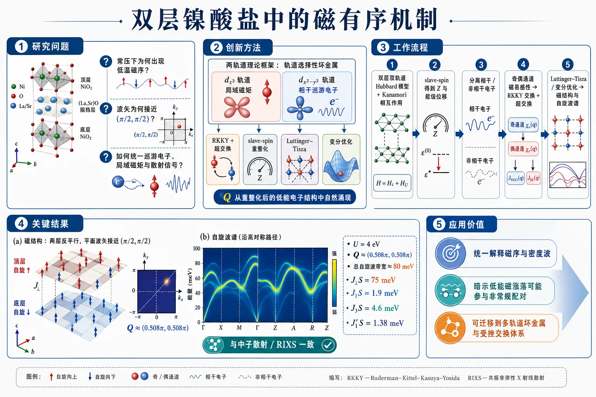
研究问题双层 La3Ni2O7 在常压下为何出现低温磁序，以及这种磁序的波矢为什么接近 (π/2, π/2)；如何同时解释巡游电子、局域磁矩和实验观测到的散射信号。创新方法提出“轨道选择性坏金属”磁性框架：把 d_z2 的非相干电子视为局域磁矩，把 dₓ₂₋y2 的相干电子视为巡游介质，由其介导 RKKY 交换，并与超交换共同决定磁序；再用 slave-spin 重整化、Luttinger–Tisza 和变分优化锁定磁结构。真正的 Aha 点是：磁波矢不是硬设，而是从轨道选择性重整化后的低能电子结构自然涌现。工作流程从双层双轨道 Hubbard 模型出发，加入 Kanamori 相互作用；用 slave-spin 得到轨道依赖的准粒子权重 Z 和能级位移，分离相干与非相干电子；计算双层奇偶通道的磁易感性，得到 RKKY 交换，并与非相干轨道的超交换合并成有效自旋哈密顿量；再通过 Luttinger–Tisza 与变分优化求出排序波矢；最后计算自旋波谱并与中子散射、RIXS 对照。关键结果得到层间反平行的反铁磁基态，层内排序波矢稳定在接近 (π/2, π/2) 的位置；在 U=4 eV 时，Q≈(0.508π, 0.508π)，总自旋波带宽约 80 meV，且 J⊥S=75 meV、J1S=1.9 meV、J3S=4.6 meV、J1'S=1.38 meV；结果与中子散射和 RIXS 的波矢与能标一致。应用价值为双层镍酸盐的磁序、密度波与超导前驱提供统一解释，说明低能磁涨落可能参与非常规配对；同时给出适用于多轨道坏金属的可迁移理论范式，可用于分析轨道选择性相关体系中的磁性与受挫交换。第一部分：核心概览
这篇论文把 La(₃)Ni(₂)O(₇) 的低温磁序统一到一个 轨道选择性坏金属 图景中：(dz^₂) 相关的非相干电子形成局域磁矩，(dₓ^₂₋y^₂) 相干电子介导 RKKY 交换，与 超交换 共同稳定出接近 ((π/2,π/2)) 的反铁磁序。该框架同时解释了中子散射、RIXS 与密度波实验中的波矢、谱权重和激发能标，在近 2–5 年关于镍酸盐磁序的争论中提供了连接“巡游”与“局域”两类极限的统一机制。
---
第二部分：结构化快速回顾
《Magnetic Order in bilayer Ruddlesden-Popper Nickelates》（None，）
- 背景：双层镍酸盐 La(₃)Ni(₂)O(₇) 在高压体相和常压薄膜中出现高温超导，同时在体相常压下存在约 150 K 以下的密度波/磁序；实验显示明显的轨道选择性电子关联与反铁磁层间堆垛。
- 方法：以双层双轨道 Hubbard 模型为起点，结合 slave-spin 重整化得到相干电子与非相干局域矩；将 RKKY 与 superexchange 合并为有效自旋哈密顿量，并用 Luttinger–Tisza 与变分优化确定磁序，再计算自旋波谱。
- 结果：得到的基态是层间反平行的反铁磁态，层内排序波矢接近 ((π/2,π/2))；在 (U=4) eV 时，(Q=(0.508π,0.508π))，交换常数为 (J^perp S=75) meV、(J₁S=1.9) meV、(J₃S=4.6) meV、(J₁'S=1.38) meV，总带宽约 80 meV。
- 讨论：磁序波矢来自 (dₓ^₂₋y^₂) 费米面嵌套诱导的 RKKY 主导项与短程超交换的协同；相同框架也提示低能磁涨落可能参与非常规配对。
- 局限：模型依赖于轨道分辨的重整化近似，默认 (dₓ^₂₋y^₂) 更相干而 (dz^₂) 更非相干；对电荷序、量子自旋单态与定量相图仍未穷尽；自旋波处理主要是经典/半经典层面。
- 结论：双层镍酸盐的磁性可由 轨道选择性相关 驱动的“局域矩 + RKKY + 超交换”统一描述，并与最近散射实验一致。
---
第三部分：逐章节冷凝解析
Abstract
Orbital-selective magnetic framework
双层镍酸盐的常压正常态被放在 轨道选择性 Mott 邻域 中理解：*“bad metal state in proximity to an orbital-selective Mott phase”*。核心设定不是单一的巡游 SDW，也不是纯局域 Heisenberg 极限，而是 有效局域矩 与相干载流子共存的两流体图景。该图景直接导出 *“magnetic order with a wavevector that is close to (Q=(π/2,π/2))”*，并解释相应自旋动力学。
RKKY plus superexchange mechanism
磁相互作用由两部分组成：RKKY 与 superexchange。原文给出 *“a combination of RKKY and superexchange interactions”*，并强调这两种交换共同产生接近 ((π/2,π/2)) 的磁序。与单一机制相比，这里最关键的增量是：磁波矢不是被假定出来的，而是从轨道选择性重整化后的低能电子结构中自然生长出来的。
Experimental consistency and broader implications
结论与实验趋势一致：*“consistent with the rapidly emerging experiments”*。不仅如此，还把结果延伸到非常规超导：*“Implications for unconventional superconductivity … are discussed.”* 这使得磁序不只是伴生现象，而是与配对机制共享同一套低能自由度。
---
Introduction
Superconductivity and density-wave order set the stage
La(₃)Ni(₂)O(₇) 的研究动机来自两个并行事实：高压体相与常压薄膜中均出现超导，体相常压下又存在低温密度波/磁序。关键温标集中在 约 150 K 附近：*“below about 150 K”*。这把磁性、密度波和超导拉进同一相图。
Local probes established magnetic and charge signatures
局域探针已经给出较强证据链。零场 (μ)SR 报告了 *“bulk magnetic order below (T_N simeq 154) K”*；(¹³⁹)La NMR 给出相近的磁转变温度；(¹³⁹)La NQR 则指出 *“charge modulation and magnetic broadening appear together below (Tₘ̊ DWsim153) K”*。这组结果意味着电荷与自旋并非彼此独立。
Scattering experiments constrain the ordering vector
散射实验进一步把问题从“是否有序”推进到“怎样有序”。RIXS 观测到磁激发，soft x-ray scattering 看到磁序，neutron diffraction 解析出层间 反铁磁堆垛，而最直接的 inelastic neutron scattering 在 ((0,0.5,2.5)) 附近看到自旋激发，对应 1-Ni 展开布里渊区中的 ((π/2,π/2))。原文强调 *“spin excitations centered near (0,0.5,2.5)”*，这是后续理论要对准的目标。
Existing theories were incomplete
已有理论主要落在两个极限：弱耦合费米面嵌套 与 强耦合纯局域矩超交换。前者忽略了明显的轨道选择性坏金属；后者又难以吸收相干载流子对交换的反馈。对应的表述很直接：*“mostly from a weak coupling Fermi surface nesting instabilities … or the strong coupling limit with purely localized moments”*。空缺正是中间地带：轨道选择性坏金属。
Orbital-selective correlations supply the missing bridge
新的出发点是实验上已建立的轨道选择性相关：*“anchored by the orbital-selective correlations experimentally observed in the normal state”*。这里 (dₓ^₂₋y^₂) 主要提供相干载流子，(dz^₂) 主要形成非相干谱权重与局域矩。最终磁相互作用分解成 RKKY 与 superexchange 两支，且 *“an antiferromagnetic ground state with an ordering wavevector close to (Q=(π/2,π/2)) naturally develops”*。
---
Models and Conventions
Bilayer two-orbital Hubbard model defines the microscopic starting point
体系被写成双层双轨道 Hubbard 模型：*“H = H(ₘ̊ TB) + H(ₘ̊ ᵢₙₜ)”*。轨道取 (e_g) 的两支：(dₓ^₂₋y^₂) 与 (dz^₂)。动能矩阵元与晶场分裂取自 Ref. 49。这里没有引入额外经验自由度，所有低能行为都从该模型出发。
Kanamori interactions encode local correlations
局域相互作用采用 Hubbard–Kanamori 形式：同轨道 (U)、异轨道密度排斥 (U')、Hund 耦合 (J_H)，并满足旋转不变关系 *“(U' = U - 2J_H)”*。这一步很关键，因为 Hund 耦合后续直接影响层间 (dz^₂) 单态倾向。
Physical filling lies in the bad-metal regime near an OSMP
物理填充数是 (N=3)，被放在 *“a bad-metal regime with strong orbital selectivity”*。更高电子填充 (N=4) 对应 Mott 绝缘体边界。也就是说，材料并未进入完全局域化极限，而是处在 OSMP 邻近区，这正是 RKKY 机制能够成立的前提。
Coherent and incoherent sectors are explicitly separated
谱函数被拆成相干与非相干两部分：*“the single-particle spectral function for each orbital decomposes into coherent and incoherent components”*。相干成分靠近 (E_F)，非相干成分的电荷激发近似有隙，其低能主效应是局域矩。轨道分辨上，(dₓ^₂₋y^₂) 更偏相干，(dz^₂) 更偏非相干，因此 *“The local moment is therefore primarily associated with the (dz^₂) orbital”*。
Superexchange and RKKY arise from two distinct sectors
低能自旋模型的两类交换来自两个不同起源。第一类是非相干自由度之间的 superexchange：*“(Jm̊ sᵢₗ,ⱼₗₚᵣⁱₘₑsim 4(1-Z_z)² t²/U)”*。第二类是相干载流子积分出去后形成的 RKKY：*“(Jm̊ rₗₗₚᵣⁱₘₑ(q)=-j²ₓz(q)ḩiₗₗₚᵣⁱₘₑ(q))”*。前者偏短程，后者对费米面结构敏感。
Effective spin Hamiltonian summarizes the low-energy magnetism
最终得到有效自旋哈密顿量：*“(Hₘ̊ ₛₚᵢₙ=sum(Jm̊ s+Jm̊ r),SᵢₗḑotSⱼₗₚᵣⁱₘₑ)”*。这里的 (Sᵢₗ) 不是裸原子自旋，而是来自非相干谱权重的 effective local spin degree of freedom。这一步把电子问题压缩成了自旋问题，但保留了轨道选择性信息。
---
The RKKY interaction
Even and odd channels resolve bilayer symmetry
双层镜面对称下，定义了 even 与 odd 易感性：
*“(ḩiₘ̊ ₑᵥₑₙ=ḩiAA+ḩiBB+ḩiAB+ḩiBA)”*，
*“(ḩiₘ̊ ₒdd=ḩiAA+ḩiBB-ḩiAB-ḩiBA)”*。
这不是形式主义，而是为了区分层间同相与反相响应；后者对最终磁序尤其重要。
Odd susceptibility peaks near ((0.5π,0.5π))
在 (U=0)、(N=3) 时，(dₓ^₂₋y^₂) 投影的 (ḩiₘ̊ ₒdd(q)) 出现显著峰值。峰位不是严格 (π/2)，而是 *“(q₁approx(0.6π,0.6π))”*。峰的来源是电子型 (α) 与空穴型 (β) 费米面片之间的 nesting：*“The peak arises from nesting between the electron-like (α) and hole-like (β) Fermi-surface sheets.”*
Peak position is model-sensitive but generically close to ((π/2,π/2))
峰位会随紧束缚参数略变，但整体稳定在接近 ((0.5π,0.5π)) 的范围：*“although the precise value … is somewhat sensitive … it is generically close to exactly ((0.5π,0.5π))”*。这意味着磁波矢不是精调出来的，而是由电子结构的普适几何特征支撑。
Increasing U suppresses coherent weight and strengthens longer-range RKKY
随着 (U) 增大，(dₓ^₂₋y^₂) 的相干权重下降。把动量空间 RKKY 变换到实空间后，主导项是 第三近邻：*“the dominant coupling is the third-nearest-neighbor term, (J₃m̊ r)”*。并且比值 *“(J₃m̊ r/J₁m̊ r) remains greater than unity over a broad range of (U)”*，在 (Usim 4) eV 附近最强。
Long-range RKKY cooperates with short-range superexchange to generate frustration
短程 superexchange 与较长程的 RKKY 叠加后，面内交换天然变成受挫体系。原文把逻辑收束为：*“the leading exchange interactions come from the short-range part”*，但前面的长程 RKKY 已经把体系推向非共线/非整比波矢的磁序窗口。
---
Magnetic order and excitations
A reduced J⊥–J1–J3 model captures the essential physics
为了分析磁序，只保留最关键的耦合：(J^perp)、(J₁)、(J₃)。其中 *“(J^perp) is dominated by the interlayer superexchange”*，而 (J₁) 与 (J₃) 主要来自 RKKY。这个降阶模型保留了层间反平行与层内受挫排序的最小结构。
Luttinger–Tisza plus variational optimization determines the ordering vector
先用 Luttinger–Tisza 找到动量空间最低点，再用变分法优化传播矢和胞内自旋方向：*“the ordering vector is subsequently refined via a variational optimization”*。这一步避免只看连续谱最低点而忽略自旋构型约束。
Ground state is antiferromagnetic with interlayer antiparallel alignment
在所扫参数范围内，基态总是反铁磁：*“the spins in the top and bottom layers aligned antiparallelly”*。层内则形成 ((q,q)) 型磁序。这个结果与中子散射看到的层间反铁磁堆垛一致。
Ordering vector shifts toward (π/2) as U increases
在 (U=0) 时，(qapprox0.56π)，已经很接近 (ḩiₘ̊ ₒdd) 的峰值。随着 (U) 增大，(J₃/J₁) 增强，排序矢逐渐向 ((π/2,π/2)) 漂移：*“As (U) increases, the enhanced ratio (J₃/J₁) drives a gradual shift of the magnetic ordering vector”*。这就是波矢锁定到实验区间的机制。
Spin-wave spectrum contains acoustic and optical branches
在 (U=4) eV、(Q=(0.508π,0.508π)) 时，算得的自旋波谱带有 acoustic branch 与 optical branch。低能声学支在排序矢附近软化：*“the acoustic branch softens at the ordering wave vector”*。这说明该序正处于低能涨落强烈的区域。
Incommensurability folds each branch into three modes
由于序是非整比的，谱支会折叠成三条：*“each branch splits into three modes: the original mode (ϵ(q)) and two folded replicas (ϵ(q±Q))”*。这是一条很具体的可实验检验特征，不是一般性叙述。
Energy scale matches RIXS
计算带宽约 80 meV：*“The overall bandwidth of the calculated spectrum is approximately 80 meV”*，与 RIXS 量级相符。对应交换参数是 (J^perp S=75) meV、(J₁S=1.9) meV、(J₃S=4.6) meV、(J₁'S=1.38) meV。这些数值把理论从“定性相符”推进到“量级可对照”。
---
Discussions and conclusions
Orbital-selective correlations provide a robust mechanism for ((π/2,π/2)) order
总结性的结论很明确：*“a magnetic order with the ordering wavevector near ((π/2,π/2)) develops in a natural and robust way”*。这里的“robust”来自两点：一是费米面嵌套给出 RKKY 峰，二是超交换提供短程背景。
The mechanism is consistent with multiple experiments
该机制同时兼容之前提到的散射实验，以及更近期的系统性实验：*“consistent with a recent systematic experiment”*。对应的实验不只是看见“有磁序”，而是看见了正确的 波矢、层间堆垛和激发能标。
The framework generalizes to multiorbital d-electron bad metals
更广泛的理论意义在于：*“a conceptually new way to understand the magnetic correlations of multiorbital d-electron systems in such a bad metal regime”*。这把传统“巡游磁性”与“局域磁性”之间的二分法改写成 轨道选择性连续过渡。
Charge order remains open
电荷序没有被系统处理：*“we leave a systematic study of the latter as a subject of future studies”*。由于对称性要求电荷序与磁序伴生，但材料质量限制了现有实验解析度，这一部分仍是空缺。
Interlayer singlet physics competes with ordered magnetism
层间 (dz^₂) 自旋单态也被点出。Hund 耦合 与层间交换的相对大小，削弱了二聚体单态：*“Hund’s coupling … reduces the tendency towards the interlayer (dz^₂) dimer singlet”*。这种竞争解释了为何最终不是强二聚化，而是带有较小有序矩的磁有序态。
Low-energy magnetic fluctuations are relevant for pairing
最后把磁性与超导重新连接：*“intense low-energy magnetic fluctuations”* 与 *“can drive superconducting pairing”*。在接近巡游—局域交叉点时，压力或掺杂同时削弱长程磁序并释放配对通道，形成双重作用：*“it weakens the long-range magnetic order and allows the same electrons to instead develop superconducting pairing.”*
Final synthesis
结论段把整条逻辑链收束为：非相干 (dz^₂) 电子形成局域矩，相干 (dₓ^₂₋y^₂) 电子介导 RKKY，二者与超交换共同稳定 ((π/2,π/2)) 反铁磁序，并产生约 80 meV 的激发带宽。这与散射实验的主结果逐项对齐。
---
Supplemental Material for “Magnetic Order in bilayer Ruddlesden-Popper Nickelates” I Orbital-selective renormalization of the coherent electronic structure
Slave-spin mean-field generates orbital-dependent renormalization
补充材料的这一部分直接给出重整化方案：对双轨道 Hubbard 模型做 slave-spin mean-field，得到轨道依赖的 准粒子权重 (Z_α(U)) 与能量位移 (łambda_α(U))。这不是附加修饰，而是后续构造有效带结构的核心输入。
Renormalized hopping scales as (sqrtZ_α Z_β)
有效准粒子哈密顿量写成：*“(widetilde tᵢₗ,ⱼₗₚᵣⁱₘₑαβ(U)=sqrtZ_α(U)Z_β(U),tᵢₗ,ⱼₗₚᵣⁱₘₑαβ)”*。这意味着轨道选择性不是口头判断，而是通过 hopping 的缩放被硬编码进低能电子结构。
Orbital-dependent onsite shifts also matter
不仅 hopping 被重整化，onsite 能级也被修正：*“The orbital-dependent shifts (łambda_α(U)) similarly renormalize the onsite energies.”* 这会改变费米面形状与嵌套条件，进而影响 RKKY 峰位。
The excerpt ends before the full derivation is completed
给出的补充材料文本在 *“incorporates the orbital-dependent quasiparticle renormalization …”* 处截断，因此只能确认：这里原本将继续展开重整化后的单粒子结构、易感性与 RKKY 公式推导。
---
第四部分：深度理解与语言支持
1) 术语解析
Orbital-selective Mott phase (OSMP)
指不是所有轨道同时局域化，而是某些轨道已经接近 Mott 绝缘，另一些仍保持金属性。这里的关键差别在于：局域化与巡游化共存，因此磁性既不能用纯局域自旋模型完全描述，也不能用单纯费米液体处理。
RKKY interaction
来自巡游电子介导的间接交换。语境中的重点不是传统稀磁体系，而是 轨道选择性坏金属 中，相干 (dₓ^₂₋y^₂) 电子与局域 (dz^₂) 矩之间的介导交换。它带有明显的 动量选择性，所以能把费米面嵌套直接转化成磁波矢。
Superexchange
通过虚跃迁产生的反铁磁交换，通常更短程、更局域。这里它主要作用在 非相干 (dz^₂) 相关局域矩之间，提供稳定的短程反铁磁背景，并与 RKKY 的长程/振荡特征竞争。
Incommensurate ordering vector
指排序波矢不是简单整数倍晶格倒易矢量。这里的 ((q,q)) 在 (qapprox0.508π) 或 (0.56π) 附近，说明磁序并非简单 Néel 型，而是受 费米面嵌套 + 受挫交换 共同调控。
Quasiparticle weight (Z)
衡量某轨道中相干准粒子所占权重。(Z) 越小，轨道越接近非相干/局域化。这里 (dₓ^₂₋y^₂) 的 (Zₓ) 较大，(dz^₂) 的 (Z_z) 较小，正是轨道选择性的量化表达。
2) 疑难查证：为什么“局域矩 + RKKY”能出现在一个看似金属的体系里？
关键在于金属性不是均匀分布在所有轨道上。体系更像一个“分轨道金属”：
- (dₓ^₂₋y^₂) 轨道保留相干准粒子，因此仍能产生费米面与易感性峰值。
- (dz^₂) 轨道更非相干，低能电荷涨落被压制，留下近似局域的自旋自由度。
- 相干电子可以被积分掉，留下对局域矩的 RKKY 交换。
- 非相干轨道之间仍存在 superexchange。
所以这不是“金属里为什么会有局域矩”的矛盾，而是 不同轨道处在不同相关强度 的直接后果。
进一步地，为什么磁波矢偏向 ((π/2,π/2))？答案不是单一来源：
- 费米面嵌套先把 RKKY 峰拉到接近 ((0.5π,0.5π))；
- (J₃/J₁>1) 又把面内交换推向受挫区；
- 二者叠加后，最稳定的排序矢自然落在实验看到的区域。
---
第五部分：创新评估与关联
1) 创新性判断
相较于过去 2–5 年相关工作，最突出的新意是把“轨道选择性坏金属”提升为磁序的统一出发点。
过去几年的主流路线大致分三类：
- 弱耦合嵌套图景：从费米面几何直接推 SDW，但往往难以解释强轨道分化与局域矩迹象。
- 强耦合纯局域矩图景：从 Heisenberg/超交换出发，能解释磁性但难纳入明显的金属性与 RIXS/ARPES 所示的轨道选择性。
- 针对超导的多种有效模型：关注配对对称性与压力响应，但对常压密度波的磁微观来源没有统一答案。
这项工作的新颖性体现在三点：
- 统一机制：把 RKKY 与 superexchange 放在同一有效自旋框架内，而不是二选一。
- 轨道分辨性：明确把 (dz^₂) 作为局域矩主来源、(dₓ^₂₋y^₂) 作为巡游介质，和实验的 orbital-selective bad metal 对上。
- 定量可比性：给出 (qapprox0.508π)、(J^perp S=75) meV、带宽约 80 meV 等可直接与 neutron / RIXS 比较的数值。
2) 解决了什么前人没解决的问题
- 解释了为什么磁序不是简单 Néel 型，而是接近 ((π/2,π/2)) 的非整比波矢。
- 解释了为什么磁激发会出现 声学支软化 且总带宽落在 ~80 meV。
- 把常压坏金属、密度波、磁序与超导前驱关联到同一套低能自由度，而不是分别处理。
- 为“磁序与超导到底共享何种电子机制”提供了可操作的中间图景：轨道选择性相关导致的局域矩与巡游电子共存。
如果需要，还可以继续把这篇论文进一步拆成：
1) 其核心物理链条的因果图；
2) 每个公式对应的物理意义；
3) 与近三年 La(₃)Ni(₂)O(₇) 主要理论工作的逐篇对比。
-
10
📊 含图深析
📄 摘要：第一性原理表明，单层 Cr2S2 是一个二维分数量子铁电-反铁磁平台。其两种可切换的分数量子铁电态可在零净磁化下实现对动量依赖自旋分裂的非易失控制，并进一步调控自旋谷锁定和 Berry 曲率驱动的谷霍尔效应。
💡 亮点：Cr2S2 把分数量子铁电和反铁磁性合并到同一二维平台，并能切换控制自旋谷与谷霍尔响应。对零磁化量子器件很有针对性。
📖 展开分析 + 配图
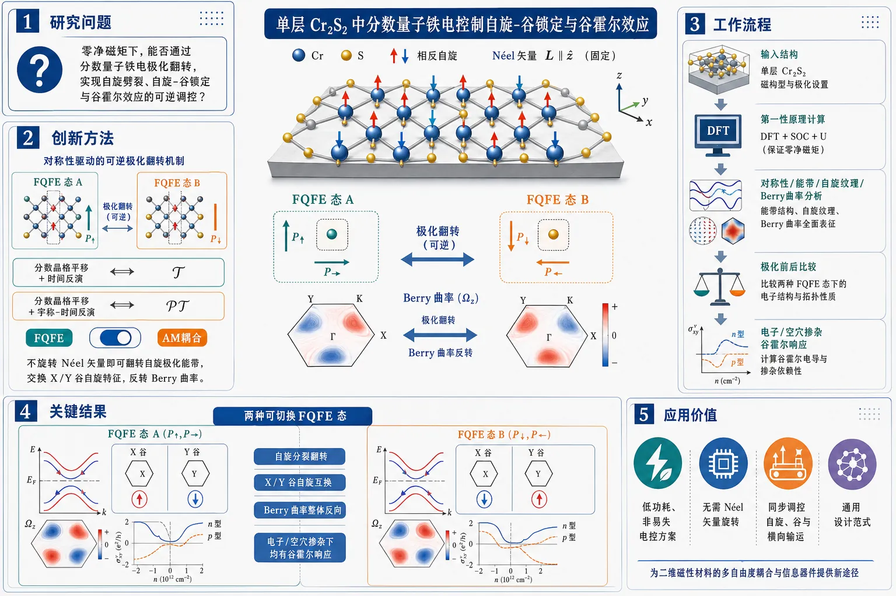
研究问题单层 Cr2S2 在零净磁矩条件下，能否通过分数量子铁电极化翻转实现自旋劈裂、自旋-谷锁定以及 Berry 曲率驱动的谷霍尔效应的可逆调控？创新方法提出分数量子铁电（FQFE）与反铁磁（AM）耦合的对称性开关机制：利用两种由“分数晶格平移 + 时间反演”或“分数晶格平移 + 宇称-时间反演”联系的可切换 FQFE 态，不旋转 Néel 矢量即可翻转自旋极化能带、交换 X/Y 谷自旋特征，并反转 Berry 曲率分布。工作流程输入单层 Cr2S2 结构与两种 FQFE 态；基于第一性原理计算对称性、能带、自旋纹理与 Berry 曲率；比较极化前后电子结构变化；得到自旋分裂翻转、X/Y 谷自旋互换；进一步分析电子/空穴掺杂下的谷霍尔响应。关键结果证明单层 Cr2S2 具有两种可切换的 FQFE 态；极化翻转会反转 AM 自旋极化能带结构，交换 X 与 Y 谷的自旋性质，并使 Berry 曲率分布整体反向；由此实现极化可切换的自旋-谷锁定与在电子、空穴掺杂下都成立的谷霍尔效应。应用价值为零净磁矩体系提供一种低功耗、非易失的电控方案，可在不依赖 Néel 矢量旋转的情况下同步调控自旋、谷与横向输运；为未来分数量子铁电-反铁磁耦合的谷电子器件与自旋电子器件提供通用设计范式。第一部分：核心概览
这篇论文把fractional quantum ferroelectricity (FQFE) 与 altermagnetism (AM) 结合起来，提出单层 Cr2S2 是一个可电控的二维 fractional quantum multiferroic 平台。最关键的贡献不只在于实现了无净磁矩条件下的动量相关自旋劈裂调控，还把这种调控进一步扩展到谷自由度与Berry 曲率驱动的 valley Hall 效应。核心新意在于：极化翻转无需旋转 Néel vector，就能反转自旋极化能带结构、交换 X/Y 谷的自旋性质，并诱导极化可切换的 valley Hall response。这使 FQFE–AM 耦合从“自旋控制”推进到“自旋—谷联合控制”，具有明显的概念推进意义。
---
第二部分：结构化快速回顾
《Fractional quantum ferroelectric control of spin-valley locking and valley Hall effects in altermagnetic monolayer Cr2S2》（None，）
背景
FQFE 与 altermagnetism 的耦合被视为无净磁化体系中实现非易失自旋控制的途径，但其对谷自由度和valley Hall 效应的影响仍缺乏系统研究。
方法
基于first-principles calculations，考察单层 Cr2S2 的对称性、能带、自旋纹理与 Berry curvature，并分析两种可切换的 FQFE states。
结果
单层 Cr2S2 被证明具有两种可通过“fractional lattice translation + time reversal / parity-time reversal”联系的 FQFE 态；极化翻转会反转 AM spin-polarized band structure，交换 X 与 Y 谷的自旋特征，并使 Berry curvature 分布反向，从而实现极化可切换的 spin-valley locking 与 valley Hall effects。
讨论
机制是对称性驱动的非易失电控：不依赖 Néel 矢量旋转，而依赖 FQFE 态之间的组合对称操作，实现自旋分裂、谷选择性与横向谷电流的协同调控。
局限
当前摘要只给出第一性原理层面的理论证明，未见实验制备、温度稳定性、激发阈值、极化翻转能垒、散射时间或器件级性能数据。
结论
单层 Cr2S2 被定位为一个面向低功耗 valleytronic devices 的候选体系，可作为 FQFE–AM coupling 的通用设计范式。
---
第三部分：逐章节冷凝解析
说明：当前可见内容仅包含标题与摘要，未提供完整 PDF，因此无法按论文原始章节标题逐章展开。以下仅对Abstract做逐点冷凝解析。
Abstract
Fractional quantum multiferroic platform
核心命题是 fractional quantum multiferroics 可由 FQFE 与 altermagnetism 的耦合实现，并成为“nonvolatile control of momentum dependent spin splitting in systems with zero net magnetization”的平台。这里的关键不是传统铁电—磁电耦合，而是分数量子铁电带来的对称性可切换态与 AM 的结合。
*“Fractional quantum multiferroics, arising from the coupling between fractional quantum ferroelectricity (FQFE) and altermagnetism (AM), provide a promising platform for nonvolatile control of momentum dependent spin splitting in systems with zero net magnetization.”*
Valley extension beyond spin control
研究范围从自旋分裂推进到谷自由度，并明确指出现有工作对 “valley degrees of freedom and Berry curvature driven valley Hall effects” 的处理仍然不足。真正的增量在于：把 FQFE–AM 耦合从spin splitting 拓展成spin-valley-valley Hall 的联合调控。
*“extending this FQFE-AM coupling to valley degrees of freedom and Berry curvature driven valley Hall effects remains largely unexplored.”*
Monolayer Cr2S2 as a 2D FQFE-AM system
单层 Cr2S2 被识别为一个二维 FQFE-AM 平台，且存在“两种可切换的 FQFE 态”。这些态并非随意定义，而是由复合对称操作联系：一类结合了fractional lattice translation 与 time reversal，另一类结合了fractional lattice translation 与 parity-time reversal。这说明该体系的可切换性是对称性保护的，而非纯数值调参得到。
*“monolayer Cr2S2 realizes a two dimensional FQFE-AM platform with two switchable FQFE states connected by composite symmetry operations combining a fractional lattice translation with time reversal or parity-time reversal.”*
Spin-polarized band reversal without Néel rotation
最重要的机制结果是：FQFE switching reverses the AM spin-polarized band structure，同时“interchanges the spin characters of the X and Y valleys”，而且“without rotating the Néel vector”。这意味着电控极化足以改写谷与自旋的对应关系，不必依赖反铁磁序参量的机械式重排。
*“FQFE switching reverses the AM spin-polarized band structure and interchanges the spin characters of the X and Y valleys without rotating the Néel vector, thereby enabling polarization switchable spin-valley locking.”*
Reversed Berry curvature and valley Hall response
两种 FQFE 态还对应“reversed Berry curvature distributions”。由于 Berry 曲率本身就是 valley Hall 响应的几何来源，因此其翻转直接导出“polarization controlled valley Hall effects under both electron and hole doping”。这里的重点是电子掺杂与空穴掺杂都成立，显示 valley Hall 调控不是单一载流子类型的偶然现象。
*“the two FQFE states exhibit reversed Berry curvature distributions, which, together with the switched spin-valley locking, enable polarization controlled valley Hall effects under both electron and hole doping.”*
General design rule for low-power valleytronics
结论提升为方法论：存在一种“symmetry based mechanism for nonvolatile electrical control of AM spin splitting, spin-valley locking, and valley Hall effects”，可作为“a general route toward low-power valleytronic devices based on FQFE-AM coupling”。这把单一材料例子上升为设计原则。
*“These results demonstrate a symmetry based mechanism for nonvolatile electrical control of AM spin splitting, spin-valley locking, and valley Hall effects, offering a general route toward low-power valleytronic devices based on FQFE-AM coupling.”*
---
第四部分：深度理解与语言支持
1. 术语解析
Fractional quantum ferroelectricity (FQFE)
不是普通铁电极化翻转，而是带有“fractional”属性的量子铁电态，通常意味着极化态之间的转换由分数平移或更复杂的空间群对称操作联系。语境中它的意义是：极化切换本身就携带非平庸对称性，从而能对电子结构产生离散、可逆、非易失的改写。
Altermagnetism (AM)
一种零净磁矩但仍存在动量依赖自旋劈裂的磁序范畴。和传统铁磁不同，它不依赖整体磁化强度；和常规反铁磁不同，它允许能带在动量空间中出现自旋分裂。这里的作用是：让spin splitting 存在于无宏观磁化体系中，适合低功耗电控。
Spin-valley locking
指特定谷与特定自旋之间建立稳定对应关系。这里不是简单的“自旋极化”和“谷极化”并列，而是某一谷的能带自旋特征被锁定。极化翻转导致 X/Y 谷自旋性质对调，说明锁定关系本身可被电场切换。
Berry curvature
能带几何性质的核心量，常被视为动量空间中的“有效磁场”。在 valley Hall 语境下，Berry 曲率在不同谷附近的符号和大小决定横向谷流的方向与强度。文中“reversed Berry curvature distributions”直接意味着 valley Hall 电流响应会反转。
Néel vector
反铁磁序的方向参量。这里“without rotating the Néel vector”非常关键：常规磁电控制常需转动磁序，而这里通过FQFE switching 就能重构自旋—谷结构，说明控制手段更像是对称性开关而不是磁矩旋转。
---
2. 疑难查证
“Composite symmetry operations combining a fractional lattice translation with time reversal or parity-time reversal”
这句话的难点在于“分数平移”不是普通晶格平移，而是只完成晶格周期的一部分；再叠加 time reversal (T) 或 parity-time reversal (PT)，就能把两个看似不同的极化态映射为彼此。
直观理解：
- 单独的极化态像是“向左”和“向右”的两个稳定位置；
- 这两个位置不是随便等价，而是由“半步移动 + 反演时间/宇称”这种复合对称联系；
- 正因为这种联系，外加电场就能实现可逆且非易失的状态切换。
“Without rotating the Néel vector”为什么重要
很多磁性调控依赖磁序翻转或转向，通常伴随较大能垒和慢响应。这里不动 Néel vector，仍能改变自旋劈裂和谷特征，说明控制变量主要落在晶格极化/对称性上。
这类机制的优势是：
- 更符合电控器件逻辑；
- 避免磁畴重排带来的迟滞和能耗；
- 让非易失电存储式控制更接近实用。
“Valley Hall effects under both electron and hole doping”
这句话说明 valley Hall 响应不局限于费米能级落在某一个载流子极性的区域。
- electron doping：费米能级向导带侧移动；
- hole doping：费米能级向价带侧移动。
两种情况下都出现可切换 valley Hall，表明控制逻辑来自整体几何与对称性重构，而不是某个单一能带局部偶然增强。
---
第五部分：创新评估与关联
1. 创新性判断
相较于近 2–5 年的相关工作，这项工作的新颖性主要体现在三层推进：
第一层：从“FQFE–AM 自旋控制”推进到“FQFE–AM 谷控制”
近年相关研究更多聚焦于 altermagnetism 的动量依赖自旋分裂，或 ferroelectric control 的磁性调控。这里把耦合目标从spin splitting 扩展为spin-valley locking 与 valley Hall effects，等于把控制对象从“自旋”升级到“自旋 + 谷 + 几何输运”三位一体。
第二层：提出不依赖 Néel vector 旋转的极化切换机制
这是器件意义最强的点。过去很多磁性电控方案需要磁序转向或交换偏置参与；这里通过 fractional lattice translation 相关的 FQFE 态切换，就能反转 spin-polarized band structure 并交换 X/Y 谷自旋字符。
这意味着：电场作为主控旋钮，磁序作为背景条件，逻辑上更接近低功耗可编程器件。
第三层：把 Berry 曲率反转纳入对称性设计框架
很多工作只停留在“能带自旋劈裂”层面。这里进一步给出Berry curvature 分布反向，并直接导向 electron and hole doping 下的 valley Hall 可控性。
这说明材料设计不只是“产生效应”，而是“同时设计效应的符号、方向与可切换性”。
解决了什么前人没解决的问题
- FQFE 与 AM 的耦合是否能用于谷自由度？
这里给出明确答案：可以，而且可直接控制 spin-valley locking 与 valley Hall。
- 无净磁矩体系能否实现非易失的谷输运电控？
这里给出对称性方案：可以通过 FQFE 状态切换实现，而不必改变总磁化。
- Berry 曲率驱动的 valley Hall 能否被极化一键翻转？
这里给出结构性机制：可以，且在电子/空穴两种掺杂下都成立。
仍需警惕的未解问题
- 摘要层面没有给出能垒、Curie/Néel 温度、极化翻转电场、声子稳定性等关键工程参数。
- 没有实验验证，仍停留在first-principles proof-of-principle。
- 材料 Cr2S2 的可合成性、缺陷容忍度、基底效应和器件集成可行性仍未知。
---
如果需要，可以继续把这篇论文的完整 PDF发来，我可以按原始章节标题逐节展开到更细的证据层级，并补上更严格的术语辨析与图表解读。
-
11
📊 含图深析
📄 摘要：研究合金化范德华反铁磁体 CrSBr 中磁序与光生激子的耦合。作者比较了局域的 Frenkel 型 XA 激子与更离域的 Wannier-Mott 型 XB 激子，指出合金化可以调节磁-激子耦合强度，为光学操控磁性提供平台。
💡 亮点：CrSBr 里两类激子对磁序的响应不同，合金化又给了耦合强度一个旋钮。它适合做磁光耦合与激子调控的模型材料。
📖 展开分析 + 配图
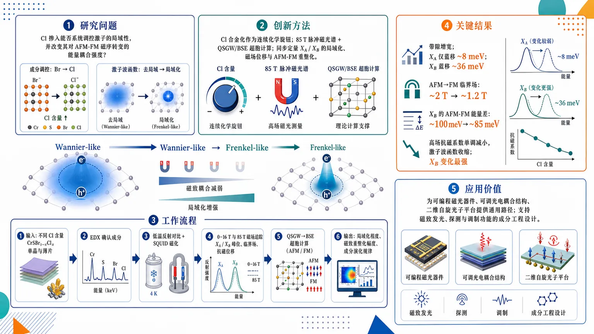
研究问题在 CrSBr₁₋ₓClₓ 合金反铁磁半导体中，Cl 掺入能否系统调控激子的局域性，并进一步改变其对 AFM-FM 磁序转变的能量耦合强度？核心要回答的是“化学成分—激子波函数尺度—磁致激子响应”之间是否存在可验证的直接因果链。创新方法用 Cl 合金化作为连续化学旋钮，结合最高 85 T 脉冲磁光谱与 QSGW/BSE 超胞计算，把两类激子 X_A 与 X_B 的波函数局域化、磁场诱导位移和 AFM-FM 能量重整化同步定量。Aha 点在于：不是只调带隙，而是通过让激子从更离域的 Wannier-like 向更局域的 Frenkel-like 演化，来可编程削弱磁致激子耦合，且 X_B 最敏感。工作流程输入为不同 Cl 含量的 CrSBr₁₋ₓClₓ 单晶与薄片；先用 EDX 确认成分，再做低温反射对比和 SQUID 磁化测量；随后在 0–16 T 与最高 85 T 磁场下追踪 X_A、X_B 的峰位、临界场和抗磁位移；并行进行 QSGW→BSE 超胞计算，分别求出 AFM 与 FM 态下的带结构、激子波函数和能量差；最终输出激子局域化程度、磁致重整化幅度及其随 Cl 含量的演化规律。关键结果Cl 增加后，带隙明显增宽，但 X_A 只轻微蓝移约 8 meV，X_B 蓝移约 36 meV，说明 X_B 对带结构变化更敏感。AFM→FM 临界场从约 2 T 降到 1.2 T，X_B 的 AFM-FM 能量差从约 100 meV 降到 85 meV。高场抗磁系数随 Cl 单调减小，证明激子波函数逐步收缩，其中 X_B 的变化最强，表明其磁致耦合被显著削弱。应用价值提供了一条用化学合金化精确调控二维磁半导体激子局域性和磁光响应的通用路径，可用于设计可编程磁光器件、可调光电耦合结构和二维自旋光子平台，也为通过成分工程优化磁致发光、探测与调制功能提供了实验与理论依据。第一部分：核心概览 (Overview)
这篇工作围绕 CrSBr₁₋ₓClₓ 这一层状反铁磁半导体，建立了“化学合金化—激子局域化—磁致激子耦合强度”之间的直接因果链。核心贡献在于：通过最高 85 T 磁光谱和 QSGW/BSE 超胞计算，证明 Cl 掺入 会同时推动 X_A 与 X_B 激子向更 Frenkel-like 的局域态演化，并显著削弱尤其是 X_B 的 AFM–FM 能量重整化。该结果把激子波函数空间延展性与磁光响应强度首次清晰对应起来，为二维磁半导体中的磁激子耦合提供了可编程的化学调控路径。
---
第二部分：结构化快速回顾
Tunable Magneto-Excitonic Coupling in Alloyed van der Waals Antiferromagnet（None，）
- 背景：CrSBr 中共存的 Frenkel-like X_A 与 Wannier–Mott-like X_B 激子，对磁序极其敏感；Cl 合金化已知可调磁性，但其对激子局域化与磁激子耦合的影响未被定量厘清。
- 方法：对 CrSBr₁₋ₓClₓ 单晶与约 10 nm 薄片进行低场 RC、SQUID、以及最高 85 T 脉冲磁场磁光谱；并结合 QSGW → QSGhatW + BSE 的超胞第一性原理计算。
- 结果：Cl 增加使 X_A 仅小幅蓝移（最高约 8 meV，而带隙增宽约 120 meV），X_B 蓝移约 36 meV；AFM–FM 转变场由约 2 T 降至 1.2 T；X_B 的 AFM–FM 能量差由约 100 meV 降至 85 meV。
- 讨论：Cl 的更高电负性主导了化学效应，抑制 p–d 杂化、增强离子性、压缩激子波函数空间尺度，使磁场驱动的带边重整化对激子能量的影响减弱。
- 局限：高场实验主要在 bulk 上完成，低场光谱主要在薄片上完成；不同实验/理论样品成分存在轻微不完全一致；未直接给出逐浓度的绝对束缚能分解。
- 结论：化学合金化 是调控二维磁半导体中 激子局域性 与 磁激子耦合 的有效手段，且 X_B 对带结构扰动最敏感。
---
第三部分：逐章节冷凝解析 (Section-by-Section Condensing)
Abstract
Magneto-excitonic coupling is exceptionally strong in CrSBr
层状磁半导体中的磁序与光生激子耦合，被界定为“a powerful mechanism for controlling light–matter interactions”。在 CrSBr 中，这种耦合尤其强，且区分为两个并存激子：局域的 X_A 与更离域的 X_B。原文关键表述是：*“the coupling is exceptionally strong and manifests distinctly between two coexisting excitonic states”*。这一设定直接把 CrSBr 置于二维磁激子研究的标杆体系。
Chlorine alloying reprograms electronic structure, excitons, and magnetism together
Cl 掺入不是单纯改带隙，而是同时改写 electronic structure, excitonic properties, and magnetic interactions。对应实验与计算共同指向一个统一图景：*“Cl insertion progressively localises the excitonic wavefunctions”*，并推动两种激子都向更 Frenkel-like 区域移动。
The magneto-optical renormalization weakens systematically, especially for X_B
磁场诱导的能量重整化随 Cl 增加而系统减弱，且“most prominently for the X_B exciton”。这意味着 X_B 的长程/离域成分更依赖磁有序导致的带边变化，因此最容易被合金化削弱。
A direct link between exciton character and coupling strength is established
最关键结论是把“exciton character”与“magneto-excitonic coupling”直接绑定：*“This work connects exciton character directly to magneto-excitonic coupling.”* 同时把 composition alloying 提升为一种工程化策略：*“an effective strategy for engineering the coupling between magnetic and optical properties”*。
---
I Introduction
2D semiconductors are exciton-dominated optical systems
二维层状半导体的光学响应由 strongly bound excitons 主导，并且可承载多种复杂准粒子态，包括 *“intra- and interlayer excitons”*、*“moiré excitons”* 和 *“multiparticle complexes”*。这一背景强调激子不是附属效应，而是核心自由度。
Exciton character spans a broad localization continuum
体系中既有 Wannier–Mott 也有 Frenkel-like 激子。原文用 *“fundamentally contrasting character”* 描述二者，说明局域程度差异会直接决定对环境与带结构变化的敏感性。
CrSBr is a rare system with coexisting localized and delocalized excitons
CrSBr 具有 A-type 反铁磁层状结构，且 AFM 与 FM 相对排列会引起显著带结构变化。最核心数字是：X_A 在 AFM 与 FM 间的能量重整化约 10 meV，X_B 约 100 meV。原文明确写道：*“CrSBr has been shown to host both: a strongly localised Frenkel-like exciton (X_A) and a more delocalized Wannier–Mott-like exciton (X_B)”*。
The central question is whether exciton character can be systematically tuned
这里提出的逻辑问题非常关键：能否系统调控激子本征局域性，从而调控其与磁序的耦合？原文表述为：*“can the character of these excitonic states and consequently their coupling to magnetic order be controlled in a systematic manner?”* 这是整篇工作的理论动机。
Cl alloying was already known to tune magnetic properties, but not excitonic ones
已有研究证明 CrSBr₁₋ₓClₓ 可调控 critical field, Néel temperature, and magnetic anisotropy。但同样的化学替换还会改写电子结构与激子性质，这一维度此前未被系统追踪。
The chemical competition favors ionicity and localization
Cl 替代 Br 有两股竞争效应：一方面更小半径会收缩键长、增强 p–d hopping t；另一方面更高电负性会把卤素 p 态下移、增大 charge-transfer energy Δ。最终决定量是 t²/Δ。关键结论是：*“the growth of Δ outweighs the enhancement of t”*，因此 p–d hybridisation 被压制，体系更离子化。
The chemical trend parallels the CrI₃ → CrBr₃ → CrCl₃ series
沿卤化物序列电负性增加会降低 p–d hybridisation、缩窄相关能带，并使激子从 Wannier-like 走向 atomic-multiplet-like。CrSBr₁₋ₓClₓ 的行为与这一趋势一致，进一步支持“电负性主导局域化”的框架。
Chemical alloying complements defect engineering as a localization knob
除合金化外，已有工作通过 atom-by-atom engineering of point defects 调控激子。这里把 Cl 合金化提升为另一种更连续、更可调的局域化调控方式。
The study integrates spectroscopy and QSGW supercell calculations
研究框架为：最高 85 T 磁光谱 + alloy supercell 上的先进电子结构计算。目标是同时追踪 exciton character, magnetic-field response, 与 electronic structure 的协同演化。
X_B should be a particularly sensitive probe of band-structure perturbations
结尾给出一个可推广判断：X_B 更 Wannier-like，因此也应对 doping, dielectric environment, strain 更敏感，适合作为未来研究对象。原文表述为：*“X_B should be equally sensitive to other perturbations known to modify the band structure”*。
---
II Results
#### Figure 1: Optical response of CrSBr₁₋ₓClₓ
Two excitonic resonances persist across the full alloy series
低温约 10 K 的 reflectance contrast 中始终只有两个主峰：X_A 与 X_B。在 pristine CrSBr 中分别位于约 1.37 eV 和 1.78 eV。更关键的是，*“both features persist across the entire compositional range”*，说明合金化没有破坏基本激子框架。
Both excitons blueshift with Cl content, but with very different amplitudes
随 Cl 增加，两条激子都蓝移，且与理论带隙增宽趋势一致。X_A 在最高 50% Cl 时仅蓝移约 8 meV，而理论带隙增宽约 120 meV。这说明 X_A 对带结构变化钝化，符合其 Frenkel-like 局域本质。
X_B is much more sensitive and indicates increasing localization
X_B 在 50% Cl 时蓝移约 36 meV，明显大于 X_A。尽管如此，它仍只跟踪了理论带隙变化的大约 30%，意味着束缚能也在随 Cl 增加而增大。原文直接给出判断：*“This discrepancy suggests a progressive increase in the X_B exciton binding energy”*，并进一步指出其波函数正在更局域化。
The disparate blueshift amplitudes encode different exciton characters
这里形成一个重要的物理映射：X_A 小幅响应 = 已很局域；X_B 大幅响应 = 离域成分更强、可被带边改变显著影响。换句话说，光谱位移本身就成为激子局域性的指示器。
---
#### Figure 2: Impact of alloying on the magneto-optical response
Magnetic field induces a redshift that saturates at a critical field
在磁场下，X_A 与 X_B 都表现为随场增强而红移，并在某一 critical field 之后饱和。该“kink”对应 AFM → FM 相变。原文使用了 *“distinct kink in the exciton energy evolution”* 这一表述。
Optical critical fields match SQUID magnetometry
光学提取的临界场与 SQUID 结果“in excellent agreement”。样品来自 20–40 nm 的机械剥离薄膜。这个一致性说明磁光谱可作为磁序探针，而不仅是光学现象记录。
Cl reduces the saturation field from about 2 T to 1.2 T
随着 Cl 含量增加，临界场系统下降：从 pristine CrSBr 的约 2 T 降至 CrSBr₀.₅Cl₀.₅ 的约 1.2 T。这与已知的 magnetocrystalline anisotropy 减弱和 interlayer exchange 变弱一致。
Magnetic tuning and optical tuning are coupled but not identical
磁相变场下降说明磁性更易翻转，但激子能量漂移的幅度同时改变，说明化学合金化并非只改变磁性，而是把磁性和光学共同重写。
---
#### Figure 3: Evolution of AFM/FM energy shifts and exciton wavefunction spread
AFM–FM energy renormalization decreases with Cl content
对薄片在 0 T 与 3 T 间的能量差进行统计，得到 ΔAFM/FM。X_B 的 AFM–FM 能量差从 pristine 的约 100 meV 降到 50% Cl 的约 85 meV。X_A 也有类似但更弱的趋势。理论 QSGW 结果与实验趋势一致。
Theoretical calculations use slightly different compositions because of structural inputs
计算中采用了来自文献的结构参数，因此实验与理论对应浓度略有差异。这个细节很重要：图 3 的 CrSBr₀.₃₃Cl₀.₆₇ 不是实验样品的精确浓度，而是结构输入决定的近似点。
X_A remains tightly confined within one layer
在 pristine 与 67% Cl 中，X_A 都主要局限于单层，只有轻微进一步局域化。其本来就很 Frenkel-like，因此化学扰动的边际效应有限。
X_B transforms strongly from interlayer-like to more localized
pristine CrSBr 中，X_B 在 FM 相具有明显 interlayer character；在 CrSBr₀.₃₃Cl₀.₆₇ 中，其空间延展显著缩小，向 Frenkel-like 极限演化。这个变化直接解释了为何磁场诱导重整化减弱。
Reduced coupling arises from diminished sensitivity to band-edge shifts
在 pristine 中，X_B 的巨大能量重整化源于 FM 相中 interlayer hybridisation 导致的带边移动。Cl 合金化后，局域化增强，使激子对带边变化不再那么敏感，于是 magneto-excitonic response 变弱。
---
#### Figure 4: Probing spatial extension of excitonic transitions of CrSBr₁₋ₓClₓ
High-field diamagnetic shifts directly measure exciton size
在 FM 相中，高场下的 diamagnetic shift 可直接反映激子在垂直磁场方向上的空间尺度。原文给出关系式：*“ΔE = σB²”*，以及 *“σ = e²/8μ ⟨r²⟩”*。这把实验可测量量 σ 与波函数半径二阶矩直接挂钩。
The quadratic field dependence confirms a conventional diamagnetic response
X_B 在高场下展现清晰的二次型能量位移。对 pristine 与 50% Cl 都用抛物线拟合提取 σ，符合经典激子抗磁漂移模型。
Alloying suppresses the diamagnetic coefficient monotonically
所有样品中，X_A 与 X_B 的 diamagnetic coefficient 都随 Cl 含量单调下降。这个趋势是对“波函数逐步局域化”的直接实验验证。
The effect is stronger for X_B than for X_A
X_B 的抗磁系数下降更显著，说明它原本更大、更易被压缩；而 X_A 已经高度局域，因此变化较小。这与图 3 的理论波函数可视化完全一致。
The high-field data validate the calculated wavefunction spread
高场实验与计算形成闭环：QSGW/BSE 预测局域化增强，85 T 数据通过更小的 σ 予以证实。原文直接写出：*“These observations provide direct experimental confirmation of the wavefunction localisation trend predicted by our electronic structure calculations.”*
---
III Summary
Cl alloying tunes both exciton character and magnetic coupling
总结段把整篇工作的主轴再次收束为：Cl 合金化是一个能同时调节 exciton character 与 coupling to magnetic order 的平台。原句为：*“alloying CrSBr with Cl provides a unique platform for tuning the character of excitonic states”*。
X_B is the more labile, more informative exciton
X_B 的蓝移和能量重整化都更大，说明它对带结构变化更敏感。总结中明确指出：*“the substantially stronger evolution of X_B reflects its more Wannier–Mott-like character”*。因此 X_B 是磁激子耦合变化的高灵敏探针。
X_A is already localized and thus comparatively insensitive
X_A 由于本身 Frenkel-like，受合金化影响小。其“比较不敏感”并不意味着无变化，而是说明其物理主导项不再是大尺度带结构。
Cl increases ionicity and suppresses p–d hybridisation
机制层面再次强调：Cl 的更高电负性比半径收缩更重要，结果是 halide p levels lower, p–d hybridisation suppressed, ionicity increased。这解释了为何激子局域化增强。
The study extends and validates the microscopic framework of prior work
总结把结果放回此前框架中，指出 AFM–FM 大能量位移主要源于磁序诱导的带结构变化，而不同激子对此的响应不同。原文为：*“the large excitonic energy shifts ... originate predominantly from magnetic-order-induced modifications of the electronic band structure”*。
Chemical alloying emerges as a general engineering route
最后的提升点是方法学意义：合金化被定义为工程化磁光性质的路径，适用于更广泛的 van der Waals semiconductors。
---
Methods
#### Sample synthesis
Alloy crystals were grown by CVT from high-purity precursors
单晶通过 chemical vapor transport (CVT) 制备，起始材料包括高纯 Cr, Br₂, S, CrCl₃。名义 Cl 含量范围为 x = 0.1–0.5，目标是让卤素子晶格上 Cl 达到 50 at.%。
Growth used a two-step thermal protocol
样品先在管式炉中加热到 700 °C 以控制溴反应，再在双温区炉中进行两阶段生长：先 900/750 °C 持续 2 days，再反转温差为 900/800 °C 持续 14 days。这是典型的长时间高温输运结晶流程。
Vacuum sealing and glovebox handling minimized contamination
安瓿在抽真空条件下密封，打开后在 argon-filled glovebox 中处理，降低空气与水分对卤化物晶体的影响。
---
#### Optical spectroscopy
High-field reflectance used a pulsed magnet up to 85 T
高场反射测量采用背散射几何，样品置于液氦冷却系统中的脉冲磁体线圈内，孔径 4 mm。时间分辨为 1 ms，单次磁脉冲 100 ms。这是捕获极端磁场下激子重整化的关键设置。
Two spectral windows targeted X_A and X_B separately
测量分两个窗口进行，分别中心在 900 nm (X_A) 与 700 nm (X_B)。这说明实验设计特意针对两条激子线优化。
Low-field micro-reflectance was done at 10 K up to 16 T
低场 micro-RC 在法拉第几何下进行，磁场最高 16 T，温度 10 K，空间分辨率约 1 μm。这部分用于精确追踪 AFM–FM 转变区的能量变化。
Reflectance contrast was defined explicitly
RC 定义为 *“(R - R0)/R”*，其中 R 为样品反射率，R0 为邻近 SiO2 基底区反射率。这个定义保证了对薄片对比度的可比性。
---
#### Electronic structure and excitonic calculations
QSGW was augmented by ladder diagrams in W
理论方法采用 Quasiparticle Self-Consistent GW，并在 screened interaction W 中加入 ladder diagrams，即 QSGW → QSGhatW。该方案的目标是提升准粒子能隙和光学性质的可靠性。原文强调：*“Self-consistency removes the starting-point dependence”*。
The method was validated for pristine CrSBr in prior work
计算框架对 pristine CrSBr 的可靠性已在前作中建立。这里的意义是：合金体系的趋势建立在已验证的基准之上。
Pristine AFM cell and alloy supercell were treated separately
pristine CrSBr 使用 12-atom unit cell；合金用 96-site supercell 表示 48 atoms + 48 empty spheres，后者服务于 linear muffin-tin orbital basis 的空间填充。这个细节说明了二维层状“空旷”结构对基组的要求。
Brillouin-zone sampling and convergence were explicitly specified
pristine 情况下，单粒子哈密顿量自洽在 10×7×2 k-mesh 上进行，动态自能用 6×4×2；合金分别用 10×6×2 和 5×3×1。两类计算均收敛到 RMS change in Σ⁰ = 10⁻⁵ Ry。
BSE used large band windows for the alloy supercell
BSE 两粒子哈密顿量在 pristine 中取 N_V = 26, N_C = 9；合金中扩大为 N_V = 104, N_C = 36，以适应超胞布里渊区折叠。波函数等值面通过将最低 BSE 本征矢反变换回超胞获得。
FM and AFM magnetic configurations were treated independently
AFM 基态与场致 FM 态分别计算，设置完全一致。这保证了 AFM–FM 能量差来自磁序本身，而不是数值设置差异。
---
#### SQUID Magnetometry
Textured thin films were prepared by roll-to-roll exfoliation
SQUID 用样品来自机械剥离薄膜，采用 roll-to-roll setup 进行高通量方向性剥离，厚度范围约 20–40 nm。这种方法保留了层内晶轴取向，便于各向异性磁测量。
Samples were mounted normal to the field
磁场垂直于薄膜平面，也垂直于面内 a/b 轴方向。这个配置适合提取与层间磁耦合相关的磁化响应。
A 5 T SQUID magnetometer was used
磁化测量在 Quantum Design MPMS-5S 上进行，最大场 5 T。这里主要用途是验证光学得到的临界场趋势。
---
#### EDX
Composition was checked on thick flakes above 100 nm
SEM-EDX 在 >100 nm 厚片上进行，以保证化学信号足够。这个步骤用于确认 Cl/Br 的实际分布与目标合金化程度。
---
#### Data availability
Data are available on reasonable request
数据可通过 corresponding authors 申请获得，开放程度属于“按需共享”，不是完全公开仓库式开放。
---
#### Acknowledgements
Funding spans DOE, EU/Polish, and ERC sources
致谢段显示项目受 DOE, NSC Poland, MEYS, Severo Ochoa, ERC 等多源资助，且使用了 NERSC, Oak Ridge, National Laboratory of the Rockies 等算力平台。说明该研究兼具高场实验与高成本第一性原理计算属性。
---
#### Author contributions
The work was jointly designed by experimental and theoretical teams
可见部分显示，核心构想由 M.B. 与 P.P. 共同提出；M.Ś. 负责高场测量、数据分析与主文图文草拟；D.P. 与 M.v.S. 参与理论计算；K.M. 合成晶体；E.Z.-A. 完成 SQUID；G.Ko. 完成 SEM-EDX。整体呈现为“实验—理论—材料合成”三线协同。
---
第四部分：深度理解与语言支持 (Understanding & Nuance)
1) 术语解析
Magneto-excitonic coupling
指 磁有序 与 激子能量/波函数 之间的耦合，不只是“磁场影响发光峰位”，而是磁结构通过改变带边、交换分裂、层间杂化等机制重塑激子本征态。这里的重点是“magneto-”并非外磁场本身，而是材料内禀磁序。
Frenkel-like exciton
强调激子电子和空穴局限在很小空间尺度，接近单原子或单胞范围。其对带结构、介电环境和长程杂化的敏感性较低，因此在合金化中常表现为小位移。
Wannier–Mott-like exciton
指空间尺度更大、电子空穴分离更明显、对有效质量和带边变化更敏感的激子。X_B 之所以对 Cl 替代更敏感，正因为它更接近这种离域图景。
Diamagnetic coefficient
式子 ΔE = σB² 中的 σ 不是普通“磁敏感度”，而是激子波函数横向尺寸的定量代理。σ 越小，⟨r²⟩ 越小，激子越局域。这比只看峰位更接近波函数层面的证据。
Quasiparticle Self-Consistent GW / QSGW
区别于普通 GW，这里通过自洽消除了对起始泛函的依赖；再加入 ladders in W，增强电子-空穴相关处理。对磁性绝缘体和激子精度要求高的体系，这种方法比标准 DFT 更可靠。
---
2) 疑难查证：复杂概念的博士生级解释
为什么 Cl 既会缩短键长、又会让体系更局域？
表面上，较小的 Cl 半径会把 Cr–卤素键拉短，按几何直觉应增强轨道重叠。可真正决定局域化的是 t²/Δ。Cl 的电负性更高，会把卤素 p 态能级压低，使 Δ 增大。只要 Δ 的增幅压过 t 的增幅，整体杂化就变弱，局域化反而增强。这就是“化学压力”和“电负性效应”竞争后，后者胜出的典型案例。
为什么 X_B 的磁致位移比 X_A 大得多？
X_B 更离域，空间上跨越更多晶格与层间区域，因此更依赖磁序变化引起的带边重整化和层间杂化重构。AFM 到 FM 的变化会显著改变它看到的有效势景观，于是峰位位移大。X_A 已经高度局域，等效上更像“原子内”激发，磁序改变只能轻微扰动它。
为什么高场抗磁位移能证明“局域化增强”？
在强磁场下，激子受到洛伦兹约束，波函数横向收缩会导致能量上升。ΔE ∝ B² 的系数 σ 与电子空穴平均分离距离平方成正比。实验上 σ 变小，意味着波函数尺寸变小，这是直接的空间局域化证据，比仅看低场红移/蓝移更接近微观本质。
---
第五部分：创新评估与关联 (Synthesis & Novelty)
1) 创新性判断
相较过去 2–5 年相关工作的核心新意有三点：
- 把“激子局域性”与“磁激子耦合强度”建立成可调的因果关系。
过去 CrSBr 研究已经知道 X_A/X_B 有不同磁响应，也知道 AFM–FM 转变会引起大幅光学位移；但这里进一步证明，通过化学合金化把 X_B 从 Wannier-like 推向 Frenkel-like，就能连续削弱其磁致能量重整化。这比单纯观察磁光效应更进一步，进入“可编程调控”层面。
- 给出“Cl 合金化”这一连续化学旋钮，而非仅靠外场、应变、掺杂或缺陷。
近年很多工作集中在应变、电介质环境、点缺陷、局域工程上；这里把 composition alloying 提升为一个更宏观、更稳定、可系统扫描的控制维度。尤其在二维磁半导体里，这种化学旋钮同时改写磁性和激子，而不只是其中之一。
- 实验与高精度理论形成闭环，并以高场抗磁系数直接验证波函数尺度。
最高 85 T 的高场数据不是附属补充，而是直接把 diamagentic coefficient σ 作为波函数大小的实验代理，与 QSGW/BSE 计算的波函数等值面相互印证。这样的“光谱位移 + 波函数可视化 + 计算自洽”组合，使结论从现象学跃迁到微观机制层面。
前人未解决的关键问题
- 没有清晰回答：为什么 X_B 对磁序的响应远强于 X_A？这种差异能否被外延到化学可调控变量上？
- 没有把 激子局域化程度 与 AFM–FM 磁致能量重整化 做成可连续调节的实验曲线。
- 没有用高场抗磁漂移把“波函数变小”从推断变成直接证据。
总体评价
这项工作最重要的创新，不是发现了 CrSBr 会被 Cl 改变，而是证明了：磁光耦合强度可以通过调节激子本征局域性来工程化控制。这把二维磁激子物理从“观察耦合”推进到“设计耦合”。
-
12
📊 含图深析
📄 摘要：在双层 Fe2WS4 中，层间滑移方向充当对称性选择器，可非易失地切换不同的输运通道。第一性原理显示，这种滑移能选择性打开异常霍尔或异常谷霍尔效应，并通过改变层间对称性调控 Berry 曲率分布。
💡 亮点：层间滑移不只是结构畸变，而是可直接切换霍尔类型的对称性旋钮。Fe2WS4 提供了把机械位移转成可读输运信号的范例。
📖 展开分析 + 配图
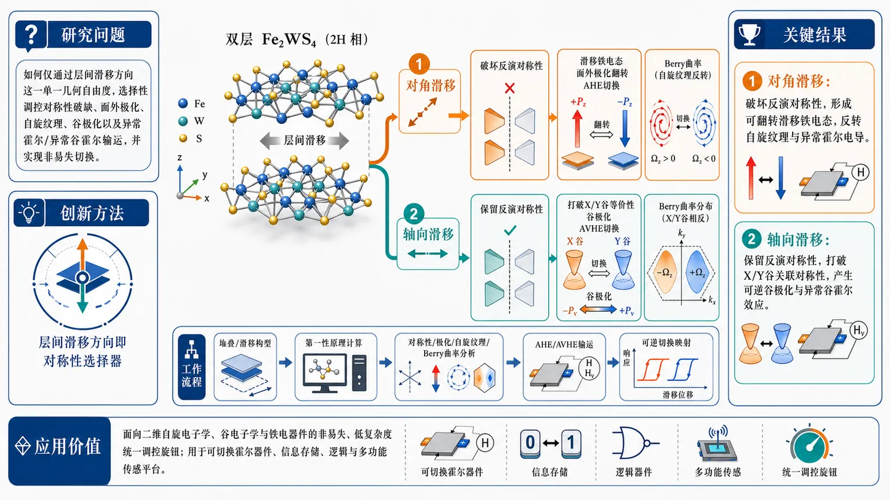
研究问题如何在 altermagnetic 双层 Fe2WS4 中，仅通过层间滑移方向这一单一几何自由度，选择性调控对称性破缺、面外极化、自旋纹理、谷极化以及异常霍尔/异常谷霍尔输运，并实现非易失切换。创新方法提出“层间滑移方向即对称性选择器”的思路，基于第一性原理计算比较两类滑移：对角滑移专门破坏反演对称性，生成可翻转的滑移铁电态并切换异常霍尔；轴向滑移保留反演对称性但打破 X/Y 谷关联晶体对称性，从而打开异常谷霍尔通道。一个滑移方向，对应一种对称性破缺路径。工作流程从双层 Fe2WS4 的不同堆叠/滑移构型出发，分别施加对角滑移和轴向滑移；计算对称性变化、极化方向、自旋纹理重构、X/Y 谷对称性破缺与 Berry 曲率分布；进一步得到异常霍尔电导和异常谷霍尔响应；比较两种构型的可逆切换关系，建立“结构滑移—对称性—输运输出”的映射。关键结果对角滑移会破坏反演对称性，形成两种面外极化相反的滑移铁电态，并可随极化翻转反转动量依赖自旋纹理和异常霍尔电导；轴向滑移则在保持反演对称性的同时打破 X/Y 谷等价性，产生可逆的谷极化与可切换的异常谷霍尔效应。说明同一材料可由滑移方向分出两套不同的功能响应。应用价值为二维自旋电子学、谷电子学与铁电器件提供一种非易失、低复杂度的统一调控旋钮；可用于可切换霍尔器件、信息存储、逻辑与多功能传感平台，避免依赖额外电场、应变或异质结构，实现结构驱动的多自由度协同操控。第一部分：核心概览
这篇工作把层间滑移方向提升为二维反铁磁体系中的对称性选择器。在altermagnetic bilayer Fe2WS4里，对角滑移打破反演对称性，生成两种具有相反面外极化的滑移铁电态，并可反转动量依赖自旋纹理与异常霍尔电导；轴向滑移则保留反演对称性、破坏关联 X/Y 谷的晶体对称性，从而实现可切换的异常谷霍尔效应。核心贡献在于把同一材料中的铁电、自旋、谷与霍尔输运统一到“滑移方向”这一非易失控制旋钮下。
---
第二部分：结构化快速回顾
《Interlayer sliding direction as a symmetry selector in altermagnetic bilayer Fe2WS4: Switchable anomalous Hall and anomalous valley Hall effects》（None，）
- 背景：altermagnets兼具补偿性共线磁序与动量依赖自旋劈裂，在无净磁矩条件下连接自旋、谷与 Berry 曲率输运，但对这些自由度的非易失、选择性调控仍是关键难题。
- 方法：采用first-principles calculations，比较双层 Fe2WS4 的不同层间滑移方向对对称性、极化、自旋纹理、谷极化和霍尔响应的影响。
- 结果：对角滑移诱导反演对称性破缺与可翻转面外极化，并切换异常霍尔电导；轴向滑移保留反演对称性但破坏 X/Y 谷相关晶体对称性，产生异常谷霍尔效应的可逆切换。
- 讨论：层间滑移方向充当对称性筛选器，分别打开不同的输运通道，体现强磁电耦合与Berry 曲率主导的响应选择性。
- 局限：公开信息仅显示第一性原理层面结论，未见温度效应、缺陷、滑移势垒、器件尺度可实现性与实验验证。
- 结论：层间滑移方向可作为二维 altermagnetic 双层中的非易失对称性旋钮，统一控制铁电性、自旋纹理、谷极化与霍尔输运。
---
第三部分：逐章节冷凝解析
> 目前可见文本仅包含标题与摘要，缺少完整正文，因此以下按可确认内容进行冷凝解析；章节级标题无法逐字复现，只能严格基于可见信息展开。
Abstract
#### Problem setting and field position
关键问题是如何在无净磁矩的 altermagnetic 体系中，实现对自旋、谷与输运响应的非易失且可选择控制。
摘要把研究背景定在altermagnets：*“combine compensated collinear magnetic order with momentum-dependent spin splitting”*。这一点意味着体系同时满足两类看似矛盾的特征：
- 补偿性共线磁序，整体磁矩为零或接近零；
- 动量依赖自旋劈裂，使不同 k 点上的电子自旋结构不同。
核心难点被明确为 *“achieving nonvolatile and selective control of these intertwined degrees of freedom remains a key challenge”*。这里的“intertwined degrees of freedom”指自旋、谷、铁电极化与 Berry 曲率输运彼此耦合，调一个量往往同时改写多个性质。
#### Methodological strategy
研究策略是用第一性原理计算，把“层间滑移方向”当成外参，对双层 Fe2WS4 的对称性与电子输运进行分类。
摘要直接给出方法：*“using first-principles calculations”*。这意味着主要证据来自密度泛函理论一类的无参数或少参数电子结构计算，而不是实验测量。
真正的控制变量不是电场、应变或掺杂，而是 *“the direction of interlayer sliding”*。这一设计的关键不在“滑移是否发生”，而在“沿什么方向滑移”——方向本身决定破缺哪一种空间对称性。
#### Diagonal sliding: inversion breaking and ferroelectric switching
对角滑移破坏反演对称性，生成两种极化相反的滑移铁电态，并可反转异常霍尔响应。
摘要中的核心句是：*“Diagonal sliding breaks inversion symmetry and produces two sliding ferroelectric states with opposite out-of-plane polarizations.”*
这里包含三个层次的结果：
- breaks inversion symmetry：反演对称性被破坏；
- two sliding ferroelectric states：形成两种由滑移定义的铁电稳态；
- opposite out-of-plane polarizations：面外极化方向相反。
进一步，*“Reversal of the ferroelectric polarization switches the momentum-dependent spin texture and reverses the anomalous Hall conductivity”*。这说明极化翻转不仅改变静态极化，还联动改写：
- momentum-dependent spin texture：动量空间自旋纹理；
- anomalous Hall conductivity：异常霍尔电导。
这一链条构成强烈的磁电耦合证据，并导向 *“a ferroelectrically switchable anomalous Hall effect”*，即铁电可控的异常霍尔效应。
#### Axial sliding: valley selectivity without inversion breaking
轴向滑移保留反演对称性，却破坏 X/Y 谷之间的晶体对称性，从而实现异常谷霍尔效应。
摘要给出对照结论：*“In contrast, axial sliding preserves inversion symmetry but breaks the crystalline symmetry relating the X and Y valleys”*。
这个结构非常关键，因为它说明两种滑移方向并非简单地“强弱不同”，而是选择性激活不同对称性破缺通道：
- 对角滑移 → 反演对称性破缺 → 铁电与异常霍尔；
- 轴向滑移 → X/Y 谷相关晶体对称性破缺 → 谷极化与异常谷霍尔。
后续结果是 *“reversible valley polarization and a switchable anomalous valley Hall effect”*。也就是说，轴向滑移引入的是谷自由度的可逆操控，不是净磁矩变化。
#### Unified conceptual message
层间滑移方向被定义为一种非易失的对称性选择器，可统一控制铁电、自旋、谷与霍尔输运。
摘要最后一句把整篇工作的理论定位说得非常清楚：*“These results establish the direction of interlayer sliding as a nonvolatile symmetry selector”*。
这里的关键词是 nonvolatile symmetry selector：
- nonvolatile：一旦形成某种滑移构型，就能保持，不需要持续外场维持；
- symmetry selector：不是简单打破对称性，而是“选择”破坏哪一种对称性，从而决定输出哪一类物理响应。
最后列出的被统一控制对象包括 *“ferroelectricity, spin texture, valley polarization, and Hall transport responses”*。这使 Fe2WS4 双层成为一个把铁电、磁、谷与拓扑输运耦合到同一机械自由度上的平台。
---
第四部分：深度理解与语言支持
1. 术语解析
#### Altermagnet
这是近年磁性材料分类中的新概念，区别于传统铁磁和反铁磁。
其学术含义是：总体上补偿磁矩为零，但能带在动量空间呈现自旋劈裂。
与普通反铁磁相比，altermagnet 的关键不在“有没有净磁矩”，而在“是否存在动量依赖的自旋分裂与 Berry 曲率效应”。这正是异常霍尔与谷霍尔能出现的基础。
#### Momentum-dependent spin splitting
直译是“动量依赖的自旋劈裂”。
这不是简单的 Zeeman 分裂，也不是 Rashba 型单纯自旋-轨道耦合结果，而是由磁空间群对称性决定的、随 k 点变化的自旋分裂。
其含义是：不同布里渊区位置的电子，其自旋朝向与能量分离方式不同，因此可以在不引入净磁矩的情况下实现自旋选择性输运。
#### Out-of-plane polarization
这是面外极化，即极化矢量沿垂直于二维层面的方向。
在二维层状材料中，面外极化尤其重要，因为它容易通过栅压、电场和层间位移读取或翻转，并常与层间堆叠构型直接相关。
“opposite out-of-plane polarizations” 的真正含义不是一般的极化方向变化，而是两个可稳定区分、可互相翻转的铁电态。
#### Anomalous Hall conductivity
这是异常霍尔电导，指在无外加磁场或在极小场下，由 Berry 曲率和时间反演/空间反演破缺导致的横向电流响应。
在这里，它与极化翻转和自旋纹理重构直接耦合，说明输运信号不是附属效应，而是对称性变化的直接电子学读出。
#### Valley polarization / anomalous valley Hall effect
谷极化是不同能谷（如 X 与 Y）占据或能量不等的状态。
异常谷霍尔效应则是载流子在不同谷中产生相反横向速度或流向，从而出现谷流分离。
这里的微妙差别在于：
- 谷极化更像“哪个谷更占优势”；
- 谷霍尔更像“不同谷在横向输运中如何分流”。
前者偏静态，后者偏动力学。
---
2. 疑难查证
#### 为什么“滑移方向”比“滑移幅度”更关键？
这是全文最值得深挖的概念。
二维双层中，层间滑移会改变两层原子相对位置，从而修改空间群。关键不是“滑了多少”，而是“沿哪条对称路径滑”。
原因在于不同方向对应不同的对称性破缺模式：
- 对角方向滑移：更容易同时打破反演中心，使上下层不再能通过中心对称操作互相映射，于是产生铁电极化。
- 轴向滑移：可能不破坏整体反演，但会破坏把 X 与 Y 谷联系起来的晶体对称性，于是让两个谷不再等价，进而诱发谷极化与谷霍尔响应。
因此，滑移方向本质上是一个对称性分流器，不是单纯的几何位移参数。
#### 为什么会同时出现异常霍尔和异常谷霍尔？
两者都来自Berry 曲率，但触发它们的对称性条件不同。
- 异常霍尔效应通常需要破坏能保证横向电流相互抵消的对称性，最常见是与反演、时间反演或其组合有关。
- 异常谷霍尔效应则更强调不同谷在布里渊区中的不等价性。
在这个体系里，不同滑移方向分别打破不同对称性，因此同一材料在不同构型下可以“切换输出模式”：
- 一种模式主要表现为自旋纹理翻转 + 异常霍尔；
- 另一种模式主要表现为X/Y 谷失配 + 异常谷霍尔。
这就是“symmetry selector”的真正含义。
---
第五部分：创新评估与关联
1. 创新性判断
相较于近 2–5 年的相关工作，最显著的新意在于把“层间滑移方向”提升为统一操控多自由度的对称性开关。
过去几年的相关研究主要集中在三条线：
- 滑移铁电：通过堆叠/滑移获得可翻转极化；
- 二维磁性与 altermagnet：探索无净磁矩但有自旋分裂的输运；
- 谷电子学：通过破缺特定晶体对称性实现谷极化与谷霍尔效应。
这篇工作的推进点在于把三条线合并到同一机制：
- 对角滑移负责铁电与异常霍尔；
- 轴向滑移负责谷选择性与异常谷霍尔；
- 同一材料、同一层间自由度、不同滑移方向，输出不同物理功能。
2. 解决了前人没解决的问题
前人常见的困难是：
- 想要铁电切换时，往往只能改极化，难以同步操控自旋与拓扑输运；
- 想要谷选择性时，常常依赖额外应变、外场或异质结构，非易失性不足；
- 想同时兼顾磁、谷、输运时，控制参数太多，器件设计复杂。
这项工作提供了更简洁的答案：
只调层间滑移方向，就能在一个二维 altermagnetic 双层中选择性打开不同对称性破缺通道。
因此，它不仅给出一种新材料现象，更给出一种对称工程范式：
用几何滑移方向替代多外场协同调控。
3. 领域地位判断
这类结果的价值不只在“又发现了一个可切换效应”，而在于把altermagnetism从“新磁性分类”推进为“可编程输运平台”。
如果后续实验能确认滑移势垒、室温稳定性与可逆切换，这一机制会成为二维自旋谷电子学中的高价值范式。
---
如果需要，我可以继续把这篇论文整理成：
- 一页式笔记版，
- 适合组会汇报的 PPT 大纲版，或
- “关键图—关键结论”逐图解读版。
-
13
📊 含图深析
📄 摘要：作者为两个相距较远的氮空位中心构建了微观 Lindblad 主方程，并研究以微波作为驱动、以合成反铁磁作为耗散环境时的远程纠缠。重点在于寻找可在稳态中维持纠缠的方案，面向量子传感和量子计算应用。
💡 亮点：用微波驱动加合成反铁磁耗散，去稳定两个远距离氮空位中心的稳态纠缠。它强调的是“可维持”而不是瞬态生成。
📖 展开分析 + 配图
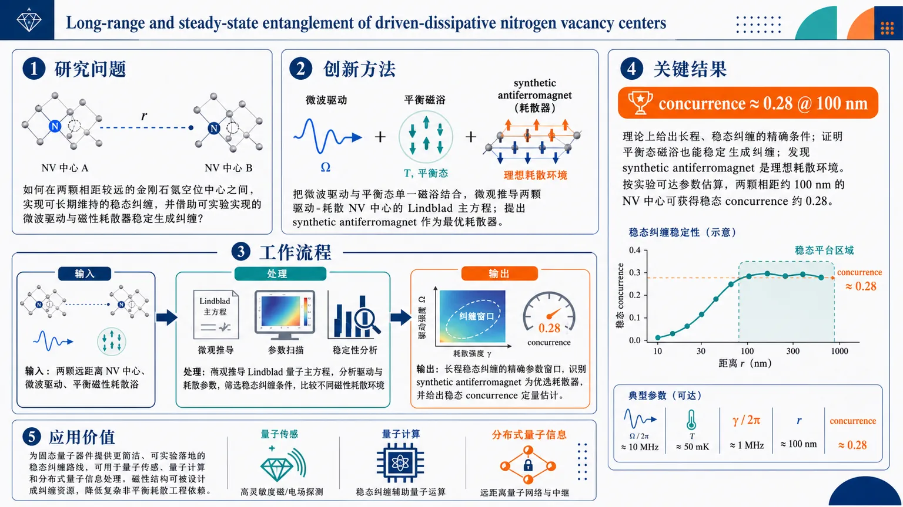
研究问题如何在两颗相距较远的金刚石氮空位中心之间，实现可长期维持的稳态纠缠，并且不依赖复杂的非平衡耗散环境，而是借助可实验实现的微波驱动与磁性耗散器来稳定生成纠缠？创新方法论文的Aha点在于：把微波驱动与保持平衡态的单一磁浴结合，微观推导出两颗驱动-耗散NV中心的Lindblad主方程；进一步指出 synthetic antiferromagnet 可作为最优耗散器。也就是说，纠缠不是靠“硬造”非平衡环境，而是利用合适的磁性耗散结构，把系统自动引导到纠缠稳态。工作流程输入：两颗远距离NV中心、微波驱动、平衡磁性耗散浴。处理：从系统-环境相互作用出发微观推导Lindblad量子主方程，分析驱动与耗散参数对纠缠演化的影响，筛选可产生稳态纠缠的条件，并比较不同磁性耗散环境。输出：获得长程稳态纠缠的精确参数窗口，识别出 synthetic antiferromagnet 作为优选耗散器，并给出稳态 concurrence 的定量估计。关键结果理论上给出了长程、稳态纠缠的精确条件；证明平衡态磁浴也能稳定生成纠缠；发现 synthetic antiferromagnet 是理想耗散环境。按实验可达参数估算，两颗相距约100 nm的NV中心可获得稳态 concurrence 约0.28，说明该方案具有可观且可实现的纠缠强度。应用价值为固态量子器件提供了一条更简洁、更可实验落地的稳态纠缠路线，可用于量子传感、量子计算和分布式量子信息处理。它表明磁性结构本身可以被设计成纠缠资源，降低对复杂非平衡耗散工程的依赖，提升远距离量子互联的可实现性。第一部分：核心概览
这项研究把微波驱动与平衡态磁性耗散环境结合起来，微观推导出两颗远距离 NV center 的 Lindblad 主方程，并据此给出实现长程、稳态纠缠的精确条件。核心新意在于：纠缠不再依赖复杂的非平衡耗散工程，而是可由synthetic antiferromagnet 作为耗散器稳定产生；在可实验参数下，100 nm 量级间距可达到约 0.28 的稳态 concurrence，属于面向固态量子器件的高可实现性方案。
---
第二部分：结构化快速回顾
《Long-range and steady-state entanglement of driven-dissipative nitrogen vacancy centers using microwaves as a drive and synthetic antiferromagnet as a dissipator》（None，）
背景：远距离 NV 中心纠缠对量子传感与量子计算重要，但稳态纠缠通常需要把环境调到非平衡态，实现难度高。
方法：对两个驱动-耗散 NV 中心做微观推导，建立 Lindblad quantum master equation；驱动为微波，耗散来自一个保持平衡的磁性浴。
结果：得到长程与稳态纠缠的精确条件；指出 synthetic antiferromagnet 是理想耗散器；在现实参数下，100 nm 间距可达 (Csimeq 0.28)。
讨论：平衡态磁浴也能稳定纠缠，说明稳态纠缠不必依赖复杂非平衡工程；磁结构设计本身可作为纠缠资源。
局限：当前可见信息仅支持两体、模型化、参数估计层面的结论，尚无实验演示与完整正文细节。
结论：微波驱动 + 合适磁性耗散器，可在固态平台上实现可观的、较长距离的稳态纠缠。
---
第三部分：逐章节冷凝解析
可用章节范围说明
当前可见材料仅包括标题、摘要、元数据，未提供 PDF 正文，因此无法按论文的原始章节标题逐章展开。以下按可见内容的原始结构进行解析：Title / Abstract / Comments。
---
Title
研究对象与机制组合
标题直接给出四个关键信息：对象是 nitrogen vacancy centers；目标是 long-range and steady-state entanglement；手段是 microwaves as a drive；耗散来源是 synthetic antiferromagnet as a dissipator。这四者组合本身就是贡献点：不是单纯讨论 NV 中心纠缠，而是把驱动—耗散协同设计成可稳定输出纠缠的工程方案。
英文原句：*"Long-range and steady-state entanglement of driven-dissipative nitrogen vacancy centers using microwaves as a drive and synthetic antiferromagnet as a dissipator"*。
学术含义
- long-range：强调两颗 NV 中心之间存在可观空间分离，不是近邻耦合极限。
- steady-state：纠缠不是瞬态峰值，而是可在长期演化后维持。
- driven-dissipative：外部驱动与环境耗散共同决定最终量子态，而非封闭系统动力学。
---
Abstract
远距离 NV 纠缠的核心难点
摘要把研究动机定义得非常明确：远距离 NV 中心纠缠的方案与环境设计仍在竞争中，“*The search for optimal schemes and dissipative environments for mediating long-range entanglement between two distant nitrogen-vacancy centers (NVCs) in diamond is the subject of ongoing vigorous efforts*”。这里的关键不是“能否纠缠”，而是如何寻找最佳方案与最佳耗散环境。问题背景对应的是固态量子比特在量子传感和量子计算中的应用需求。
英文引述：*"The search for optimal schemes and dissipative environments for mediating long-range entanglement between two distant nitrogen-vacancy centers (NVCs) in diamond is the subject of ongoing vigorous efforts due to potential applications of such microscopic solid-state qubits in quantum sensing and quantum computing."*
稳态纠缠的传统瓶颈
摘要明确指出，稳态纠缠的最大障碍是环境通常需要被调成非平衡态：“*stabilizing entanglement of NVCs into steady-state poses a significant challenge, typically requiring tuning the environment into an nonequilibrium state*”。这句话对应的技术难点是：很多耗散工程方案虽然能短时制造纠缠，但难以在自然、可控且稳定的条件下把纠缠锁定到稳态。
英文引述：*"stabilizing entanglement of NVCs into steady-state poses a significant challenge, typically requiring tuning the environment into an nonequilibrium state."*
微观推导的主方程框架
核心方法是“*microscopically derive a Lindblad quantum master equation for a system of two driven-dissipative NVCs*”。这意味着动力学不是凭经验写下现象学方程，而是从系统-环境结构出发构造满足马尔可夫近似下的Lindblad 主方程，从而可系统识别哪些参数区间能产生稳态纠缠。
英文引述：*"Here we microscopically derive a Lindblad quantum master equation for a system of two driven-dissipative NVCs, where the drive is microwave radiation and dissipation is provided by a single magnetic bath that is kept in equilibrium."*
驱动与耗散的角色分工
驱动由微波辐射承担，耗散由一个保持平衡的单一磁浴提供：“*the drive is microwave radiation and dissipation is provided by a single magnetic bath that is kept in equilibrium*”。这一点非常关键：纠缠生成不依赖复杂的非平衡环境，只需微波驱动配合合适的平衡磁性耗散器即可。
英文引述：*"the drive is microwave radiation and dissipation is provided by a single magnetic bath that is kept in equilibrium."*
精确条件的输出能力
该主方程不仅是形式化工具，还能“*predict precise conditions for long-range and steady-state entanglement of NVCs*”。这里的“precise conditions”意味着存在可计算的参数窗口，而不是定性猜测。对实验设计而言，这种输出比单纯的可行性论证更有价值，因为它可直接转化为磁场、间距、驱动强度和浴参数的调节目标。
英文引述：*"This equation allows us to predict precise conditions for long-range and steady-state entanglement of NVCs."*
Synthetic antiferromagnet 的最优性
摘要给出最具原创性的系统结论：*“it also suggests synthetic antiferromagnet as an optimal choice for a dissipative environment.”* 这表明磁性耗散器不是随便选取，而是经由理论比较后得到的最优候选。synthetic antiferromagnet 的物理直觉在于：通过反铁磁耦合与净磁矩抵消，可在保持有效磁响应的同时抑制不利的宏观磁场效应，更适合充当稳定耗散资源。
英文引述：*"it also suggests synthetic antiferromagnet as an optimal choice for a dissipative environment."*
现实参数下的可实现度
最具体的数值结果是：在实验可达参数下，稳态 concurrence 预计可达 (Csimeq 0.28)，对应两颗 NV 中心间距约 100 nm。这一数值在固态量子纠缠方案里并不只是“非零”，而是达到可观测、可比较的量级；同时 100 nm 也已经超出局域近邻耦合范畴，体现出真正的长程性。
英文引述：*"By using realistic parameters from available experiments, we estimate steady-state concurrence reaching (Csimeq 0.28) for two NVCs separated by (sim 100 : nm)."*
---
Comments / Metadata
篇幅与呈现形式
元数据显示全文为 7 pages, 3 figures, 72 references。这意味着论文规模紧凑，更可能集中呈现理论模型、关键推导和少量代表性图示，而不是大规模数值扫描或多场景实验验证。
英文原句：*"7 pages, 3 figures, 72 references"*
---
第四部分：深度理解与语言支持
1) 术语解析
1. Driven-dissipative
- 含义：系统同时受外部驱动与环境耗散影响，最终状态由二者竞争决定。
- 微妙差别：不是“受驱动”也不是“有噪声”这么简单，而是开放量子系统的非平衡稳态物理。
- 语境中作用：纠缠不是靠封闭演化自然出现，而是靠驱动把系统推向某个态、耗散把它锁定在那里。
2. Lindblad quantum master equation
- 含义：描述马尔可夫开放量子系统密度矩阵演化的标准方程。
- 微妙差别：比一般主方程更强调完全正性与可物理解读的耗散通道。
- 语境中作用：确保“驱动 + 耗散”模型能被严格写成量子动力学，而不是经验损失项。
3. Steady-state concurrence
- 含义：稳态时两量子比特纠缠度的一个标准量化指标。
- 微妙差别：concurrence 是两比特纠缠度的具体量纲无关指标，不等同于一般“纠缠存在”。
- 语境中作用：(Csimeq 0.28) 给出的是可比较、可复现的量化结果。
4. Synthetic antiferromagnet
- 含义：由两层或多层铁磁层经耦合形成的人工反铁磁结构。
- 微妙差别：不是天然反铁磁材料，而是可工程化设计的磁结构。
- 语境中作用：作为耗散器时，兼具可调磁动力学与较好的环境工程自由度。
5. Nonequilibrium state
- 含义：系统不处于热平衡，存在持续通量、泵浦或外部偏置。
- 微妙差别：很多稳态纠缠方案依赖非平衡环境，但实现复杂、稳定性差。
- 语境中作用：这项工作强调不必依赖非平衡耗散，也能形成稳态纠缠。
---
2) 疑难查证
为什么“平衡态磁浴”还能生成稳态纠缠？
直觉上，耗散常被视为破坏量子相干的因素，但在开放系统里，耗散也能成为选择性投影机制：如果驱动和耗散通道的对称性、选择定则、频率匹配共同满足某些条件，系统会被“吸引”到某个纠缠暗态或弱耗散纠缠态。这里的关键不在于耗散强弱本身，而在于耗散结构是否偏好纠缠子空间。
为什么 synthetic antiferromagnet 可能优于普通磁环境？
反铁磁式耦合常带来两个优势：
- 净磁矩抵消降低外泄场和不必要的长波扰动；
- 局域磁涨落结构可调，更容易匹配 NV 中心的跃迁与选择定则。
因此，它更像一个“可编程的纠缠耗散器”，而不是随机噪声源。
100 nm 的“长程”意味着什么？
对 NV 中心而言，100 nm 已明显超出直接近场交换相互作用的典型强耦合距离，通常需要借助介质、光场、声子、磁激发或耗散通道来建立关联。这里的“长程”不是绝对宏观意义上的远，而是在固态量子器件尺度上已经足以体现非局域纠缠媒介的价值。
---
第五部分：创新评估与关联
1) 创新性判断
相较于近 2–5 年相关工作，这项研究的创新点主要在三处：
第一，稳态纠缠不再依赖复杂非平衡环境。
近年许多固态量子纠缠方案依赖精细调控的非平衡耗散、额外泵浦链路或多模中介。这里把环境限定为保持平衡的单一磁浴，同时仍实现稳态纠缠，降低了实验复杂度。
第二，把 synthetic antiferromagnet 提升为“最优耗散环境”候选。
过去相关工作常关注光子腔、声子波导、表面自旋浴、磁子介质等。这里的关键推进不是换一个媒介而已，而是给出一种可工程化磁结构作为耗散器，并明确其最优性指向。
第三，给出可落地的量化性能指标。
“(Csimeq 0.28)” 和 “(sim 100,nm)” 使方案从概念性跃迁到器件可评估层面。很多理论方案只证明“可纠缠”，但不回答“在真实参数下有多大”。这篇工作直接给出可比较的目标数值。
2) 解决了前人未解决的问题
- 稳态与长程的兼得：许多方案只能做短时或近距离纠缠。
- 平衡耗散环境下的纠缠稳定化：常见方案依赖非平衡耗散工程，这里减少了这一要求。
- 磁性耗散器的系统选择问题：不是“任意磁介质都行”，而是明确 synthetic antiferromagnet 更优。
- 实验参数闭环：从主方程到 concurrence 数值估计，形成直接可用的设计图景。
---
如果需要，我可以进一步把这篇工作整理成：
- 一页式论文笔记，或
- 适合组会汇报的 PPT 逻辑框架，或
- 把摘要中的物理模型逐项拆成公式级推导清单。
-
14
📄 摘要：基于对称性分析和第一性原理计算，提出通过单侧 Cl 吸附把 FeSe 单层工程化为 Fe2Se2Cl 结构，并结合栅压诱导空穴掺杂，获得稳健的 d 波反铁磁序。该方案为在铁基超导母体中构建可调磁序提供了现实路径。
💡 亮点：单侧氯吸附把 FeSe 单层改造成可承载 d 波反铁磁序的 Fe2Se2Cl。它把铁基超导母体与反铁磁工程更紧地连到了一起。
📖 展开分析 + 配图
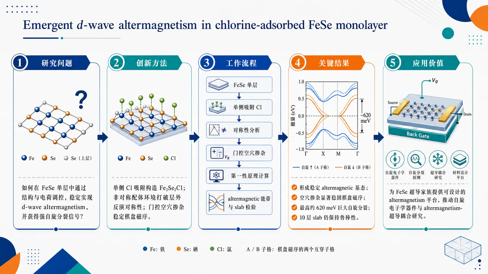
研究问题如何在典型铁基超导单层 FeSe 中，通过可设计的结构与电荷调控，稳定实现 d-wave altermagnetism，并获得足够强、可延展的自旋分裂信号。创新方法采用单侧 Cl 吸附把 FeSe 单层构造成 Fe2Se2Cl，引入非对称配体环境打破层外反演对称性，再用门控可调空穴掺杂稳定棋盘磁序，形成 d-wave altermagnetic 基态。工作流程从 FeSe 单层出发 → 单侧吸附 Cl 构建 Fe2Se2Cl → 做对称性分析确认反演破缺 → 施加门控空穴掺杂调控载流子 → 第一性原理计算评估磁基态与能带 → 得到 altermagnetic 自旋分裂并检验 10 层 slab 鲁棒性。关键结果体系形成高度稳定的 altermagnetic 基态；空穴掺杂显著稳固棋盘磁序；产生最高约 620 meV 的巨大全 altermagnetic 自旋分裂；该效应在 10 层 slab 中仍可保持，表明具有较强厚度鲁棒性。应用价值为 FeSe 超导家族提供一个可计算、可设计的 altermagnetism 平台，推动自旋电子学器件探索，并为研究 altermagnetism 与超导性耦合提供新材料入口。当前可见文本仅含摘要与元数据，未提供全文 PDF，因此无法严格按原始章节标题逐章展开；以下解析严格限定于可见内容，并对可确认信息做深度拆解。
---
第一部分：核心概览（Overview）
这项工作提出单侧 Cl 吸附的 FeSe 单层可形成 Fe2Se2Cl，并在空穴掺杂下稳定出d-wave altermagnetism。核心贡献在于把 altermagnetism 引入铁基超导家族这一经典平台，同时展示出高达 620 meV 的巨大自旋分裂，以及在 10 层 slab 中仍保持的鲁棒性，说明该相不只是单层偶发现象，而可能延伸到更接近体相极限的厚度范围。其学术位置在于：为“超导 FeSe + altermagnetism”这一极稀缺组合提供了可计算、可设计的材料路线。
---
第二部分：结构化快速回顾
《Emergent d-wave altermagnetism in chlorine-adsorbed FeSe monolayer》（None，）
背景
altermagnetism 近年成为凝聚态新方向，但同时具备内禀 altermagnetic 有序与超导性的材料极少。FeSe 单层是典型铁基超导体，具有很强的平台价值。
方法
结合对称性分析与第一性原理计算，通过单侧 Cl 吸附构建 Fe2Se2Cl，并引入门控可调空穴掺杂。
结果
得到高度稳定的 altermagnetic 基态；空穴掺杂稳定棋盘磁序（checkerboard magnetic order）；非对称配体环境引入出平面空间反演破缺；产生最高 620 meV 的巨大全 altermagnetic 自旋分裂。
讨论
hole doping 与非对称配体环境形成协同：前者强化磁序稳定性，后者提供对称性破缺基础；该机制把 FeSe 家族推进到自旋电子学候选材料范畴。
局限
当前证据来自理论设计，未见实验合成、实验磁谱或输运验证；具体有限温度、缺陷、应变、动力学稳定性等信息在可见文本中未展开。
结论
Fe2Se2Cl 被指认为极有前景的 spintronic 平台，并为探索altermagnetism 与 superconductivity 的耦合提供了新入口。
---
第三部分：逐章节冷凝解析
目前可见文本仅包含 Abstract
无法提取全文的原始章节标题，因此以下按摘要中的逻辑单元进行“章节级”冷凝解析。
---
1. 问题设定：altermagnetism 与超导平台稀缺
- 核心矛盾：altermagnetism 是新兴方向，但能同时承载内禀 altermagnetic order与superconductivity的材料平台极少。
- 证据句：*“The recent emergence of altermagnetism has opened new frontiers in condensed matter physics, yet material platforms capable of hosting both intrinsic altermagnetic order and superconductivity remain exceedingly rare.”*
- 学术定位：FeSe monolayer 被选作目标体系，因为它本身就是prototypical iron-based superconductor，天然适合讨论磁性与超导的竞争/耦合。
- 证据句：*“monolayer FeSe, a prototypical iron-based superconductor.”*
---
2. 材料设计：单侧 Cl 吸附构建 Fe2Se2Cl
- 结构方案：通过single-side Cl adsorption 在 FeSe 单层上构建 stoichiometric Fe2Se2Cl。
- 证据句：*“By designing a stoichiometric Fe2Se2Cl structure through single-side Cl adsorption”*
- 关键意义：该设计不是简单表面修饰，而是直接改写局域配位与对称性环境，为后续的altermagnetic order创造结构基础。
- 证据句：*“an asymmetric ligand environment intrinsically breaks the out-of-plane spatial inversion symmetry.”*
- 术语要点：这里的 stoichiometric 强调化学计量比明确，不是随机覆盖或非整比吸附层。
---
3. 调控手段：门控可调空穴掺杂
- 调控策略：引入gate-tunable hole doping，即通过外场门控调节空穴浓度。
- 证据句：*“and introducing gate-tunable hole doping”*
- 物理作用：空穴掺杂不是附属参数，而是稳定磁序的核心控制旋钮。
- 证据句：*“hole doping firmly stabilizes the checkerboard magnetic order”*
- 信息密度：摘要未给出具体空穴浓度数值、门电压范围或相图边界，因此无法进一步量化。
---
4. 基态性质：高度稳定的 altermagnetic 基态
- 结果主结论：体系进入highly stable altermagnetic ground state。
- 证据句：*“we achieve a highly stable altermagnetic ground state.”*
- 物理含义：说明磁序不仅存在，而且在设计参数下是基态，不是高能亚稳态。
- 关键细节缺口：可见文本未给出总能差、磁矩大小、交换参数、T_N 或自旋极化方向，因此无法补足更细的定量判据。
---
5. 磁序类型：棋盘磁序被空穴掺杂稳固
- 具体磁结构：checkerboard magnetic order 被明确点名。
- 证据句：*“hole doping firmly stabilizes the checkerboard magnetic order”*
- 机制指向：棋盘型排布通常对应反铁磁性或相邻自旋交替翻转的格局；在这里，它与 altermagnetism 相关联，说明该磁序在整体磁矩可能抵消的同时，仍可在动量空间诱发自旋分裂。
- 重要差别：checkerboard magnetic order 不等同于普通反铁磁绝缘体；其关键在于与晶体对称性结合后形成altermagnetic的能带自旋劈裂。
---
6. 对称性来源：出平面反演破缺
- 对称性破缺点：asymmetric ligand environment 导致out-of-plane spatial inversion symmetry 被破坏。
- 证据句：*“the asymmetric ligand environment intrinsically breaks the out-of-plane spatial inversion symmetry.”*
- 物理后果：这种反演破缺为自旋分裂提供必要的结构条件，使得磁序不只是局域交换效应，而能转化为能带层面的altermagnetic spin splitting。
- 微妙之处：这里的破缺强调的是out-of-plane，说明问题集中在垂直层面的非对称性，这与单侧吸附直接对应。
---
7. 巨大效应：最高 620 meV 的 altermagnetic 自旋分裂
- 定量结果：自旋分裂最高达到 620 meV。
- 证据句：*“a giant altermagnetic spin splitting of up to 620 meV.”*
- 意义：这是一个非常大的能标，意味着效应不只是微弱修正，而是足以主导低能电子结构的主效应之一。
- 可见文本限制：摘要未说明该数值对应哪条能带、哪个高对称点、是否是费米能附近分裂，也未说明 SOC 与磁交换的相对贡献。
---
8. 鲁棒性验证：10 层 slab 仍保持效应
- 厚度扩展：效应在10-layer slab model 中仍然存在。
- 证据句：*“persisting even in a 10-layer slab model”*
- 物理意义：这一步非常关键，因为它把现象从“单层理想化模型”推进到“更接近 bulk limit 的厚结构”。
- 证据句：*“that accurately simulates the bulk limit.”*
- 结论强度：说明该 altermagnetic 态对厚度不敏感，具备潜在的器件可扩展性，而不是仅限于极薄极限。
---
9. 应用前景：自旋电子学与超导耦合
- 应用指向：Fe2Se2Cl 被明确定位为spintronic applications 候选平台。
- 证据句：*“our findings identify Fe2Se2Cl as a promising platform for spintronic applications”*
- 更远目标：该体系还推动对altermagnetism and superconductivity 相互作用的研究。
- 证据句：*“motivate future studies of the possible interplay between altermagnetism and superconductivity.”*
- 学术价值：这不是单纯寻找新磁性材料，而是把超导基底材料改造成可能承载新型磁序的多功能平台。
---
第四部分：深度理解与语言支持
1) 关键术语解析
Altermagnetism
- 不是普通ferromagnetism，因为宏观净磁矩可以为零或接近零。
- 也不同于传统antiferromagnetism，因为能带结构中仍可出现自旋分裂。
- 核心特征是：磁序 + 晶体对称性共同导致动量依赖的自旋劈裂。
D-wave
- 这里不是简单指“d 轨道”，而是指一种角向/对称性表征：自旋分裂在动量空间呈现类似 d-wave form factor 的变号结构。
- 含义类似于：不同方向上的自旋分裂符号或幅度不同，体现高阶对称性。
Checkerboard magnetic order
- 字面上是“棋盘式磁序”，通常对应相邻格点自旋交替排列。
- 在这里，它不只是磁结构标签，而是 altermagnetism 的磁有序基础。
Out-of-plane spatial inversion symmetry
- 指垂直于二维层面的反演对称性。
- 单侧吸附会天然打破这种对称性，使上、下方向不再等价，从而允许更丰富的自旋分裂机制。
Bulk limit
- 指体系厚度足够大时接近体相的极限行为。
- 10 层 slab 仍保留效应，说明该现象不只存在于极薄二维极限。
---
2) 疑难查证：几个容易混淆的概念
为什么“磁序”不等于“自旋分裂”？
磁序是实空间上原子磁矩的排列方式；自旋分裂是能带在动量空间里的能级分裂。两者之间需要对称性桥梁。
在这里，checkerboard magnetic order 提供磁性背景，asymmetric ligand environment 打破反演对称性，二者合起来才把磁序转译成显著的altermagnetic spin splitting。
为什么“空穴掺杂”能稳定磁序？
空穴掺杂改变费米能级附近的电子占据，进而改变磁交换与能量竞争关系。
直观上，某些磁序在特定载流子浓度下更容易降低总能量，因此 hole doping firmly stabilizes the checkerboard magnetic order。
为什么 10 层 slab 很重要？
二维单层结果常被质疑为“边界效应”或“理想化特例”。
10 层仍然保持，说明该效应具有更强的结构鲁棒性，接近可实验扩展的厚度范围。
---
第五部分：创新评估与关联
1) 创新性判断
相对近 2–5 年相关工作的新颖性，集中在四点：
- 把 altermagnetism 引入 FeSe 超导家族
许多 altermagnet 候选集中在传统磁性金属、氧化物或特定层状材料；这里直接指向铁基超导母体/近亲体系，平台价值更高。
- 单侧 Cl 吸附 + 门控空穴掺杂的协同设计
不是只靠化学掺杂或只靠结构畸变，而是把结构对称性破缺与电荷调控耦合起来，形成双旋钮方案。
- 给出极大的自旋分裂尺度：620 meV
在二维磁性设计中，这属于非常强的能带效应信号，说明不是“可忽略的小效应”。
- 证明厚度鲁棒性到 10 层 slab
这一步把概念性二维预测推进到更接近实际材料片和器件尺度，显著增强了可行性。
2) 解决了前人未解决的问题
- 解决了“altermagnetism 在何种现实材料中可稳定实现”的问题。
- 解决了“能否在超导家族材料中嵌入 altermagnetic order”的问题。
- 解决了“二维设计是否只限于单层理想模型”的问题，因 10 层 slab 仍有效。
---
一句话结论
这篇工作用单侧 Cl 吸附 + 门控空穴掺杂，把 FeSe 单层改造成一个兼具d-wave altermagnetism、巨大自旋分裂与厚度鲁棒性的候选平台，是将超导材料家族与altermagnetism 连接起来的重要理论设计。
如果需要，我可以继续把这篇论文整理成：
- 图表级逐图解读模板，或
- 适合组会汇报的 5 分钟讲稿。
-
15
📄 摘要：作者用自旋群对称性处理自旋轨道耦合，解析共线铁磁体中的自旋霍尔效应。结果显示，SOC 一阶即可区分出两类主要的时间反演偶自旋霍尔机制：与磁化无关的常规贡献，以及与磁化相关的贡献，从而说明磁序如何激活不同自旋霍尔响应。
💡 亮点：这篇工作把共线铁磁体里的自旋霍尔效应拆成了对称性清晰的两类机制。对磁性自旋流设计，这种分解比经验分类更有用。
📖 展开分析 + 配图
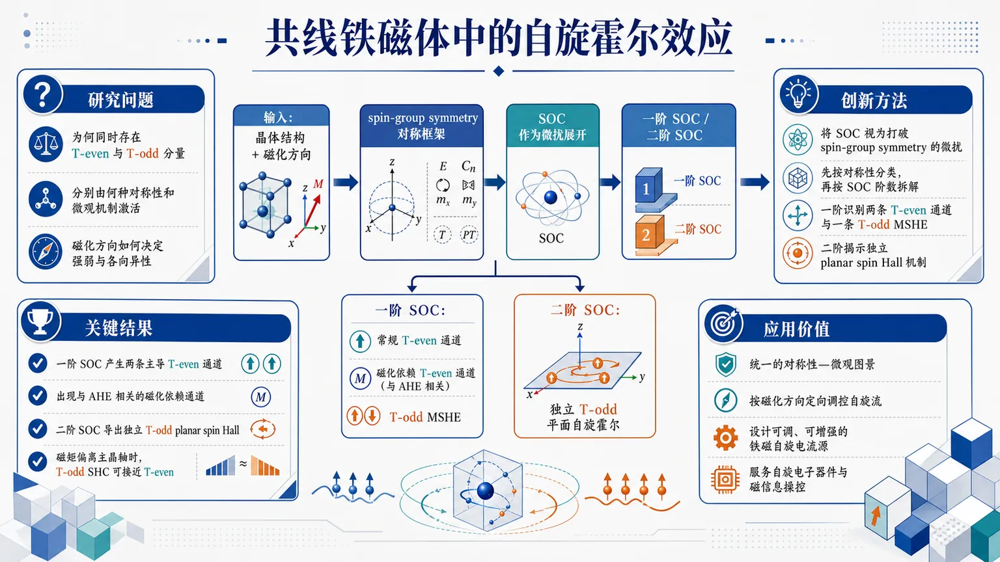
研究问题磁性共线铁磁体中的自旋霍尔效应为何同时存在 T-even 与 T-odd 分量，它们分别由什么对称性和微观机制激活，磁化方向如何决定其强弱与各向异性。创新方法把自旋轨道耦合视为打破 spin-group symmetry 的微扰，用对称性先分类、再按 SOC 阶数拆解响应：一阶 SOC 识别出两条 T-even 通道和一条 T-odd 的 magnetic spin Hall effect，二阶 SOC 进一步揭示独立的 planar spin Hall 机制，并用第一性原理计算验证。工作流程输入共线铁磁体的晶体与磁化结构 → 建立 spin-group symmetry 对称框架 → 将 SOC 作为微扰展开 → 分别分析一阶和二阶 SOC 对 SHC 的贡献 → 区分 T-even 与 T-odd 通道及其与 AHE 的关联 → 通过第一性原理计算验证 → 输出不同磁化方向下的自旋霍尔响应分类与强度。关键结果一阶 SOC 产生两条主导 T-even 自旋霍尔通道：磁化无关的常规通道，以及与反常霍尔电荷输运相关的磁化依赖通道；同阶还出现 T-odd MSHE。二阶 SOC 进一步导出独立的 T-odd planar spin Hall。结果显示该效应具有强各向异性，磁矩偏离主晶轴时，T-odd SHC 可达到与 T-even SHC 相近的量级。应用价值为共线铁磁体中的自旋霍尔效应提供统一的对称性微观图景，帮助按磁化方向定向调控自旋流分量，支持设计可调、可增强的铁磁自旋电流源，服务于自旋电子器件与磁信息操控。第一部分：核心概览
这篇工作把collinear ferromagnets中的 spin Hall effect (SHE) 统一纳入 spin-group symmetry 框架，用 spin-orbit coupling (SOC) 作为微扰，拆分出T-even与T-odd两类自旋霍尔响应的微观来源：一阶 SOC 下出现两条主导的 T-even 通道和一条 T-odd magnetic spin Hall effect (MSHE) 通道，二阶 SOC 还导出一种独立的planar spin Hall机制。核心贡献在于给出可分类、可追踪、可由第一性原理验证的响应图景，说明铁磁体中的 SHC 不只是“有没有”，而是“由什么对称性激活、在什么磁化方向下增强、与 AHE 如何耦合”。在自旋电子学中，这属于把经验现象提升为对称性驱动的统一机制解释。
---
第二部分：结构化快速回顾
《Spin Hall Effect in Collinear Ferromagnets from Spin-Group Symmetry》（None，）
背景
磁性材料中的自旋霍尔电流同时存在 T-even 与 T-odd 两类，但其微观起源长期不清晰；collinear ferromagnets 尤其缺少统一解释。
方法
将 SOC 视为破坏 spin-group symmetry 的微扰；在对称性分析基础上，分别考察一阶与二阶 SOC 对 SHC 的贡献，并结合first-principles calculations 验证。
结果
一阶 SOC 下得到两种主导 T-even SHE：一个与磁化无关的 conventional contribution，一个与 anomalous Hall charge transport 相关的磁化依赖通道；同阶还出现 T-odd MSHE。二阶 SOC 下出现独立的 T-odd planar spin Hall 机制。
讨论
磁化方向改变会显著调制 magnetic spin Hall effect；当磁矩偏离主晶轴时，T-odd SHC 的量级可接近 T-even SHC，呈现强各向异性。
局限
当前可见材料仅含摘要，未给出具体材料清单、数值表格、误差分析、计算参数与实验验证细节；对具体晶体体系的普适性边界无法完整判定。
结论
spin-group symmetry 提供了理解铁磁体中 SHE 的统一微观框架，并指向可调磁化方向的铁磁自旋电流源。
---
第三部分：逐章节冷凝解析
目前可核验材料的边界
当前输入仅包含题目、作者、摘要与 arXiv 元数据，未包含 PDF 正文，因此无法按原始章节标题逐一解析，也无法核验图表编号、具体材料体系、数值、误差条、样本量或统计显著性。下面按摘要可直接支持的逻辑单元进行冷凝拆解。
---
Research problem and unresolved origin of SHE in magnetic materials
磁性材料里的 spin Hall currents 同时包含 T-even 与 T-odd 分量，但微观来源不明，这构成全文的起点。摘要直接给出问题框架：*"Magnetic materials support both time-reversal-even (T-even) and time-reversal-odd (T-odd) spin Hall currents, yet their underlying microscopic origins remain elusive."*
这里的关键不是单纯讨论 SHE 是否存在，而是区分不同 time-reversal parity 的响应项，并追问它们各自由什么对称性和什么散射/带结构机制产生。
---
Spin-group symmetry as the organizing principle
核心方法是把 SOC 当作破坏 spin-group symmetry 的微扰，从而把铁磁序如何“激活”不同 SHE 通道显式化。摘要表述为：*"Here, we elucidate the spin Hall effect (SHE) in collinear ferromagnets by treating spin-orbit coupling (SOC) as a perturbation that breaks spin-group symmetry, thereby revealing how magnetic order activates distinct spin Hall response."*
这里的结构性贡献在于：不是从具体材料的数值结果倒推机制，而是先用 spin-group symmetry 组织允许的响应，再按 SOC 阶数分解贡献。这样的框架能把“对称性允许”与“实际大小”分开处理。
---
First-order SOC yields two dominant T-even SHE channels
一阶 SOC 下，出现两条主导的 T-even 通道：
1) 与磁化无关的 conventional contribution；
2) 与 anomalous Hall charge transport 相关的磁化依赖通道。
摘要原句是：*"To first order in SOC, we identify two dominant T-even SHE mechanisms: a magnetization-independent conventional contribution and a magnetization-dependent channel associated with anomalous Hall charge transport."*
这句的关键信息有三层：
- first order in SOC：机制出现在最低阶 SOC 纠正中，说明不是高阶小效应；
- magnetization-independent vs magnetization-dependent：两条通道在对磁化的敏感性上不同；
- associated with anomalous Hall charge transport：与 AHE 的电荷输运通道发生联系，提示自旋霍尔响应与反常霍尔响应不是孤立的。
---
Leading T-odd MSHE emerges at first order through exchange with local magnetization
一阶 SOC 还给出主导的 T-odd magnetic spin Hall effect (MSHE)，其来源是常规自旋流与局域磁化之间的交换耦合。摘要原文是：*"At the same order, the leading T-odd magnetic spin Hall effect (MSHE) originates from the exchange interaction between the conventional spin current and the local magnetization."*
这里的技术含义是：MSHE 不是简单地把 T-even 响应加个磁性修正，而是由自旋流与局域磁矩发生显式交换耦合而生成的 T-odd 分量。也就是说，磁序本身参与构造了响应算符，而不只是改变数值大小。
---
Second-order SOC produces a distinct T-odd planar spin Hall mechanism
除了一阶项，二阶 SOC 还产生一种独立的 T-odd planar spin Hall 机制。摘要给出：*"At second order in SOC, we further uncover a distinct T-odd planar spin Hall mechanism."*
这意味着平面型自旋霍尔并非一阶主效应的附属修正，而是需要更高阶 SOC 才能显现的不同通道。与前述一阶 T-odd MSHE 相比，它在微观来源上是另一个机制分支，而不是同一机制的简单延伸。
---
First-principles calculations validate the symmetry analysis
对称性分类并非纯形式推导，后续由 first-principles calculations 进行支撑。摘要明确指出：*"Our spin-symmetry analysis is corroborated by first-principles calculations."*
这说明结论至少经过电子结构计算层面的交叉验证。尽管当前材料未给出具体材料名、k 点网格、交换-相关泛函或计算参数，但“corroborated”表明对称性分类与数值结果是同向一致的，而不是相互矛盾。
---
Strong anisotropy appears when magnetization is tilted away from principal axes
数值结果显示明显的anisotropic magnetic spin Hall effect，且磁矩偏离主晶轴时，T-odd SHC 的量级可以接近 T-even SHC。摘要写道：*"These findings reveal a pronounced anisotropic magnetic spin Hall effect whose magnitude can be comparable to the T-even spin Hall conductivity (SHC) when the magnetic moment is tilted away from the principal crystallographic axes."*
这段信息非常关键：
- pronounced anisotropic：方向依赖性强，不是弱各向异性；
- tilted away from the principal crystallographic axes：效应对磁化取向极敏感；
- comparable to the T-even SHC：T-odd 分量不是边缘修正，强到可与传统 T-even SHC 同量级。
这使铁磁体成为可通过磁化方向“旋钮式”调控的自旋流源。
---
Physical implication: a unified microscopic picture for SHC in collinear ferromagnets
整体结论是给出 collinear ferromagnets 中 SHC 的微观来源统一图景，并指向自旋电子器件应用。摘要最后两句是：*"These findings clarify the microscopic origins of the SHC in collinear ferromagnets and pave the way for ferromagnet-based spin current sources with versatile properties in spintronic applications."*
这里的含义不是泛泛而谈“有应用前景”，而是明确指出铁磁体可以成为具有可变性质的自旋电流源：通过磁化方向和对称性破缺方式，调控 T-even / T-odd 分量的相对强弱。
---
第四部分：深度理解与语言支持
1) 术语解析
Spin-group symmetry
指同时处理实空间晶体对称性与自旋空间对称性的联合对称框架。与普通空间群不同，它显式包含自旋旋转与磁序耦合，因此特别适合描述磁性体系中的输运张量允许项。
T-even / T-odd
表示在time reversal 下保持不变或变号的响应分量。这里不是抽象分类，而是直接决定自旋霍尔电流在磁化翻转前后如何变化。T-even 通常可对应传统背景项，T-odd 则直接携带磁序信息。
Conventional contribution
这里不是“传统”这种口语意义，而是指不依赖磁化方向、可在较广义对称条件下存在的基础 SHE 通道。它与磁性修饰项区分开，便于识别真正由磁序诱发的响应。
Magnetic spin Hall effect (MSHE)
不同于普通 SHE，这里强调响应具有磁性诱导的时间反演奇偶性，即响应本身因局域磁化而呈现 T-odd 性。它不是“有磁场的 SHE”，而是磁序参与定义的独立响应类别。
Planar spin Hall mechanism
“平面型”通常暗示响应几何与磁化、流向、极化方向的相对共面关系不同于标准 SHE。这里的重点在于它是second-order SOC 才显现的独立机制，说明其对称性门槛更高。
---
2) 疑难查证：高年级博士生式解释
为什么要把 SOC 当作微扰？
因为在许多磁性材料里，若先忽略 SOC，自旋和轨道自由度近似解耦，对称性结构更清晰；SOC 再把原本独立的自旋与晶格方向绑定起来，从而“解锁”新的输运张量分量。这样做的好处是能把哪些响应是对称性允许的与哪些响应是由 SOC 诱导出来的分层识别。
为什么 T-even 与 T-odd 都能出现在自旋霍尔效应里？
在磁性体系中，自旋流响应不再只由非磁背景决定。磁化本身破坏时间反演对称性，使得某些在非磁材料中被禁止的分量变为允许，于是同一个“自旋霍尔”名词下，会分裂出对时间反演性质不同的多个通道。
为什么磁化偏离主晶轴后效应变大？
因为张量分量的允许性和投影关系都随磁化方向变化。主晶轴上可能存在额外对称性，抑制某些响应项；一旦磁化倾斜，这些约束被解除，原先被压制的 T-odd 通道就能显著增强，甚至达到与 T-even SHC 可比的量级。
为什么“与 AHE 相关”的表述重要？
因为它提示 spin Hall 与 anomalous Hall 之间存在机制耦合，而不是两个完全独立的输运现象。对铁磁体而言，电荷霍尔与自旋霍尔往往共享相同的 SOC 与磁序底层结构，这种联系有助于建立统一输运图景。
---
第五部分：创新评估与关联
1) 创新性判断
相对近 2–5 年磁性自旋输运相关工作，这里的新颖性集中在三点：
第一，统一框架更强。
近年的相关研究常分别讨论磁性材料中的 SHE、AHE、MSHE 或特定晶体中的各向异性响应，但这里直接用 spin-group symmetry 把它们放进同一分类体系，并按 SOC 阶数 分解，机制层次更清晰。
第二，明确拆分了多条通道。
不是简单宣称“铁磁体里也有 SHE”，而是区分出：
- 磁化无关的 conventional T-even 通道；
- 与 AHE 关联的磁化依赖 T-even 通道；
- 一阶 T-odd MSHE；
- 二阶 T-odd planar 机制。
这种分解解决了前人工作中“看见了磁性自旋霍尔信号，但不知道信号属于哪一类对称性通道”的问题。
第三，强调可调到与传统 SHC 同量级。
摘要中最强的应用判断是：当磁矩偏离主晶轴时，T-odd SHC 的量级“*can be comparable to the T-even spin Hall conductivity*”。这把磁序从“扰动项”提升为“主导调控旋钮”，对铁磁自旋源设计具有直接意义。
2) 解决的前人问题
- 解决了磁性材料中 T-even / T-odd SHE 的来源模糊问题。
- 解决了铁磁体中自旋霍尔与反常霍尔之间关系不清的问题。
- 解决了为何不同磁化方向会导致巨大各向异性的问题。
- 进一步补上了二阶 SOC 才出现的 planar T-odd 机制这一缺口。
---
如果需要，我可以在下一步继续做两件事之一：
- 以“论文精读笔记”的方式，把这篇工作整理成可直接汇报的中文提纲；
- 如果上传 PDF 正文，我可以按真实章节标题逐节做更严格的证据级解析。
-
16
📊 含图深析
📄 摘要：作者结合非弹性中子散射、磁化测量、磁结构分析、第一性原理计算和线性自旋波模拟，研究自旋 1 三角反铁磁 NiI2 的磁激发。结果表明，配体介导的键依赖各向异性交换相当显著，是理解其磁激发和类 Kitaev 物理的重要因素。
💡 亮点：NiI2 中的键依赖交换不是微弱修正，而是足够强的主导相互作用。多种实验与计算共同把它推向 Kitaev 型磁性候选体系。
📖 展开分析 + 配图
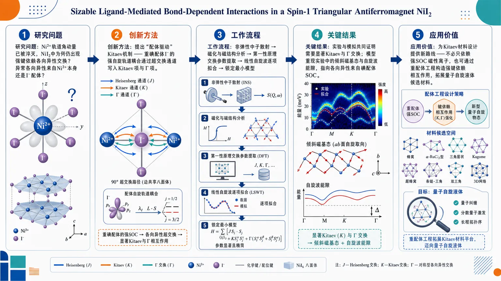
研究问题在磁性离子 Ni²⁺ 轨道角动量已被淬灭、看似不具备强自旋轨道效应的 NiI₂ 中，是否仍能出现足够强的键依赖各向异性交换？这种异常各向异性究竟来自磁性离子本身，还是来自卤素配体的介导？创新方法提出“配体驱动”的 Kitaev 机制：利用重碘配体 I⁻ 上强自旋轨道耦合，通过超交换通道把方向选择性的交换写入有效哈密顿量，使 NiI₂ 在弱 SOC 的 Ni²⁺ 背景下仍产生显著的 Kitaev 项和非对角 Γ 项。工作流程以 NiI₂ 为研究对象，先用非弹性中子散射测量磁激发谱，再结合磁化测量与磁结构分析约束基态；随后用第一性原理计算提取交换相互作用，并用线性自旋波模拟逐项拟合实验谱，最终锁定包含 Kitaev 与 Γ 相互作用的最小模型。关键结果实验与模拟共同证明，NiI₂ 需要显著的 Kitaev 与 Γ 交换才能解释其磁性；该模型成功重现实验中的倾斜磁基态和自旋波能隙，并强力指向各向异性来源于配体碘离子的自旋轨道耦合，而非 Ni²⁺ 本身。应用价值为寻找 Kitaev 材料提供新的设计路线：不必只依赖强 SOC 的磁性离子，也可以通过重配体工程构造强键依赖相互作用。这将显著扩大量子自旋液体、分数量子激发及新型挫折磁体的候选材料范围。第一部分：核心概览
这篇工作把 NiI₂ 从“普通三角晶格反铁磁体”提升为 Kitaev 物理的实验载体：通过 非弹性中子散射、磁化、磁结构分析、第一性原理和线性自旋波模拟 的联合证据，锁定了一个最小有效模型，其中 Kitaev 与 off-diagonal Γ 相互作用同时显著，并共同决定了 canted 基态与自旋波能隙。最关键的学术贡献在于，把强 bond-dependent anisotropy 的来源从磁性离子本身的强自旋轨道耦合，转移到 ligand（I） 的自旋轨道耦合上，给出一条清晰的“配体驱动”Kitaev 机制实验路径，显著拓宽了候选 Kitaev materials 的设计空间。
---
第二部分：结构化快速回顾
《Sizable Ligand-Mediated Bond-Dependent Interactions in a Spin-1 Triangular Antiferromagnet NiI₂》（None，）
- 背景：Kitaev 模型依赖 bond-dependent anisotropic interactions，但实验实现稀少；NiI₂ 作为 S=1 的层状三角反铁磁体，提供了检验非传统 Kitaev 机制的机会。
- 方法：联合使用 inelastic neutron scattering、磁化测量、磁结构分析、first-principles calculations 和 linear-spin-wave simulations。
- 结果：识别出包含显著 Kitaev 与 Γ 相互作用的最小模型；该模型解释了 canted magnetic ground state 与自旋波谱隙。
- 讨论：异常的各向异性并非来自 Ni²⁺ 的轨道角动量，而是来自 ligand ions 上的强自旋轨道耦合，支持 ligand-driven Kitaev mechanism。
- 局限：摘要未给出交换常数的具体数值、误差范围、样本量或拟合优度，定量强度比较只能在全文中进一步核实。
- 结论：NiI₂ 提供了强证据，证明即使磁性离子本身自旋轨道耦合较弱，也能通过配体实现强 bond-dependent 相互作用，扩展 Kitaev 材料版图。
---
第三部分：逐章节冷凝解析
> 由于未提供全文，仅能按当前可见的 Abstract 进行逐段冷凝解析；若补充 PDF，可继续按完整章节展开。
Abstract
Kitaev 相互作用仍是稀缺的实验目标
摘要开头直接把问题框定在 Kitaev model 的核心难点：其关键是 bond-dependent anisotropic Kitaev interactions，但“实验实现仍然稀少”。这意味着研究目标不是再重复发现一个磁有序体系，而是寻找一种能在真实材料里稳定呈现 bond-dependent 交换的机制。原文直接指出：*"The bond-dependent anisotropic Kitaev interactions are the key for the Kitaev model, which has attracted intense interest for its potential to host quantum-spin-liquid states and fractional excitations."* 这里的逻辑链非常清楚：Kitaev 相互作用 → 量子自旋液体 → 分数量子激发，因此任何能增强这类相互作用的材料都具有高价值。
NiI₂ 被定位为一个 spin-1 三角反铁磁平台
研究对象是 NiI₂，并明确强调其为 spin S=1 的 van der Waals magnet。这点很重要，因为多数 Kitaev 候选体系集中在蜂窝晶格、强 SOC 的 4d/5d 电子系统，而这里的出发点是 三角晶格反铁磁体，且磁性离子是 Ni²⁺，其轨道角动量被淬灭。摘要原文写得很直接：*"Here, we investigate the magnetic excitations of NiI₂, a van der Waals magnet with spin S=1."* 这把体系的反常性讲得很明确：在通常不被视作 Kitaev 热点的材料中寻找 bond-dependent 交换。
多模态证据链锁定最小模型
核心方法不是单一实验，而是多证据联合：*"By combining inelastic neutron scattering, magnetization measurements, magnetic structure analysis, first-principles calculations, and linear-spin-wave simulations, we identify a minimal model..."* 这里的关键信息有五层：
- inelastic neutron scattering 负责看激发谱；
- magnetization measurements 给出宏观磁响应；
- magnetic structure analysis 约束基态排布；
- first-principles calculations 提供微观交换线索；
- linear-spin-wave simulations 检验模型是否重现实验谱。
这种组合的学术意义在于：不是单靠拟合，而是把“基态—激发—微观起源”串成闭环。
Kitaev 与 Γ 相互作用同时显著
摘要最关键的结果是：*"we identify a minimal model that features substantial Kitaev and off-diagonal Γ interactions"*。这里不是只要一个 Kitaev term 就够了，还必须有显著的 off-diagonal Γ interaction。这说明真实材料中的交换矩阵远比单一各向同性 Heisenberg 模型复杂。更重要的是，两个各向异性项并不是装饰性修正，而是共同决定物理：*"which together stabilize the canted magnetic ground state and open a gap in the spin-wave spectrum."* 即它们同时解释了 倾斜基态 与 自旋波能隙。
各向异性来源于配体，而非 Ni²⁺ 本身
最具创新性的机制陈述出现在这句：*"Notably, these interactions arise from strong spin-orbit coupling on the ligand ions, despite the quenched orbital moment of the magnetic Ni²⁺ ions."* 这句话的分量极高。它说明强 spin-orbit coupling 不必一定来自磁性中心；即使 Ni²⁺ 的轨道角动量被淬灭，只要 I⁻ 配体 足够重、SOC 足够强，仍能通过超交换通道把 bond-dependent anisotropy“写入”有效交换中。
对应的机制判定是：*"provide compelling experimental evidence for the ligand-driven Kitaev mechanism."* 这是整个摘要的结论性判断。
领域意义是扩展 Kitaev 材料设计规则
最后的外延意义非常明确：*"This demonstrates a concrete pathway to generating strong bond-dependent anisotropy in systems where the magnetic ions themselves have weak spin-orbit coupling, thereby substantially broadening the range of potential Kitaev materials."* 这意味着材料设计策略从“必须找强 SOC 磁性离子”扩展为“可以通过重配体实现有效各向异性交换”。这对未来寻找 Kitaev materials 是规则层面的升级，而不只是个案发现。
---
第四部分：深度理解与语言支持
术语解析
1. bond-dependent anisotropic interactions
指交换相互作用的强度与方向、键类型直接相关，而不是只依赖自旋大小。Kitaev 物理的本质就在于：不同键上耦合不同，导致强烈各向异性和量子挫折。这里的“bond-dependent”不是普通的“各向异性”，而是“按晶格键选择性编码”的交换。
2. off-diagonal Γ interactions
这是交换张量中的非对角分量，和 Kitaev 的对角各向异性不同。它常常不会单独成为主导项，但会显著改变基态方向、激发谱形状以及是否开隙。这里它与 Kitaev 项并列出现，说明模型不是简化到单一项，而是完整的各向异性交换网络。
3. quenched orbital moment
表示磁性离子的轨道自由度被晶场效应压制，轨道磁矩不再作为低能自由度积极参与磁性。对 Ni²⁺ 来说，这通常意味着自旋轨道耦合效应不应太强，所以它居然能表现出显著 Kitaev 式各向异性，就特别反常。
4. ligand-driven Kitaev mechanism
不是磁性离子自己提供主要 SOC，而是通过配体（如 I、Cl、O）上强 SOC 及其参与的超交换通道，生成有效的 bond-dependent exchange。这个概念把“谁在驱动各向异性”从金属中心转移到了配体子晶格。
5. canted magnetic ground state
指自旋并非严格平行或反平行于某一主轴，而是发生了倾斜。其出现通常暗示存在竞争交换项或各向异性项，不能用简单的 Heisenberg 反铁磁解释。这里它是 Kitaev 与 Γ 项共同作用的结果。
疑难查证
为什么“Ni²⁺ 轨道角动量淬灭”仍可能出现强 Kitaev 相互作用？
关键不在于磁性中心是否有强轨道磁矩，而在于交换路径是否通过重配体。I⁻ 的 5p 轨道 SOC 很强，电子从 Ni 到 I 再回到 Ni 的超交换过程中，配体 SOC 会把交换过程的自旋依赖性扭成方向选择型张量。换句话说，磁性中心可以“弱 SOC”，但交换通道不弱；最终有效哈密顿量仍然可以高度各向异性。
为什么三角晶格体系里出现 Kitaev 物理值得重视？
Kitaev 物理最经典的舞台是蜂窝晶格，但 bond-dependent 交换并不逻辑上绑定于蜂窝几何。三角晶格意味着更强的几何挫折，再叠加 Kitaev/Γ 各向异性，可能产生比蜂窝体系更丰富的竞争序、手性倾斜态和异常激发谱。因此这类结果不仅是“又一个 Kitaev 材料”，而是在更一般的几何平台上验证机制可迁移性。
---
第五部分：创新评估与关联
创新性判断
相较于近 2–5 年的相关工作，这篇工作的新颖性主要体现在三点：
第一，Kitaev 机制从“磁性离子强 SOC”转向“配体强 SOC”。
过去的主流路线集中在 Ir⁴⁺、Ru³⁺ 等强 SOC 磁性离子，或者围绕蜂窝晶格的候选体系展开。这里直接证明：即便 Ni²⁺ 的轨道角动量被淬灭，只要 I 这样的重配体参与，仍能形成显著 Kitaev + Γ 交换。这改变了候选材料筛选标准。
第二，多手段闭环地证明了“交换—基态—激发”一致性。
不是只靠中子散射看到一个奇特谱线，而是把 磁化、磁结构、第一性原理、线性自旋波 全部串联起来，形成从微观机制到宏观磁序的闭环。对争议较多的 Kitaev 体系来说，这种一致性证据非常关键。
第三，把 spin-1 三角反铁磁体纳入 Kitaev 材料谱系。
多数近年工作聚焦于 spin-1/2 蜂窝体系。这里是 spin-1、triangular antiferromagnet、van der Waals magnet 的组合，说明 Kitaev 式 bond-dependent anisotropy 不局限于最常见范式，具有更广的普适构建可能。
它解决了什么前人没解决的问题
- 解决了 “弱 SOC 磁性离子能否出现显著 Kitaev 交换” 这一核心疑问。
- 给出 ligand-mediated 的实验级证据，而不只是理论设想。
- 解释了 NiI₂ 的 canted ground state 与 spin-wave gap，使异常磁性不再需要额外的经验性假设。
- 把 Kitaev 材料设计从“找对磁性离子”扩展为“设计对配体与交换通道”。
如果你愿意，我可以在下一步把这篇工作进一步压缩成一页式“论文精读卡”，或者按“Kitaev 机制—交换哈密顿量—实验判据—可复现实验逻辑”四栏重新整理。
-
17
📊 含图深析
📄 摘要：利用第一性原理研究准一维绝缘体 CrSbX3（X=S, Se）的磁基态，在不显式引入 U 的常规能带理论下即可得到与实验接近的带隙。结果显示，Cr-Cr 键长是关键控制参量，增大到临界值约 3.53±0.05 Å 时，磁序可由反铁磁转为铁磁。
💡 亮点：CrSbX3 的磁性被 Cr-Cr 键长直接驱动，并存在明确的反铁磁到铁磁临界点。对一维磁体来说，这是少见而清晰的结构-磁性关联。
📖 展开分析 + 配图
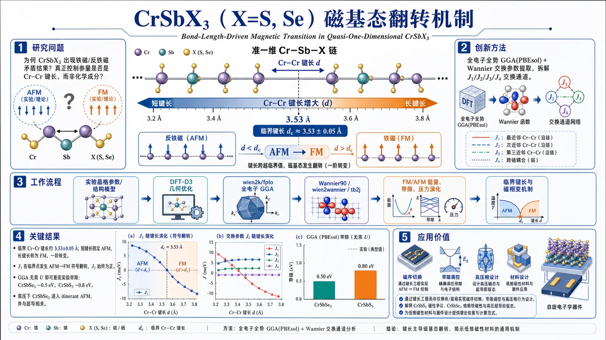
研究问题准一维 CrSbX₃（X=S, Se）为何会出现相互矛盾的铁磁/反铁磁实验结果？决定其磁基态翻转的真正控制参量是什么，是否由 Cr–Cr 键长而非化学成分本身主导？创新方法采用全电子全势 GGA(PBEsol) 计算并结合 Wannier 交换参数提取，把磁性问题拆解到交换通道层面；核心发现是 Cr–Cr 键长增大到临界值时，链内近邻超交换 J₁ 发生符号反转，而直接交换 J₂ 始终保持铁磁，从而触发 AFM→FM 的一阶磁相变。Aha 点在于：不是简单“元素决定磁性”，而是“键长精确调控交换竞争”。工作流程输入实验晶格参数与结构模型 → DFT-D3 几何优化得到 Cr–Cr 键长变化趋势 → 用 wien2k/fplo 全电子 GGA 计算总能与能带/态密度 → 通过 Wannier90/wien2wannier/tb2j 提取 J₁、J₂、J₃、J₄ 交换参数 → 比较 FM/AFM 能量差、带隙和压力下结构演化 → 得出临界键长与磁相变机制。关键结果发现 CrSbX₃ 的磁序对 Cr–Cr 键长极端敏感，临界值约为 3.53±0.05 Å；键长缩短时 AFM 稳定，拉长时转为 FM，且为一阶转变。J₁ 随键长跨越临界点发生 AFM→FM 符号翻转，而 J₂ 始终为正。GGA 在不引入 U 的情况下已能重现实验带隙：CrSbSe₃ 约 0.5 eV，CrSbS₃ 约 0.8 eV，支持其为 band insulator。压力下 CrSbSe₃ 进一步进入 itinerant AFM，且与超导相关。应用价值为准一维 Cr 基磁体提供了可直接操作的结构调控方案：通过键长工程而非仅靠掺杂或强场即可设计磁序、切换 FM/AFM、调节带隙与高压相行为。该机制还能解释 CrSbS₃ 的磁性争议、CrSbSe₃ 的绝缘铁磁性以及其高压超导前驱态，对低维磁性材料与功能器件设计具有明确指导意义。第一部分：核心概览
这篇工作揭示了准一维 CrSbX₃ (X=S, Se) 的磁基态并非由单一元素固有磁性决定，而是被 Cr–Cr 键长 精确调控：当 dCᵣ₋Cᵣ 增大到临界值 ≈3.53±0.05 Å 时，体系发生 AFM→FM 的一阶磁相变。更关键的是，磁性翻转主要来自链内 近邻超交换 J₁ 的符号反转，而 直接交换 J₂ 始终保持铁磁。全电子 GGA 计算同时在不引入显式 U 的情况下重现实验带隙，支持两者为 band insulator 而非 Mott insulator。这一结果把准一维 Cr 基磁体的磁序统一到类似 Bethe–Slater 曲线 的距离控制图景中，具有明确的结构-磁性设计意义。
---
第二部分：结构化快速回顾
《Bond-Length-Driven Magnetic Transition in Quasi-One-Dimensional CrSbX₃ (X=S, Se)》（None，）
- 背景：准一维 CrSbX₃ 同时呈现相互矛盾的 FM/AFM 实验报告；CrSbSe₃ 为少见绝缘铁磁体，CrSbS₃ 的磁序长期存在争议。
- 方法：采用 DFT-D3 几何优化、wien2k/fplo 全电子全势 GGA(PBEsol) 计算、Wannier 交换参数提取。
- 结果：磁基态对 dCᵣ₋Cᵣ 极端敏感；临界值 ≈3.53 Å 处发生 FM↔AFM 一阶转变。
- 讨论：J₁ 的符号翻转主导相变，J₂ 仅缓慢变化；压力下 CrSbSe₃ 进入 itinerant AFM，可能关联超导。
- 局限：CrSbS₃ 缺少实验内坐标；中间温区的电荷转移/异常行为超出常规 DFT 可解析范围。
- 结论：键长工程 是调控该类准一维 Cr 基磁体磁序的决定性手段。
---
第三部分：逐章节冷凝解析
I Introduction
- 低维磁体的物理背景
准一维/二维体系容易出现 Peierls 不稳定性、密度波、非常规磁性、超导 等现象，但严格一维/二维系统在有限温度下难以自发磁化，符合 Mermin–Wagner theorem。准一维材料之所以仍可磁序化，依赖弱的跨链耦合或其他方向耦合。关键引述：*"a purely one- or two-dimensional (1D/2D) system cannot sustain spontaneous magnetization at finite temperature"*。
- CrSbX₃ 家族的争议地位
CrSbS₃/CrSbSe₃ 由沿 b 轴 延展的 double-rutile chains 构成，实验上出现 FM 与 AFM 的分歧。CrSbSe₃ 是少见的绝缘铁磁体，带隙约 0.7 eV，T_C=71 K，饱和磁矩 3 μ_B/Cr，对应 Cr³⁺(3d³, S=3/2)。CrSbS₃ 的实验更复杂：电阻率约 0.9 eV 带隙，磁化率在 T_C=94 K 与 T_N=43 K 出现双峰，衍射指向 C-type AFM。原文关键信息："*CrSbS3 shows a C-type AFM*"，*"the observed saturated local moment ... 2.37 μB"*，说明其磁矩明显低于理想 S=3/2，暗示强 p-d hybridization。
- 问题意识与核心假设
争议的核心不是“是否存在磁性”，而是“磁序为何在两种几乎同构化合物中发生翻转”。主线假设是：Cr–Cr 键长 dCᵣ₋Cᵣ 是决定 FM/AFM 的控制参量，且其作用类似 Bethe–Slater curve。关键引述："*a first-order magnetic phase transition from FM to AFM order upon shortening the Cr–Cr bond length*"，*"the magnetic ground state is governed by a competition between the NN J1 and NNN J2 intra-chain interactions"*。
- 与压力和温度异常的关联
CrSbSe₃ 在高压下会经历绝缘铁磁→超导转变，起始约 33 GPa，最高 T_c=7.7 K at 58 GPa。CrSbS₃ 在 T_C 与 T_N 之间还出现异常磁化率峰、比热峰与晶格各向异性变化，暗示可能存在 charge-transfer transition 或其他非平庸中间态。关键引述："*superconductivity is likely associated with AFM fluctuations rather than FM ones*"。
---
II Crystal Structure and Calculation Approaches
- 晶体结构与空间群
两种化合物均属 Pnma，每个晶胞含 4 f.u.。结构由 CrX₆ 边共享八面体组成无限 double-rutile chains，通过 SbX₃ 三角锥连接。链沿 b 轴 延伸，层间主要是 van der Waals 相互作用。关键引述："*the edge-shared octahedra CrX6 form infinite double-rutile chains*"，*"weakly connected by the van der Waals interaction in the ac plane"*。
- 实验晶格与优化结果
采用室温实验晶格常数：
CrSbS₃: a=8.6686 Å, b=3.6194 Å, c=12.8773 Å；
CrSbSe₃: a=9.1388 Å, b=3.7836 Å, c=13.3155 Å。
优化后内坐标与实验极接近，差别仅在 0.01 Å 量级。得到的 dCᵣ₋Cᵣ 为：
- CrSbS₃：实验结构 3.39 Å，优化结构 3.48 Å
- CrSbSe₃：实验结构 3.60 Å，优化结构 3.66 Å
凝聚能分别为 4.32 eV/atom 和 3.83 eV/atom，确认体系稳定。关键引述："*the experimental and optimized values are very close to each other*"，*"confirming that both compounds are energetically bound"*。
- CrSbS₃ 的“实验结构”构造
由于缺少 CrSbS₃ 的实验内坐标，直接把优化态的 dCᵣ₋Cᵣ 减小约 0.1 Å 作为近似实验结构，再优化其余内坐标。这样处理后与 CrSbSe₃ 的经验趋势一致。关键引述："*no experimentally measured internal parameters are available for CrSbS3*"。
- 电子结构方法的关键选择
使用 wien2k 与独立的 fplo 全电子全势方法，结合 GGA(PBEsol)，在不引入 U 的情况下得到接近实验的带隙。此前基于 VASP 的工作常低估带隙，因此曾引入 LSDA+U 或 HSE。这里的核心技术判断是：带隙问题并非必然要求强关联修正，而可能与赝势/全势处理精度有关。关键引述："*our GGA calculations with the wien2k code yield band gaps ... close to the experimental values*"，*"This indicates that the insulating behavior ... can be understood within a band-insulating feature"*。
- 交换参数提取
通过 Wannier90 / wien2wannier / wannsymm / tb2j 构造对称化 maximally localized Wannier functions，在 -6 to 4 eV 能窗内投影 Cr 3d、Sb/X p 轨道，提取 Jᵢⱼ。这一步将磁相变从“现象学”转为“路径级分解”。关键引述："*the magnetic exchange parameters were calculated using the tb2j package*"。
---
III Results
#### A Energetics
- 非磁态显著不稳定
在 dCᵣ₋Cᵣ=3.2–4.0 Å 全区间内，非磁态能量始终高于磁态，差约 1 eV/f.u.，说明体系强烈偏好自旋有序。关键引述："*the nonmagnetic state is energetically unfavorable, lying approximately 1 eV/f.u. above the AFM and FM states*"。
- 磁矩几乎不随键长变化
无论 AFM 还是 FM，磁矩基本恒定：
- FM 总磁矩：3 μB
- AFM 中 Cr 局域磁矩：2.7–2.8 μB
对应 S=3/2。这表明磁相变不是由自旋大小改变驱动，而是由交换路径竞争驱动。关键引述："*the magnetic moments remain nearly unchanged*"。
- 一阶 AFM–FM 转变与临界键长
ΔE = EAFM−EFM 随 dCᵣ₋Cᵣ 变化出现明显不连续，界定为 first-order phase transition。
临界值约为 dCᵣ₋Cᵣ^c ≈ 3.53 ± 0.05 Å。
- CrSbS₃：当 dCᵣ₋Cᵣ ≳ 3.48 Å 时，FM 更稳
- CrSbSe₃：当 dCᵣ₋Cᵣ ≳ 3.58 Å 时，FM 更稳
这使 CrSbS₃ 落在临界边界附近，而 CrSbSe₃ 远离临界点，故更稳健铁磁。关键引述："*pronounced discontinuities at the boundaries of the transition between AFM and FM*"，*"dcCᵣ₋Cᵣapprox 3.53(±0.05) Å"*。
- 类 Bethe–Slater 行为
磁序随键长的转变与经典 Bethe–Slater curve 类似，但控制量不是元素间原子距离，而是准一维链中竞争交换通道的有效键长。关键引述："*This transition is analogous to the Bethe-Slater curve*"。
- 键角变化只是伴随量
Cr–X₂–Cr 键角随 dCᵣ₋Cᵣ 从约 100° 线性降到 88°，但不是主要机制；AFM 区域对应约 <91° (CrSbSe₃) 或 <93° (CrSbS₃)，这并不严格符合 Goodenough–Kanamori–Anderson 对 90° 超交换的简单预言。关键引述："*these systems do not closely follow the empirical Goodenough–Kanamori–Anderson rule*"。
- 带隙问题被重新定性
在 GGA 下，两者已是绝缘体，且带隙与实验接近：
- CrSbSe₃ FM：E_g ≈ 0.5 eV，接近实验 0.6–0.7 eV
- CrSbS₃ AFM：E_g ≈ 0.8 eV，接近实验 0.9 eV
这与早先“必须靠 U/HSE 才能开隙”的结论不同。关键引述："*our calculations ... yield Eg’s already at the GGA level*"。
#### B Electronic structures
- 非磁态的准一维 t₂g 结构
非磁态 DOS 在费米能级附近呈现准一维特征：三峰结构与近似 E⁻¹/² 行为。t₂g 半充满，表示 Cr³⁺(3d³)；与 X p 态之间的 p-d hybridization gap 最多约 0.25 eV；e_g 态位于更高能区约 0.5–4 eV。t₂g–e_g 晶场分裂约 1.8 eV。关键引述："*the DOSs near the Fermi energy ... show roughly three peaks and an E⁻¹/² dependence*"。
- CrSbS₃ 的更强共价性
CrSbS₃ 中 t₂g 区域的 X p 成分更强、p-d 间隙更大，说明 Cr–S 共价性强于 Cr–Se。其根源是平均 Cr–X 距离更短，约短 0.1 Å。关键引述："*stronger Cr-X covalent bonding in CrSbS3 compared to CrSbSe3*"。
- CrSbSe₃ 的 FM 基态电子结构
在实验结构 dCᵣ₋Cᵣ=3.60 Å 下，CrSbSe₃ 的 FM 基态带隙约 0.5 eV。
- 多数自旋通道：Cr d 主要在 -1.4 eV 以上，e_g 在导带底
- 少数自旋通道：Se p 在 -6 to -0.5 eV，Cr d 在 0.7 to 4.2 eV
- 交换劈裂约 2.5 eV
- 总磁矩 3 μB，主要由 Cr(2.9 μB) 贡献
关键引述："*indicating an insulating state of Eg∼0.5 eV and t2g³↑*"。
- 准一维带结构特征
价带顶在 Γ–Y 方向色散约 1.2 eV，对应链向跃迁积分 t_b≈0.3 eV，显示明显的一维导电/磁交换各向异性。关键引述："*The top of the valence band shows pronounced quasi-1D character*"。
- CrSbS₃ 的 AFM 基态电子结构
在 dCᵣ₋Cᵣ=3.39 Å 的实验结构下，CrSbS₃ 的 AFM 基态带隙约 0.8 eV。
- 最高占据 t₂g 多重态带宽约 0.9 eV
- 导带底由 e_g 主导
- Γ–Y 方向跃迁积分 t_b≈0.2 eV
- Cr 局域磁矩 2.7 μB，其余原子仅 0.03–0.07 μB
关键引述："*The fully filled t2g majority manifold resides right below EF with a narrow bandwidth of 0.9 eV*"。
- 磁能差与超交换尺度
CrSbSe₃ 在优化/实验结构中 E(FM)-E(AFM) 约 15–20 meV/f.u.，对应简单 Ising 模型下 J'≈3.3–4.4 meV ≈ 50 K，与 T_C=71 K 同量级。CrSbS₃ 的 AFM–FM 能差约 8–12 meV/f.u.，对应 J'≈2.5 meV ≈ 30 K，接近 T_N=43 K。这强化了交换常数与实验磁有序温标的定量一致性。
#### C Magnetic interactions
- 交换哈密顿量的定义
采用经典自旋模型 H = -Σ Jᵢⱼ eᵢ·eⱼ，其中 Jᵢⱼ<0 表示 AFM。这一定义决定了后续对 J₁/J₂ 正负号的物理解释。关键引述："*a negative Jᵢⱼ value corresponds to an AFM interaction*"。
- 主导交换通道只有四个
主要贡献来自：
- J₁：链内最近邻、由 S/Se 媒介的超交换
- J₂：链内直接最近邻交换
- J₃：链内次近邻直接交换
- J₄：最小的链间最近邻交换
其他交换可忽略。关键引述："*The dominant parameters are the three intra-chain interactions J1, J2, and J3, and the NN inter-chain interaction J4*"。
- J₁ 是相变的真正开关
J₁ 在 AFM 区域约 -5.8 meV (CrSbS₃)、-5.3 meV (CrSbSe₃)，即 AFM 超交换占优；随着 dCᵣ₋Cᵣ 增大，J₁ 在临界点处发生不连续跃迁并转为 FM。这是磁相变的主因。关键引述："*J1 is highly sensitive to dCr-Cr, evolving from AFM to FM coupling as dCr-Cr increases*"。
- J₂ 始终保持铁磁且变化平滑
J₂ 从 CrSbS₃ 的约 2 meV 到 CrSbSe₃ 的约 4 meV，始终为正，且与 t_b² 相符，说明其源于直接交换/跃迁主导的常规二阶标度。关键引述："*consistent with a relation of J2 ∝ t_b²*"。
- J₃ 与 J₄ 只是背景项
J₃≈-1 meV，J₄≈0.8 meV，均几乎不随键长变化。J₄ 很小，符合准一维磁体的层间弱耦合图像。关键引述："*The small positive J4 indicates a relatively weak inter-chain interaction*"。
- CrSbS₃ 的 C-type AFM 来源
实验观察到的 C-type AFM 来自 AFM J₁ 与 FM J₂ 的竞争：链内由 J₂ 倾向铁磁排布，而斜向媒介的 J₁ 倾向反铁磁，二者平衡后形成锯齿链磁结构。关键引述："*the experimentally observed C-type AFM structure in CrSbS3 is attributed to the competition between the AFM J1 and the FM J2*"。
- 能量差可由最简模型理解
在只保留近邻项时，
E_FM ≈ -(J’₁+J’₂)S²，
E_AFM ≈ (J’₁−J’₂)S²，
因而 ΔE ≈ 2J’₁S² = 2J₁。这使 ΔE 的符号翻转直接对应 J₁ 的符号翻转。关键引述："*The energy difference ... follows this relation reasonably well*"。
---
IV Discussion
- 压力下 CrSbSe₃ 的磁性演化
在 P=22.4 GPa、对应 dCᵣ₋Cᵣ=3.18 Å 时，CrSbSe₃ 转为 AFM，比 FM 低 12.7 meV/f.u.，说明压力压缩键长会把体系推向 AFM 区。关键引述："*At the pressure (dCr-Cr = 3.18 Å), AFM has a lower energy than FM by 12.7 meV/f.u.*"。
- 压力诱导自旋态/价态改变
高压 AFM 态中 Cr 局域磁矩降至 0.9 μB，表明从近似 3d³↑ 向 3d²↑,1↓ 的过渡，即一种更 itinerant 的自旋态重构。约 22% 的体积塌缩支持这一点。关键引述："*This state is itinerant, resulting from a substantial volume collapse of approximately 22%*"。
- 超导可能更偏向 AFM 涨落
压力路径呈现 绝缘FM → itinerant AFM → 超导，因此超导更可能与 AFM fluctuations 相关，而非 FM 涨落。Fermi 面呈现很强的一维性，暗示嵌套不稳定性。关键引述："*the superconductivity is likely associated with AFM fluctuations rather than FM ones*"。
- CrSbS₃ 中间温区的异常仍未被常规 DFT 解释
实验在 T_C=94 K 处出现第二个峰，μₑff 从 3.74 变到 2.76 μB/Cr，ESR 的 g-factor 从 1.96 跳到 1.99，曾被解释为 Cr³⁺→Cr⁴⁺ charge-transfer transition，再于 T_N=43 K 回到 Cr³⁺。
但在实验晶格参数附近做 DFT/DFT+U 优化，局域结构几乎不变，仍无法给出可辨识的电荷转移证据。关键引述："*no evident indications for the charge-transfer transition are found within our computational accuracy*"。
- 需要超越常规 DFT 的方法与实验
中间温区 T_N ≤ T ≤ T_C 的异常、以及是否真的存在电荷转移，仍需更高阶理论和可直接探测局域结构的实验。关键引述："*approaches beyond the conventional DFT would be necessary*"。
---
V Summary
- 总括性结论
准一维 CrSbX₃ 的磁序由 Cr–Cr bond length 决定。GGA 已能正确给出实验带隙，故它们更像 band insulators 而不是 Mott insulators。
临界键长 dCᵣ₋Cᵣ^c≈3.53±0.05 Å 处，J₁ 与 ΔE 同时出现不连续，意味着 first-order FM–AFM transition。
CrSbS₃ 位于临界区附近，因此实验上出现争议并不意外；CrSbSe₃ 则稳健铁磁。关键引述："*bond length as a decisive control parameter for magnetic order*"。
- 更广泛的物理意义
该体系建立了准一维 Cr 基磁体中的 Bethe–Slater-like 规律：磁序由竞争交换通道对距离的响应共同决定，而不是单纯由局域自旋大小决定。对这类系统，bond-length engineering 比传统掺杂或强场调控更直接。关键引述："*it would be much easier to access and tune multiple magnetic phases by bond-length engineering*"。
---
第四部分：深度理解与语言支持
1) 术语解析
- Bethe–Slater-like behavior
指磁交换随原子间距离变化而发生符号翻转的经验规律。这里的微妙之处在于，不是单个元素的 3d 金属晶格距离，而是 准一维链中两条竞争交换路径 随 Cr–Cr 键长 的整体重排。
- Superexchange
通过中间阴离子（这里是 S/Se）发生的间接交换。和直接交换不同，它对 键角、轨道重叠、共价性 非常敏感，因此 J₁ 会随微小结构变化而翻转。
- Direct exchange
直接由 Cr–Cr 轨道重叠产生的交换。这里对应 J₂，变化更平滑，且始终保持 FM，说明它更像“背景铁磁支撑”。
- Band insulator vs Mott insulator
Band insulator 依赖单电子能带结构自然开隙；Mott insulator 则需要显著电子关联把本该导电的系统阻塞。这里 GGA 已给出接近实验的带隙，支持前者。
- Band sticking
非对称性空间群中常见的能带“粘连”现象，源于非简并表示强制导致的简并/缠结，不是简单数值误差。出现在 Z–U–R–T–Z 线顶端，属于结构对称性后果。
2) 疑难查证：几个容易混淆的概念
- 为何“键长”能决定磁序，而不是“键角”或“化学成分”本身？
化学成分的变化，本质上先改变的是 Cr–X 距离、Cr–Cr 距离、轨道重叠、晶场分裂、p-d 混成。在这类链状体系里，dCᵣ₋Cᵣ 是更低维度、更直接的有效控制参数；键角只是它的几何投影之一，所以看起来像“键角在变”，实际上背后是交换通道的总重构。
- 为什么 AFM/FM 转变会是“一阶”而不是连续过渡？
因为两个磁态对应不同的自洽电子结构分支，J₁ 在临界点附近出现不连续跳变，能量曲线也出现断点。不是“一个磁矩缓慢旋转过去”，而是“两个局域极小值交换稳定性”。
- 为何 CrSbS₃ 的实验磁性会这么敏感？
其 dCᵣ₋Cᵣ≈3.39 Å 接近临界 3.53 Å，只差约 0.1 Å 量级；在这种近临界体系里，微小的结构差异、温度热涨落、样品缺陷都足以改变主导交换的符号。
---
第五部分：创新评估与关联
1) 创新性判断
- 把 CrSbX₃ 的磁性统一到单一结构参量
过去 2–5 年内相关工作大多分别处理 CrSbSe₃ 的 FM、CrSbS₃ 的争议 AFM、或高压下的超导/相变，但缺少一个能同时解释两者的统一机制。这里把关键控制量压缩为 dCᵣ₋Cᵣ，并给出 3.53±0.05 Å 的临界值，具有明显的统一性创新。
- 交换路径级别的机理拆解
不只是说“键长影响磁性”，而是进一步分解出：
- J₁：阴离子介导的超交换，决定相变
- J₂：链内直接交换，始终铁磁，提供稳定背景
- J₃/J₄：次要修正
这种“路径分工”是机理层面的真正贡献。
- 在无需 U 的情况下重现实验带隙
这点对 CrSbSe₃/CrSbS₃ 很重要。早先把它们定性为 Mott insulator 的做法，更多来自带隙低估；全电子全势 GGA 已能给出接近实验的带隙，直接改变了对电子关联强度的判断。
- 把准一维 Cr 基磁体与 Bethe–Slater 图景连接起来
经典 Bethe–Slater 多用于元素过渡金属；这里把它推广到准一维、化合物、双交换通道竞争的场景，说明这种经验图景具有更广泛的适用性。
- 对高压超导与中间温区异常给出新的物理指向
高压下 CrSbSe₃ 的超导更可能与 AFM fluctuations 相关，而不是 FM；CrSbS₃ 的中间温区异常则提示存在超出常规 DFT 的电荷/自旋重排。这为后续实验和更高阶理论提供了明确目标。
2) 前人未解决的问题
- CrSbS₃ 到底是 FM 还是 AFM：用临界键长把争议变成近临界结构问题。
- CrSbSe₃/CrSbS₃ 是否需要强关联 Mott 图像：给出 band-insulating 解释。
- 为何两者磁序相反：归因于 J₁ 的距离敏感符号翻转。
- 高压超导的磁性前驱态是什么：指向 AFM 而非 FM。
如需继续，我可以把这篇论文进一步整理成：
1) 一页式图表总结，或
2) “问题—证据—结论”三列表，便于直接读文献和写组会。
-
18
📊 含图深析
📄 摘要：作者研究具有空间反演不变自旋轨道相互作用的超导-正常金属-超导结中的直接与逆自旋霍尔效应。结果表明，超电流会诱发边缘静态自旋积累；反过来，空间非均匀静磁场可导致异常约瑟夫森相移，并在更高阶项下产生二极管效应。
💡 亮点：把自旋霍尔效应和约瑟夫森相移放在同一个器件框架里，得到边缘自旋积累与二极管效应。对超导自旋电子学，这是很直接的耦合机制。
📖 展开分析 + 配图
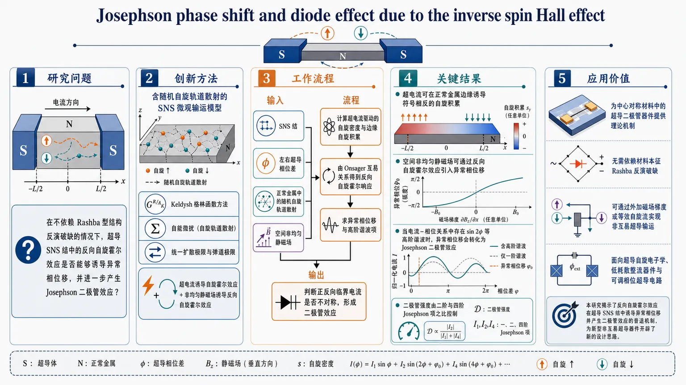
研究问题在不依赖 Rashba 型结构反演破缺的情况下，超导 SNS 结中的反向自旋霍尔效应是否能够诱导异常相位移，并进一步产生 Josephson 二极管效应？创新方法建立含随机自旋轨道散射的 SNS 微观输运模型，使用 Keldysh 少于格林函数与自能微扰，在扩散极限和弹道极限下统一计算 Josephson 电流与自旋响应；核心突破是把“超电流诱导自旋霍尔效应”与“非均匀静磁场诱导反向自旋霍尔效应”放入同一框架，并指出二极管效应来自异常相位移叠加二次谐波。工作流程输入为 SNS 结、左右超导相位差、正常金属中的随机自旋轨道散射，以及空间非均匀静磁场；先计算超电流驱动的自旋密度和边缘自旋积累，再由 Onsager 互易关系得到反向自旋霍尔响应；随后求得异常相位移与 Josephson 电流的高阶谐波项，最终判断正反向临界电流是否不对称并形成二极管效应。关键结果超电流可在正常金属边缘诱导符号相反的自旋积累，证明存在 Josephson 驱动的自旋霍尔效应；空间非均匀静磁场可通过反向自旋霍尔效应引入异常相位移；当电流-相位关系中存在 sin 2φ 等高阶谐波时，异常相位移会转化为 Josephson 二极管效应，且二极管强度由二阶与四阶 Josephson 项之比控制。应用价值为中心对称材料中的超导二极管器件提供理论机制，不再依赖材料本征的 Rashba 反演破缺；说明可通过外加磁场梯度或等效自旋流实现非互易超导输运，为超导自旋电子学、低耗散整流器件和可调相位超导电路提供设计思路。第一部分：核心概览 (Overview)
这篇工作把超导 Josephson 结中的自旋霍尔效应与反向自旋霍尔效应统一进同一套 SNS 微观输运框架：一方面，超电流可在正常金属中诱导边缘自旋积累；另一方面，空间非均匀静磁场可诱导异常相位移，并在二次谐波存在时转化为Josephson 二极管效应。核心新意在于：整个机制不依赖 Rashba 型结构反演破缺，只需外禀的自旋流/磁场梯度即可打破反演对称性，因而把二极管效应推进到更广的、甚至本征中心对称的材料平台。
---
第二部分：结构化快速回顾
《Josephson phase shift and diode effect due to the inverse spin Hall effect》（None，）
- 背景：超导自旋电子学关注无耗散超电流与自旋控制的耦合；已有二极管效应多见于Rashba 非中心对称体系，且单纯的异常相位移不足以产生二极管效应。
- 方法：建立含随机自旋轨道散射的 SNS Josephson 结，用 Keldysh 少于格林函数、自能展开与扩散近似/弹道近似计算 Josephson 电流与自旋响应。
- 结果：得到两条主线结论：
1) 超电流诱导 SHE，在边缘形成符号相反的静态自旋积累；
2) 空间非均匀静磁场诱导 ISHE 与异常相位移，进一步在 sin 2φ 谐波存在时产生二极管效应。
- 讨论：二极管效应的关键不是结构反演破缺本身，而是外禀反演破缺；磁场梯度等价于引入稳态自旋流，从而打破相位势对称性。
- 局限：结果是理论推导；后半段正文未完整提供，后续章节（VI–XI）的细节不可见。
- 结论：自旋霍尔/反自旋霍尔效应可在超导 SNS 结中驱动相位偏移与二极管整流，为中心对称材料中的超导二极管提供机制基础。
---
第三部分：逐章节冷凝解析 (Section-by-Section Condensing)
I Introduction
- 超导自旋电子学的研究主线被重新定位到“对称性工程”
重点不再只是把自旋注入超导，而是把超电流、磁化、自旋轨道耦合、反演对称性放进同一个非互易输运框架。开头就强调了“*spintronic effects in superconductors*”以及“*the prospect of combining non-dissipative supercurrents with the nonvolatility of spin-based devices*”。
- 已有二极管效应主要依赖结构反演破缺
现有超导二极管效应多见于 Rashba 接口、超晶格或半导体/金属异质结。对应表述是“*In superconductors lacking inversion symmetry, nonreciprocal supercurrent transport becomes possible*”与“*first observed in inversion-asymmetric superlattices*”。
- Rashba 机制中的异常相位移不等于二极管效应
关键区分在于：仅有相位偏移并不能自动产生正反向临界电流差，必须再引入更高阶谐波。原文明确写出“*such a phase shift alone does not give rise to a diode effect*”，以及“*can lead to a Josephson diode effect when higher harmonics... are taken into account*”。
- 本工作的核心突破：用反向自旋霍尔效应驱动相位移与二极管效应
结论性宣言是：在 SNS 结中，超电流可诱导 SHE，而空间非均匀静磁场可诱导 ISHE；后者通过自旋流打破反演对称性。对应句子包括“*We show that a supercurrent induces a SHE*”和“*the inverse spin Hall effect ... induces an anomalous phase shift*”。
---
II Premises on spin Hall effect in normal metal
#### II.1 Reciprocal relations in terms of spin density
- 用“自旋密度—电流”响应替代“自旋流”叙述，规避自旋流非守恒歧义
常规 SHE 以自旋流表述，但“*the spin current is not directly measurable*”且“*has a fundamental ambiguity arising from the nonconserving nature of spin current*”。因此改用可观测的自旋密度响应函数。
- 线性响应写成 (sᵢ₌ḩishᵢⱼAⱼ)
式 (1) 给出自旋密度对矢势的响应。核心是把 SHE 视为自旋密度与电磁场的关联函数问题，而不是抽象的自旋流输运。
- 反演对称体系中没有均匀项，最低阶是波矢线性项
展开式 (2) 明确写成
[
ḩishᵢⱼ(mathbf q,Ømega)=iϵᵢⱼₖqₖ₍łambda₀₊ᵢØmegałambda₁₊ḑots)
]
这意味着效应来自空间变化，不是均匀响应。
- SHE 对应 (łambda₁) 项，是电流涡量驱动的动态效应
由 Maxwell 关系得到
[
mathbf s=łambda₀mathbf B-łambda₁₍nabla×mathbf E)+ḑots
]
其中 (łambda₁) 对应“*spin density arises from the vorticity of an electric current*”，即自旋积累由电流旋度触发。
- ISHE 通过 Onsager 互易关系与 SHE 共享同一响应核
反向过程写成“*Due to Onsager reciprocity*”下的
[
jᵢ₌₋ḩishⱼᵢγ Bₛ,ⱼ
]
这使 ISHE 成为 SHE 的互易表述，而不是独立的经验假设。
- 静态项对应安培定律，动态项才是 ISHE 的真正内容
式 (5) 中
[
mathbf j=-γłambda₀nabla×mathbf Bₛ₋γłambda₁nabla×dotmathbf Bₛ
]
这里“*The ISHE, represented by the term (łambda₁), is a dynamic effect*”；静态 (łambda₀) 项只是电磁学常识，不是新物理。
#### II.2 Diffusive case and spin Hall angle
- 扩散后 SHE 变成非局域响应，尺度由 (ellₛ) 决定
自旋密度写成卷积形式，使用自旋扩散传播子
[
Dₛ₍mathbf r)=intfracdp2πfraceⁱmathbf pḑot mathbf r(Dp²⁺τₛ⁻¹)τ
]
其中 (ellₛ₌sqrtDτₛ)。
- 在一维横向边界上，边缘自旋积累呈指数型与双曲正弦型分布
给出
[
s_z(y)=-łambda₁Efracellₛell²e⁻W/⁽²ellₛ₎sinh(y/ellₛ₎
]
边缘值近似
[
s_z(W/2)simeq fracellₛ2ell²łambda₁E
]
说明边缘是 SHE 的直接观测位置。
- 把 (łambda₁) 与常规自旋霍尔角联系起来
定义
[
θₛₕ=σₛ/σ_B=łambda₁/(nνell²⁾
]
再代入随机自旋轨道散射结果
[
łambda₁₌fracπ9ϵₛₒν² nell²
]
得到
[
θₛₕ=fracπ9ϵₛₒν
]
即自旋霍尔角基本等于自旋轨道能量与费米能标的比值量级。
- 这一段建立了后文 SNS 结中自旋积累计算的基准语言
后文所有“超电流诱导自旋霍尔效应”的判断，都会沿用这种“边缘积累 + 波矢线性响应 + 扩散传播子”逻辑。
---
III Model of SNS junction
- SNS 结由正常金属与两侧超导体组成，耦合以点接触隧穿表示
总哈密顿量
[
H=H_N+sumα₌L,RH_α+Hₜ
]
其中正常金属含 (Hₛₒ)，左右超导体有相位 (ǎrphi_α)，接口以实数、无自旋依赖的 (t) 描述。表述上是“*the model is minimal and sufficient to capture the essence of supercurrent-driven spintronics*”。
- 超导体用 BdG 形式写出，显式保留相位差
(H_α) 中对角项是 (ϵₘₐₜₕbf ₖ)，非对角项是 (Δ e± ⁱǎrphⁱ_α)。这直接把 Josephson 相位差嵌入后续格林函数。
- Keldysh 少于格林函数用于计算物理量
选择 “*Physical quantities in N are calculated by use of the lesser Green’s function*” 的路线，是为了更透明地处理非平衡与响应函数。
- 超导自能来自异常格林函数，只保留超导通道
通过
[
Σ^a_α=t²sumₘₐₜₕbf ₖF^aαₘₐₜₕbf ₖ
]
及其共轭项构造 Josephson 耦合；耗散的电子-空穴传播被忽略，因为“*is irrelevant and is neglected*”。
- 点接触近似使左右超导对正常区的作用可视为局域自能
这把复杂界面散射压缩成可控的微扰参数 (t²)，为后续二阶、四阶 Josephson 电流计算铺路。
- 异常传播导致超电流的长程性
关键一句是“*The anomalous propagation thus leads to a contribution of a product of the retarded and advanced Green’s functions, which guarantees the long-ranged supercurrent*”。这就是 SNS 结中长程 Josephson 耦合的微观来源。
- 低频近似下自能变成标准 BCS 型核
[
Σ^a(ømega)=t²ΔfracπνsqrtΔ²⁻ømega²equiv Σ(ømega)
]
这一定式在后文被反复作为常数近似使用。
---
IV Josephson current in the diffusive case
- 先重建常规 Josephson 电流，再谈自旋相关修正
这一步是基线校验：确保 formalism 能复现
[
j_J=jc₂sinǎrphi
]
之后才能可靠讨论 SHE/ISHE。
- 扩散极限下 Josephson 电流由 cooperon 支撑
关键结构是“*the Josephson current is supported by long-range particle-particle propagation called the cooperon*”。这与无序金属中的相干电子对传播一致。
- 二阶 Josephson 电流只含 (sinǎrphi) 项
结果
[
jc₂=-frac2πfracνΣ²L²F(L/ell_T)
]
其中 (ell_T=sqrtD/T)。这说明二阶项仍保持正反相位的对称性。
- 空间分辨形式引入 (q) 依赖，准备计算自旋积累的涡量结构
定义
[
Γⱼ₍mathbf q,ømega)=sumₘₐₜₕbf ₚpⱼₑⁱmathbf pḑotmathbf Lfrac1D(p+mathbf q/2)²⁻²ⁱømegafrac1D(p-mathbf q/2)²⁻²ⁱømega
]
并得到
[
j_J(mathbf r)propto Γₓ₍mathbf r,ømega)sinǎrphi
]
这一步把“电流的空间纹理”显式暴露出来。
- 四阶 Josephson 电流产生 (sin 2ǎrphi) 谐波，是二极管效应的必要条件之一
四阶项写成
[
j_J⁽⁴⁾=jc₄sin 2ǎrphi
]
且
[
jc₄=frac18πνΣ²fracΣ²L²D²F₄₍L/ell_T)
]
这说明多重界面散射/高阶微扰自然引入二次谐波。
- 二极管效应的大小由 (jc₄/jc₂) 控制
比值
[
fracjc₄jc₂=-frac116πłeft(fracΣ L²Di̊ght)²fracF₄F
]
表明二极管非对称性并非总是强，强度受结长、扩散常数和自能共同控制。
---
V Supercurrent induced spin Hall effect
- 正常金属中的随机自旋轨道相互作用被显式写出
(Hₛₒ) 采用杂质诱导形式
[
Hₘ̊ ₛₒ=iłambdaₛₒvₘ̊ ᵢₘₚsumₘₐₜₕbf ₖₘₐₜₕbf ₖ'sumᵢ e⁻ⁱ⁽mathbf k'⁻mathbf k⁾ḑot mathbf Rᵢc^daggerₘₐₜₕbf ₖ'[(mathbf k'×mathbf k)ḑot boldsymbolσ]cₘₐₜₕbf ₖ
]
对固定杂质构型，平移与反演都被破坏；平均后恢复。对应文字是 “*after the averaging, the inversion and translational invariances are restored*”。
- 这套模型与 Rashba 体系不同：本征上不破坏反演对称性
关键句是 “*our model therefore does not break inversion symmetry, unlike the Rashba spin-orbit case*”。这为后文“无需结构反演破缺也能产生二极管效应”奠定基础。
- SHE 在 SNS 中由超导相干对传播，而不是局域矢势驱动
一句关键区分是：“*the SHE is represented by a nonlocal diagram connecting L and R superconductors*”。这说明超电流诱导的自旋积累本质上是非局域超导相干效应。
#### V.1 Ballistic case
- 弹道极限下，自旋积累来自三阶杂质自旋轨道散射
线性响应函数 (Kₛ,ᵢ) 的主导项是杂质势三阶；二阶项消失，因为“*the second order contribution vanishes, being purely imaginary*”。这和常规 AHE/SHE 的微扰结构一致。
- 最终得到的响应函数只与 ((mathbf q× mathbf p)ᵢ) 有关
低波矢/低频下
[
Kₛ,ᵢ(mathbf q,mathbf p,ømega)=-5π²łambdaₛₒν²vₘ̊ ᵢₘₚmDτ²⁽mathbf q× mathbf p)ᵢ
]
其奇偶性决定了自旋积累与相位差的关系。
- (mathbf p) 的奇性使自旋积累正比于 (sinǎrphi)
说明自旋响应与 Josephson 电流同相，属于“超电流诱导自旋霍尔效应”。
- (mathbf q) 对应边缘空间纹理，说明自旋积累在系统边缘最强
文中直接指出“*the spin accumulation is proportional to the vorticity of the Josephson current induced at the edge*”。这与普通金属中的 SHE 边缘积累完全平行。
- 接口提供 (mathbf p)，杂质提供 (mathbf q)
这句非常关键：在该形式主义里，超导界面决定 Josephson 对传播的动量结构，而随机杂质决定自旋密度的空间变化。
#### V.2 Diffusive case
- 扩散极限下，主导贡献来自带 cooperon 的长波长图
文中明确写出“*the dominant contribution at long wavelength comes from diagrams involving electron-pair propagation with successive impurity scattering, the cooperon*”。这意味着扩散修正并非小修小补，而是主导机制。
- 带三重 cooperon 的图不贡献于所需通道
“*The contribution with a cooperon inserted between the spin vertex and the spin-orbit interaction vanishes*”。因此只有特定拓扑的图保留。
- 响应函数被两个 cooperon 因子重整化
形式为
[
tilde Kₛ,ᵢ=Kₛ,ᵢ× frac1τ²frac1D(p+q/2)²⁻²ⁱømegafrac1D(p-q/2)²⁻²ⁱømega
]
这与 Josephson 电流部分的 cooperon 结构平行，说明自旋积累与超电流都受扩散相干控制。
- 正文在此处截断，后续自旋密度显式结果不可见
目前可见内容只到 “*The spin density induced by the spin Hall effect is (sᵢ₍mathbf q)= iint dømega ...)*” 的开头，后续推导未提供。
---
第四部分：深度理解与语言支持 (Understanding & Nuance)
1. 关键术语解析
- Onsager reciprocity（Onsager 互易关系）
这里不是泛泛的“可逆性”，而是指线性响应矩阵在满足微观可逆性时的对称关系。它把 SHE 与 ISHE 绑定为同一响应函数的两个投影：一个是“电流→自旋”，另一个是“自旋场→电流”。
- Anomalous phase shift（异常相位移）
指 Josephson 电流-相位关系整体平移，即 (j(ǎrphi)) 不再围绕 (ǎrphi=0) 对称。单独的相位移只改变零点，不必然改变正负临界电流的大小，所以不等于 diode effect。
- Cooperon
是扩散体系中时间反演配对传播的相干增强通道。直观上可理解为“两个相反动量、相反时间方向的电子在无序中仍能相干地一起走”。在这里它支撑长程 Josephson 耦合，也重整化自旋霍尔响应。
- Higher harmonics（更高谐波）
指电流-相位关系中的 (sin 2ǎrphi,sin 3ǎrphi,dots) 项。只有这些项与基频 (sinǎrphi) 叠加后，临界电流在正负方向才可能不同。没有高阶谐波时，异常相位移通常只是“平移”，不是“整流”。
- Extrinsic inversion symmetry breaking（外禀反演破缺）
不是材料晶格本身缺少反演中心，而是外加磁场梯度、杂质配置、或其他外部构型在有效输运层面打破反演对称性。这里的关键句是：“the spin current breaks the inversion symmetry extrinsically.”
2. 疑难概念的高阶解释
- 为什么“异常相位移”本身不够产生二极管效应？
Josephson 关系若仅变成 (j=j_csin(ǎrphi-ǎrphi₀₎)，曲线只是平移。正反方向的临界值仍然相同，最大值还是 (+j_c)，最小值还是 (-j_c)。
只有当出现 (jc₂sin 2ǎrphi) 之类高阶谐波时，波形会失去关于某个平移中心的镜像对称性，从而让 (I_c⁺≠ I_c⁻)。
- 为什么磁场梯度能等价成“自旋流”并触发 ISHE？
空间非均匀磁场会让电子自旋在不同位置经历不同 Zeeman 势，相当于在自旋自由度上施加一个“流动”的源项。在线性响应语言中，这个源项的空间导数就是自旋流/自旋电流的有效驱动。于是反向响应就从“磁场梯度 → 电流”成立。
- 为什么中心对称材料也能出现 diode effect？
关键不在晶格是否天然缺少反演中心，而在整个输运问题是否被某个外部量打破反演对称。这里磁场梯度、或带有方向性的自旋流，就是那个外部破缺源。
换言之，材料本征对称性可以保持，但装置级有效对称性已经破缺。
---
第五部分：创新评估与关联 (Synthesis & Novelty)
1. 创新性判断
- 相对于过去 2–5 年的 Josephson diode 研究，这里最显著的新意是：从 Rashba/Edelstein 机制转向 ISHE 机制。
先前主线多集中在结构反演破缺 + Rashba 自旋轨道耦合 + 磁场/磁化。这里把焦点移到随机自旋轨道散射与反向自旋霍尔效应，并明确指出：不需要材料本征上失去反演对称性，只要外部磁场梯度能生成稳态自旋流，就能诱发异常相位移与二极管效应。
- 把“超电流诱导 SHE”和“磁场梯度诱导 ISHE”放进同一 SNS 微观框架，是方法上的整合性创新。
同一套 Keldysh/格林函数语言同时处理：
1) Josephson 电流；
2) 空间分辨的自旋积累；
3) 二阶与四阶谐波；
4) 扩散与弹道极限。
这种统一性比单独讨论相位偏移或单独讨论 SHE 更强。
- 明确给出二极管效应的必要条件：异常相位移 + 高阶谐波。
这一点直接回应了前人工作的空白：异常相位移并不自动意味着二极管效应。这里用四阶 Josephson 电流 ( sin 2ǎrphi ) 把这一条件写成可计算的微观结果。
- 中心对称平台中的外禀二极管机制是实际材料上的拓展。
Rashba 机制依赖结构反演破缺，材料选择受限；这里的机制允许在更广泛的中心对称超导/金属体系中，通过磁场梯度或等效自旋流实现非互易超导传输。
- 未解决的问题仍然清晰：
1) 如何在具体材料中把 ( łambdaₛₒ,ϵₛₒ,D,τ ) 映射为可测参数；
2) 四阶谐波在真实器件中是否足够大；
3) 磁场梯度与自旋流在实验上如何稳定实现。
这些正是从理论可行性走向器件设计时的关键门槛。
如果需要，可以继续把这篇论文整理成：
1) 一页中文精读笔记，
2) 公式推导路线图，或
3) 适合答辩汇报的 PPT 版提纲。
-
19
📊 含图深析
📄 摘要：针对制药结晶中的数据孤岛、站点异质性和样本稀缺，构建物理信息联邦学习 F-PINN，在不共享原始数据的前提下联合多站点训练。框架强调个性化预测能力，同时用物理约束抑制异常场景下的发散与失稳。
💡 亮点：把物理约束嵌入联邦学习，直接面向多工厂药物结晶的隐私与异质性问题。核心价值在于少数据条件下仍能维持站点个性化与物理一致性。
📖 展开分析 + 配图
研究问题制药结晶通常分布在多个站点，各站点数据量少、机理相似但工况差异大，原始数据又不能集中共享，如何在这种“数据孤岛 + 站点异质性 + 小样本”条件下，实现准确、稳定且可个性化的结晶预测？创新方法提出物理信息联邦学习框架 F-PINN，把结晶机理约束直接嵌入联邦训练中；在不传输原始数据的前提下，联合多站点学习共享知识，同时保留站点差异，形成偏个性化预测；物理约束还像“安全绳”一样抑制异常工况下的发散与失稳。工作流程多站点本地收集结晶数据 → 各站点在本地训练含物理约束的模型 → 仅上传参数/梯度到联邦服务器 → 服务器聚合全局知识 → 下发更新后的模型 → 各站点结合本地特征进行个性化微调 → 输出更稳健的结晶预测结果。关键结果在数据稀缺且分散的制药结晶场景中，实现了无需共享原始数据的联合建模；模型不仅提升了个性化预测能力，还在异常场景下表现出更强稳定性；物理约束显著减少了模型发散问题，使预测更可靠。应用价值为制药结晶这类强机理、强异质、强隐私约束的工业场景提供可落地的智能建模方案，可支持多工厂协同优化、少样本预测和更安全的过程控制，兼顾数据合规、知识共享与实际生产稳定性。核心概览
本文提出面向制药结晶的物理信息联邦学习框架 F-PINN，用于解决多站点数据孤岛、站点异质性和小样本问题，在不共享原始数据的前提下提升个性化预测，并增强模型稳定性。
方法要点
- 采用联邦学习实现多站点联合训练，但不传输原始数据。
- 引入物理信息约束，将结晶机理知识融入模型训练。
- 设计为偏个性化的预测框架，以适应不同站点的异质性。
- 通过物理约束抑制异常场景下模型发散和失稳。
关键结果
- 在数据稀缺且分散的制药结晶场景中，可实现联合建模而无需共享原始数据。
- 框架强调并实现了个性化预测能力。
- 物理约束有助于提升模型在异常场景下的稳定性，减少发散问题。
创新性判断
- 可能的新颖点在于将物理信息建模与联邦学习结合，并明确面向制药结晶这一强机理、强异质、数据受限场景。
- 相比一般联邦学习工作，它不仅追求跨站点共享知识，还强调个性化预测与物理一致性同时成立。
- 相比常规 PINN 工作，它进一步解决了多机构/多站点数据不能集中的现实约束。
- 以上判断基于摘要，具体网络结构、个性化机制和实验对比情况摘要未详述。
-
20
📊 含图深析
📄 摘要：基于 1972–2024 年、8 个撒哈拉以南非洲经济体的年度面板数据，比较 8 种通胀预测方法。方法包括随机游走基准、两类线性计量模型，以及 Elastic Net、随机森林、XGBoost 和循环神经网络等机器学习模型，用于检验复杂模型相对简单基线的增益。
💡 亮点：这篇工作把机器学习通胀预测放回了严格基准比较框架中。它提醒我们，在低频宏观面板上，复杂模型未必天然优于随机游走或固定效应。
📖 展开分析 + 配图
研究问题在撒哈拉以南非洲的长期通胀预测中，随机游走、传统计量模型和机器学习模型谁更准确？复杂模型是否真的能稳定超越简单基准？创新方法把8个撒哈拉以南非洲经济体的1972—2024年年度面板数据放在同一预测框架下，统一比较随机游走基准、两类线性计量模型以及Elastic Net、随机森林、XGBoost、循环神经网络等机器学习模型，核心“Aha”点是用同一标尺系统检验复杂模型是否带来真实预测增益。工作流程输入8国1972—2024年度通胀面板数据；以随机游走作为基准；分别建立两类线性计量模型与多种机器学习模型；对各模型进行通胀预测；比较预测误差与相对改进；输出最优或更优的预测方案。关键结果摘要未披露具体误差数值、模型排名或显著提升幅度；已明确的发现重点是：该研究通过系统比较不同模型，检验复杂机器学习方法相对简单随机游走基准是否真正带来通胀预测增益。应用价值为撒哈拉以南非洲的通胀预测、货币政策判断、宏观风险预警和模型选型提供依据，帮助决策者判断应采用简单基线还是更复杂的预测工具。核心概览
基于1972–2024年8个撒哈拉以南非洲经济体面板数据，比较随机游走、计量模型与多种机器学习模型的通胀预测表现，属于宏观预测与比较建模方向。
方法要点
- 使用8个撒哈拉以南非洲经济体的年度面板数据，时间跨度为1972–2024年。
- 设定随机游走作为预测基准，用于衡量复杂模型是否带来增益。
- 比较两类线性计量模型与多种机器学习模型的通胀预测能力。
- 机器学习模型包括 Elastic Net、随机森林、XGBoost 和循环神经网络。
- 研究重点是检验复杂模型相对简单基线的预测改进，而非提出全新模型。
关键结果
- 摘要未详述具体预测结果、模型排序或误差指标。
- 摘要仅明确说明：该研究旨在比较不同方法，并检验复杂模型相对简单基线的增益。
创新性判断
- 可能的新颖点在于：将撒哈拉以南非洲多个经济体的长跨度面板数据，统一用于通胀预测模型比较。
- 另一潜在创新是：同时纳入传统计量模型与较多机器学习模型，并以随机游走作基准，便于系统评估复杂模型是否真的优于简单方法。
- 但摘要未提供方法设计细节与实证结论，因此上述创新性判断仅为基于摘要的合理推断，具体程度仍需全文确认。
-
21
📄 摘要：作者研究带非对称耦合和有限时延的随机二元网络，动机来自耦合超顺磁隧穿结。结果显示，时间延迟会根本改变反对称耦合诱导的动力学行为，说明真实神经形态/磁性网络不能再用无时延对称模型近似。
💡 亮点：时延会重塑随机二元网络中的反对称耦合动力学。它为超顺磁隧穿结等硬件神经网络提供了更贴近实验的描述。
-
22
📄 摘要：综述最大团问题的经典算法脉络，并补充近年的图神经网络与量子算法进展，延续1994、1999和2014年的相关综述，适合作为图优化、AI求解与量子加速的入门地图。
💡 亮点：把最大团问题的经典、GNN和量子算法串成一张路线图。适合做图优化与量子求解的综述入口。
-
23
📄 摘要：作者利用开源 EEG 数据集，构建基于运动想象左右手动作的脑机接口轮椅控制流程，并采用 Transformer 进行学习。数据被切分为 19×200 的片段以捕捉手部动作起始特征，目标是实现 EEG 驱动的方向控制。
💡 亮点：Transformer 被用于从运动想象 EEG 中识别左右手指令。该方案面向轮椅控制，体现了 BCI 与序列模型的结合。
-
24
📄 摘要：作者用扫描三维 X 射线衍射解析 La₁.₆₇₅Eu₀.₂Sr₀.₁₂₅CuO₄ 的体相微结构，揭示了名义上正交晶体中的超宽四方样畴壁区。结果表明，1/8 掺杂 cuprate 的结构并非均匀单域，而是存在显著的三维内禀异质性。
💡 亮点：三维 X 射线衍射直接看到 1/8 掺杂 cuprate 的巨型畴壁。结构非均匀性被从表面现象推进到体相层面。
-
25
📄 摘要：在 ABA 三层石墨烯零阶朗道层观测到偶数分母分数量子霍尔态，填充因子 ν=7/2、9/2 和 5/2 均出现稳健不可压缩态。7/2 附近出现 59/17、46/13，9/2 附近出现 58/13、77/17 等 Levin--Halperin 子态，突破了此类态通常仅见于第一激发朗道层的经验图景。
💡 亮点：ABA 三层石墨烯在 N=0 朗道层中直接给出 7/2、9/2、5/2 偶数分母态。结果表明非阿贝尔分数量子霍尔物理可在更低朗道层实现，拓宽了二维电子体系平台。
-
26
📄 摘要：通过面内单轴应变叠加直接c轴压缩，作者独立分离CsV3Sb5中A1g,1与A1g,2对称应变通道的响应，解析层内与层间对称畸变对超导和弹阻的不同调制。
💡 亮点：用c轴压缩拆开CsV3Sb5的对称应变通道。首次把面内/面外应变对超导和弹阻的响应分离出来。
-
27
📄 摘要：以一维Floquet随机电路为模型，作者用张量网络研究相互作用与在位无序竞争下的时间演化算符压缩性，并通过算符纠缠熵刻画算符增长，发现无序可增强压缩性。
💡 亮点：无序与相互作用竞争下，Floquet算符的可压缩性反而增强。对量子电路压缩和模拟复杂度评估很直接。
-
28
📄 摘要：作者用分子束外延在 c 面蓝宝石上生长 TiN 薄膜，获得 18 arcsec 的最小 X 射线摇摆曲线半高宽，显示出极高晶体质量。尽管 (111) 取向 TiN 与蓝宝石界面陡峭且晶化良好，仍首次观察到蓝宝石亚表面缺陷会在外延 TiN 中诱发结构缺陷，并据此制备四分之一波长 CPW 谐振器。
💡 亮点：MBE TiN 薄膜把外延质量推进到 18 arcsec 的摇摆曲线水平。更关键的是，蓝宝石亚表面缺陷会向上复制到超导层，直接影响微波器件。
-
29
📄 摘要：针对Sentinel-2野火分割的高维光谱特征、类别失衡和大气干扰，作者在U-Net瓶颈层嵌入变分量子电路，构建QFireNet，并比较QuFeX与QB-Net等量子混合ansatz。
💡 亮点：在U-Net瓶颈嵌入变分量子电路，做Sentinel-2野火分割。展示量子混合模型处理高维光谱特征的思路。
-
30
📄 摘要：作者展示倒装芯片集成平台：将SiMOS双量子点芯片与超导铝微波谐振器芯片通过铟凸点键合，使量子点栅极可被微波耦合并实现色散读出，体现异质集成路线。
💡 亮点：倒装芯片把SiMOS量子点和微波谐振器拼到一起。为半导体量子点与超导电路的异质集成提供样机。
-
31
📄 摘要：在 α'-硼烯纳米带的铁磁/常磁/铁磁结中，作者用紧束缚模型结合非平衡输运研究温度梯度驱动的自旋热输运。结果显示该体系可产生纯自旋流，并表现出高效率的自旋塞贝克二极管效应，适合低能耗自旋热器件设计。
💡 亮点：α'-硼烯纳米带在温差下可实现纯自旋流整流。该结果把硼烯的高迁移率优势转化为自旋热器件潜力。
-
32
📄 摘要：作者用变分蒙特卡洛扫描三角晶格J1-J2海森堡模型在小磁场下的基态相图，范围为0≤J2/J1≤0.2、0≤H/J1≤2，重点考察J2/J1=1/8零场自旋液在磁场下的演化，并比较大尺寸晶格上的候选态。
💡 亮点：小磁场下的三角J1-J2模型出现单极相，并追踪了零场自旋液的去向。为受场驱动的几何挫折磁体相图补上关键一块。
-
33
📄 摘要：利用工作态超导电路上的扫描门显微术，作者把微观材料缺陷中的库仑阻塞行为与器件噪声、退相干直接关联，指向表面、界面和结构缺陷的微观来源。
💡 亮点：扫描门显微术把超导电路噪声追溯到缺陷库仑阻塞。为固态量子器件的失相干机理提供材料级证据。
-
34
📄 摘要：作者提出二维莫尔异质结构中的驱动耗散方案，在不依赖吸引相互作用的条件下准备超导稳态；通过把层自由度当作赝自旋，并结合局域耗散与光学空间操作实现配对。
💡 亮点：无需吸引相互作用，也能用驱动耗散在莫尔体系里做出超导稳态。把层赝自旋和局域耗散用于配对工程。
-
35
📄 摘要：作者构建量子计算辅助框架，模拟包含零场分裂、塞曼项、超精细相互作用、偶极-偶极耦合与电子-声子退相干的自旋器件哈密顿量，并结合Gray编码完成qudit到qubit映射。
💡 亮点：把量子计算机用于自旋量子器件的全哈密顿量模拟。将量子技术设计本身变成可计算流程。
- 36
-
37
📄 摘要：作者指出，球形超流壳中大质量量子涡旋的动力学可自然映射为球面上带磁单极子电荷粒子的运动；单极荷由超流密度决定，并自动满足狄拉克量子化条件。
💡 亮点：球形超流里的量子涡旋动力学等价于磁单极子问题。把拓扑规范场与超流缺陷直接连起来。
-
38
📄 摘要：作者在近邻耦合超导纳米复合体系中直接成像自发形成的量子化涡旋，用于研究自发对称破缺后的拓扑缺陷几何特征。工作表明，即使没有外加磁场，近邻诱导超导也能出现可观测的涡旋结构。
💡 亮点：近邻超导体系里可以无外场生成自发涡旋。该结果把对称破缺和拓扑缺陷的可视化推进到纳米复合超导平台。
-
39
📄 摘要：比较两种守粒子数的拓扑非平庸态制备方案：冷浴被动耦合与工程耗散。数值结果显示，两者的冷却能力都受耗散诱导扩散限制，冷却时间呈二次标度增长。
💡 亮点：冷浴和工程耗散都能制备拓扑态，但都被扩散拖慢。二次标度的冷却时间给耗散制备划出硬上限。
-
40
📄 摘要：针对量子p自旋玻璃，作者研究其基态制备的电路复杂度，并给出浅层量子电路的下界，表明即便允许纠缠，浅电路仍难以逼近最优能量。
💡 亮点：量子p自旋玻璃存在明确的电路复杂度下界。说明浅层量子电路难以逼近其最优能量态。
-
41
📄 摘要：作者将已用于 III-V 半导体和量子点的自旋弛豫模型推广到金属卤化物钙钛矿。由于其反转能带结构，超精细耦合呈现异常层级：在 Pb 基钙钛矿中，空穴与核自旋的耦合强于电子，因而空穴主导局域载流子的自旋弛豫。
💡 亮点：金属卤化物钙钛矿的自旋弛豫不再遵循传统 III-V 的耦合排序。空穴超精细作用占优，为钙钛矿自旋/量子器件建模提供了新基准。
-
42
📄 摘要：通过系统第一性原理计算重建AgNbO₃的低能结构景观，指出其低温结构争议背后可能存在隐藏的手性铁电基态，并梳理相关极化构型与能量序关系。
💡 亮点：第一性原理把AgNbO3的低温结构争议指向隐藏手性铁电态。为无铅钙钛矿的极化设计打开新结构空间。
-
43
📄 摘要：采用无符号定值量子蒙特卡洛研究方格晶格SU(N)对称双通道康多晶格半填充问题，系统绘制N=2、4、6、8时的零温相图，随康多耦合强度辨认反铁磁与条纹通道序及其竞争关系。
💡 亮点：无符号QMC给出SU(N)双通道康多晶格零温相图，直接解析反铁磁与条纹通道序。为多通道强关联模型提供高精度基准。
-
44
📄 摘要：Science Advances 文章聚焦体内恐惧学习与消退过程中，树突棘结构变化与功能重塑之间的对应关系。题目显示其核心是把行为学习、突触结构和功能重构放在同一框架内考察。
💡 亮点：该工作把恐惧学习/消退中的树突棘结构变化与功能变化联系起来。它面向的是体内突触可塑性与行为表型的耦合机制。
-
45
📄 摘要：该工作展示可重构铁电晶体管阵列，将硬件原生的感知、计算与激活集成到同一具身神经形态视觉架构中，面向视觉前端的低功耗器件级信息处理。
💡 亮点：铁电晶体管阵列把感知、计算和激活压进同一硬件链路。面向具身神经形态视觉的器件级AI前端。
-
46
📄 摘要：在七层铜氧化物Bi2Sr2Ca6Cu7O18+δ中发现(π/2,π/2)节点区的多个空穴型费米口袋；同时在高度欠掺杂的内层看到强配对与约42 meV能隙，而该层仍保持稳固反铁磁序，显示超导与反铁磁可并存。
💡 亮点：七层铜氧化物里，多空穴口袋与约42 meV配对能隙同反铁磁序并存。说明欠掺杂内层可同时承载高温超导和磁序。
-
47
📄 摘要：作者提出由YIG磁振子模、安德烈耶夫束缚态和超导量子比特构成的三体混合架构，讨论增强相互作用下的坍缩-复现动力学与纠缠重分配，面向非成对多体耦合的量子模拟。
💡 亮点：磁振子、安德烈耶夫态和超导量子比特构成三体混合系统。可观察坍缩-复现与纠缠重分配。
-
48
📄 摘要：在单层1T-NbSe2中观测到与整倍超调制相符的结构信号，结果支持其存在与电荷密度波和反铁磁相交织的复合相，为二维过渡金属硫族化物中的耦合序提供实验线索。
💡 亮点：单层1T-NbSe2出现与CDW和反铁磁交织一致的整倍超调制。提示二维TMD中可形成复合有序相。
-
49
📄 摘要：研究有限分子环网络上的自旋无关电子哈伯德模型，考察L=3、4、5、6节点及1至3电子填充时的多体能谱；用群论分析对称性对谱结构和穆利肯分类的决定作用。
💡 亮点：分子环网络里的电子跃迁被群论和哈伯德相互作用共同约束。给出小尺寸分子网络的谱与对称性分类。
-
50
📄 摘要：作者提出 TIDE，用上下文学习结合符号蒸馏实现电池健康状态估计，同时兼顾精度、可信性与可解释性。该方法面向电池管理系统中健康估计误差会级联影响控制与维护决策的问题，强调对衰减过程的可解释建模。
💡 亮点：TIDE 把电池衰减估计做成可信且可解释的模型。上下文学习加符号蒸馏，使健康状态预测更适合部署到管理系统。
-
51
📄 摘要：作者提出两类神经算子架构，将实验测得数据直接映射为材料力学响应所对应的本构函数，用于反问题求解与本构模型发现。相比传统通过优化反复标定参数的流程，这种做法把实验到模型的映射前移为一次性学习，降低了计算成本。
💡 亮点：神经算子把本构反问题从“反复优化参数”改成“直接映射函数”。这对材料模型发现和实验数据驱动力学建模都很关键。
-
52
📄 摘要：从概率数值角度重写路径积分蒙特卡洛中的费米子符号问题，把费米可观测量计算转为统计推断；进一步按置换群共轭类学习交换回路行为，扩展到更复杂、非均匀的费米体系。
💡 亮点：把费米子符号问题改写成统计推断，并按置换家族学习交换回路。为复杂费米体系的PIMC降噪提供新思路。
-
53
📄 摘要：作者构建 SafeOR-Gym，包含 9 个面向运筹优化的安全强化学习环境，覆盖复杂约束、混合整数决策和工业级问题结构。与常见机器人/控制基准不同，该套件更贴近能源、制造和供应链等高风险场景。
💡 亮点：SafeOR-Gym 把安全 RL 拉到了运筹优化和工业约束场景。它补上了机器人基准之外的关键评测缺口。
-
54
📄 摘要：作者以蔗糖为固体碳前驱体，与 Ni 粉末均匀混合后通过快速热退火原位生成三维多层石墨烯样网络（3D-GLNs）。该路线避免了传统石墨烯分散难题，并实现了碳结构在镍基复合材料中的均匀引入。
💡 亮点：蔗糖原位碳化直接在 Ni 基体中长出三维石墨烯样网络。方法绕开了石墨烯分散难题，适合复合材料增强。
-
55
📄 摘要：作者讨论摊销贝叶斯推断中以神经网络充当学习型预测器的范式：先用较大前期计算训练网络，随后即可快速输出后验近似。文章从统计基础与经验评估两方面梳理了该方向，聚焦复杂、大规模预测问题中的可扩展推断。
💡 亮点：这篇工作梳理了摊销贝叶斯推断的神经网络范式与统计基础。它面向的是大规模问题里“前期训练重、后续推断快”的计算分工。
-
56
📄 摘要：针对 iPEPS 常用的 CTMRG 收缩中大矩阵 SVD 代价过高的问题，作者提出基于 QR 投影构造的子空间迭代 CTMRG（SI-CTMRG）。该方法将大规模 SVD 替换为小矩阵 SVD，把主要开销转移为张量收缩，更适合 GPU 加速与大规模二维张量网络计算。
💡 亮点：SI-CTMRG 用子空间迭代替代大 SVD，显著改变 iPEPS 收缩的瓶颈。它把算法重心转向可并行张量收缩，对 GPU 上的二维强关联模拟很有价值。
-
57
📄 摘要：作者面向电子实现的能耗与延迟瓶颈，探索利用光学系统完成卷积神经网络中的线性矩阵运算。工作强调全相干光子 CNN 的构建难点，并引入预训练加原位训练的策略，以提升光子硬件上的可训练性与部署可行性。
💡 亮点：光子 CNN 试图用光速级线性运算替代电子卷积。预训练与原位训练结合，目标是让光硬件真正可训练、可部署。
-
58
📄 摘要：作者提出基于最后一层投影回归（LLPR）的主动学习流程，用前向传播即可估计单个构型的不确定性，避免基础模型力场中昂贵的委员会微调。该方法面向从头训练与 foundation MLFF 微调两种场景，目标是在更少标注下达到接近全数据训练的精度。
💡 亮点：LLPR 把 ML 力场主动学习的代价压到前向传播级别。它直接回应了 foundation MLFF 标注昂贵、委员会不现实的瓶颈。
-
59
📄 摘要：针对表贴式永磁同步电机（SPMSM）的参数不确定、扰动和负载变化问题，作者提出集成 RBF 神经网络、固定时间积分终端滑模控制器和超扭转扩张状态观测器的复合方案。该策略以固定时间收敛为目标，同时提升速度调节的动态响应和鲁棒性。
💡 亮点：RBF 网络、固定时间滑模和 STESO 三者耦合，强化了 SPMSM 的抗扰控制。核心价值在于把收敛时间上界和鲁棒性一起做强。
-
60
📄 摘要：作者针对推荐系统从短期行为信号转向长期留存目标的趋势，提出模型无关的下游奖励学习框架。方法面向回报稀疏、延迟且难以归因的问题，避免了强依赖任务特定奖励工程和大量手工设计。
💡 亮点：该工作把推荐优化从短期点击拉到长期留存。模型无关的奖励学习降低了长期参与优化对人工奖励设计的依赖。